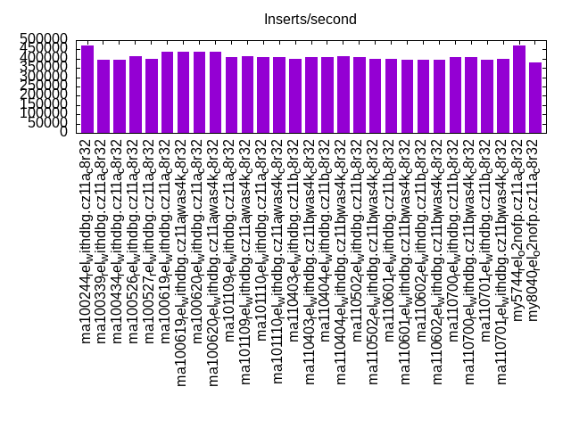
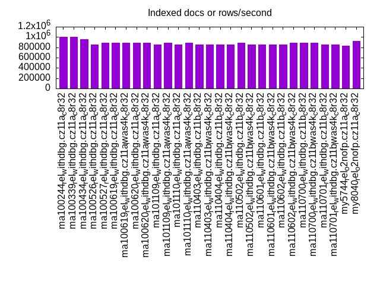
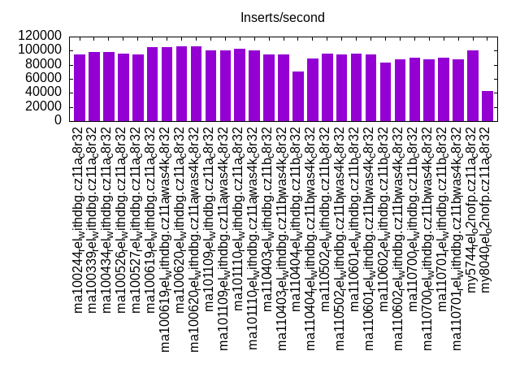
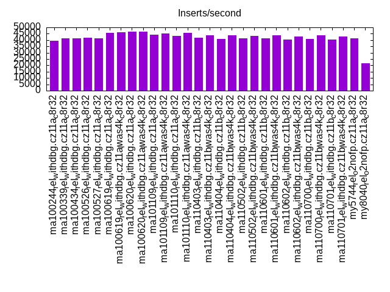
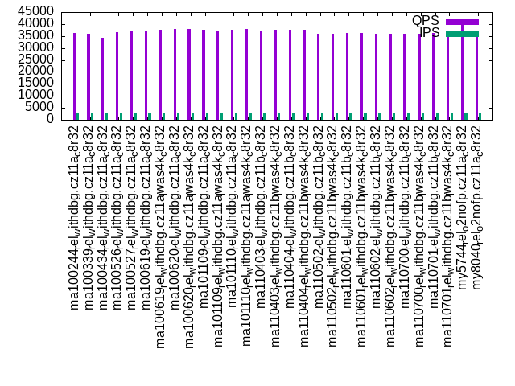
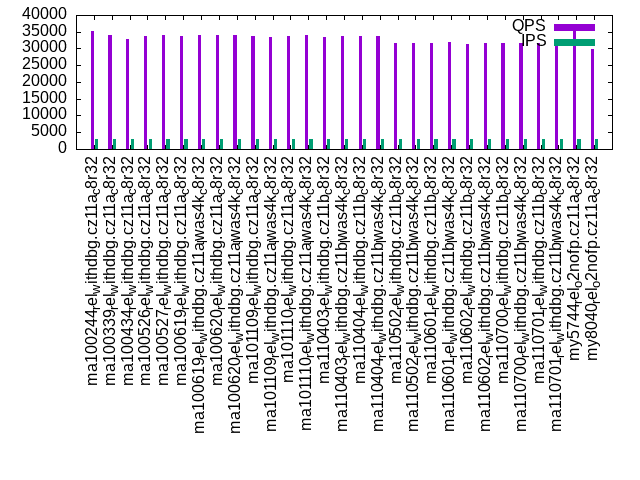
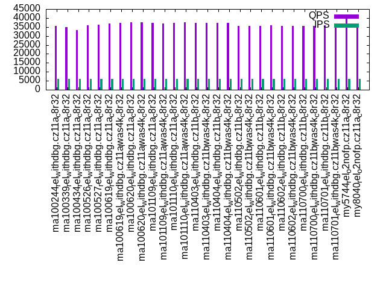
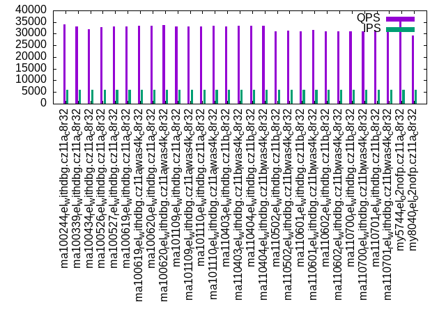

This is a report for the insert benchmark with 24M docs and 6 client(s). It is generated by scripts (bash, awk, sed) and Tufte might not be impressed. An overview of the insert benchmark is here and a short update is here. Below, by DBMS, I mean DBMS+version.config. An example is my8020.c10b40 where my means MySQL, 8020 is version 8.0.20 and c10b40 is the name for the configuration file.
The test server has 8 AMD cores, 32G RAM and an NVMe SSD. It is described here as the ASUS PN53. The benchmark was run with 6 clients and there were 1 or 3 connections per client (1 for queries or inserts without rate limits, 1+1 for rate limited inserts+deletes). It uses 1 table. It loads 4M rows per table without secondary indexes, creates 3 secondary indexes per table, then inserts 4m+1m rows per table with a delete per insert to avoid growing the table. It then does 6 read+write tests for 1800s each that do queries as fast as possible with 100,100,500,500,1000,1000 inserts/s and the same for deletes/s per client concurrent with the queries. The database is cached by InnoDB. Clients and the DBMS share one server. The per-database configs are in the per-database subdirectories here.
The tested DBMS are:
The numbers are inserts/s for l.i0, l.i1 and l.i2, indexed docs (or rows) /s for l.x and queries/s for qr100, qp100 thru qr1000, qp1000" The values are the average rate over the entire test for inserts (IPS) and queries (QPS). The range of values for IPS and QPS is split into 3 parts: bottom 25%, middle 50%, top 25%. Values in the bottom 25% have a red background, values in the top 25% have a green background and values in the middle have no color. A gray background is used for values that can be ignored because the DBMS did not sustain the target insert rate. Red backgrounds are not used when the minimum value is within 80% of the max value.
| dbms | l.i0 | l.x | l.i1 | l.i2 | qr100 | qp100 | qr500 | qp500 | qr1000 | qp1000 |
|---|---|---|---|---|---|---|---|---|---|---|
| ma100244_rel_withdbg.cz11a_c8r32 | 470588 | 1000004 | 94581 | 39280 | 37499 | 35672 | 36182 | 35140 | 35491 | 34162 |
| ma100339_rel_withdbg.cz11a_c8r32 | 393443 | 1000004 | 97660 | 41237 | 37160 | 34769 | 35896 | 34064 | 35033 | 33145 |
| ma100434_rel_withdbg.cz11a_c8r32 | 393443 | 960004 | 98260 | 41237 | 35603 | 33615 | 34396 | 32863 | 33354 | 31963 |
| ma100526_rel_withdbg.cz11a_c8r32 | 413793 | 857146 | 95333 | 41667 | 37092 | 34127 | 36579 | 33719 | 36059 | 32859 |
| ma100527_rel_withdbg.cz11a_c8r32 | 400000 | 888892 | 94768 | 41522 | 37134 | 34215 | 36786 | 33954 | 36252 | 33051 |
| ma100619_rel_withdbg.cz11a_c8r32 | 436364 | 888892 | 104803 | 45802 | 37457 | 33990 | 37269 | 33636 | 36998 | 33278 |
| ma100619_rel_withdbg.cz11a_lwas4k_c8r32 | 436364 | 888892 | 105033 | 46065 | 37828 | 34130 | 37667 | 33927 | 37301 | 33529 |
| ma100620_rel_withdbg.cz11a_c8r32 | 436364 | 888892 | 105610 | 46693 | 38025 | 34189 | 38052 | 34107 | 37707 | 33573 |
| ma100620_rel_withdbg.cz11a_lwas4k_c8r32 | 436364 | 888892 | 105727 | 46512 | 38068 | 34343 | 37939 | 34032 | 37700 | 33708 |
| ma101109_rel_withdbg.cz11a_c8r32 | 406780 | 857146 | 100946 | 44037 | 37755 | 33782 | 37514 | 33605 | 37329 | 33205 |
| ma101109_rel_withdbg.cz11a_lwas4k_c8r32 | 413793 | 888892 | 100104 | 45198 | 37541 | 33789 | 37354 | 33492 | 37020 | 33169 |
| ma101110_rel_withdbg.cz11a_c8r32 | 406780 | 857146 | 102128 | 43400 | 37725 | 33889 | 37536 | 33629 | 37247 | 33149 |
| ma101110_rel_withdbg.cz11a_lwas4k_c8r32 | 406780 | 888892 | 100946 | 45627 | 37975 | 34171 | 37824 | 33938 | 37523 | 33538 |
| ma110403_rel_withdbg.cz11b_c8r32 | 400000 | 857146 | 95144 | 41812 | 37694 | 33818 | 37421 | 33522 | 37134 | 33111 |
| ma110403_rel_withdbg.cz11b_lwas4k_c8r32 | 406780 | 857146 | 94210 | 43557 | 37674 | 34011 | 37734 | 33814 | 37260 | 33334 |
| ma110404_rel_withdbg.cz11b_c8r32 | 406780 | 857146 | 70175 | 40886 | 37719 | 33959 | 37472 | 33634 | 37123 | 33301 |
| ma110404_rel_withdbg.cz11b_lwas4k_c8r32 | 413793 | 857146 | 88971 | 43796 | 37698 | 33971 | 37536 | 33668 | 37212 | 33298 |
| ma110502_rel_withdbg.cz11b_c8r32 | 406780 | 888892 | 96000 | 41451 | 36071 | 31792 | 35959 | 31544 | 35568 | 31016 |
| ma110502_rel_withdbg.cz11b_lwas4k_c8r32 | 400000 | 857146 | 94581 | 43478 | 36239 | 31781 | 36078 | 31687 | 35745 | 31258 |
| ma110601_rel_withdbg.cz11b_c8r32 | 400000 | 857146 | 95522 | 41451 | 36227 | 31988 | 36122 | 31634 | 35730 | 31186 |
| ma110601_rel_withdbg.cz11b_lwas4k_c8r32 | 393443 | 857146 | 94395 | 43636 | 36485 | 32186 | 36228 | 31923 | 35998 | 31542 |
| ma110602_rel_withdbg.cz11b_c8r32 | 393443 | 857146 | 82973 | 40336 | 36273 | 31937 | 35771 | 31458 | 35726 | 30992 |
| ma110602_rel_withdbg.cz11b_lwas4k_c8r32 | 393443 | 888892 | 87432 | 43011 | 36092 | 31837 | 35773 | 31616 | 35556 | 31187 |
| ma110700_rel_withdbg.cz11b_c8r32 | 406780 | 888892 | 90141 | 40747 | 36265 | 31734 | 36034 | 31496 | 35725 | 31088 |
| ma110700_rel_withdbg.cz11b_lwas4k_c8r32 | 406780 | 888892 | 87912 | 43636 | 36143 | 31616 | 35968 | 31510 | 35681 | 31137 |
| ma110701_rel_withdbg.cz11b_c8r32 | 393443 | 857146 | 90056 | 40268 | 36260 | 31877 | 36150 | 31697 | 36000 | 31234 |
| ma110701_rel_withdbg.cz11b_lwas4k_c8r32 | 400000 | 857146 | 88073 | 42857 | 36318 | 31858 | 36078 | 31660 | 35866 | 31143 |
| my5744_rel_o2nofp.cz11a_c8r32 | 470588 | 827590 | 100418 | 41379 | 40863 | 36101 | 40682 | 35716 | 40460 | 35393 |
| my8040_rel_o2nofp.cz11a_c8r32 | 380952 | 923081 | 42857 | 21858 | 37309 | 29973 | 36888 | 29826 | 36362 | 29222 |
This table has relative throughput, throughput for the DBMS relative to the DBMS in the first line, using the absolute throughput from the previous table. Values less than 0.95 have a yellow background. Values greater than 1.05 have a blue background.
| dbms | l.i0 | l.x | l.i1 | l.i2 | qr100 | qp100 | qr500 | qp500 | qr1000 | qp1000 |
|---|---|---|---|---|---|---|---|---|---|---|
| ma100244_rel_withdbg.cz11a_c8r32 | 1.00 | 1.00 | 1.00 | 1.00 | 1.00 | 1.00 | 1.00 | 1.00 | 1.00 | 1.00 |
| ma100339_rel_withdbg.cz11a_c8r32 | 0.84 | 1.00 | 1.03 | 1.05 | 0.99 | 0.97 | 0.99 | 0.97 | 0.99 | 0.97 |
| ma100434_rel_withdbg.cz11a_c8r32 | 0.84 | 0.96 | 1.04 | 1.05 | 0.95 | 0.94 | 0.95 | 0.94 | 0.94 | 0.94 |
| ma100526_rel_withdbg.cz11a_c8r32 | 0.88 | 0.86 | 1.01 | 1.06 | 0.99 | 0.96 | 1.01 | 0.96 | 1.02 | 0.96 |
| ma100527_rel_withdbg.cz11a_c8r32 | 0.85 | 0.89 | 1.00 | 1.06 | 0.99 | 0.96 | 1.02 | 0.97 | 1.02 | 0.97 |
| ma100619_rel_withdbg.cz11a_c8r32 | 0.93 | 0.89 | 1.11 | 1.17 | 1.00 | 0.95 | 1.03 | 0.96 | 1.04 | 0.97 |
| ma100619_rel_withdbg.cz11a_lwas4k_c8r32 | 0.93 | 0.89 | 1.11 | 1.17 | 1.01 | 0.96 | 1.04 | 0.97 | 1.05 | 0.98 |
| ma100620_rel_withdbg.cz11a_c8r32 | 0.93 | 0.89 | 1.12 | 1.19 | 1.01 | 0.96 | 1.05 | 0.97 | 1.06 | 0.98 |
| ma100620_rel_withdbg.cz11a_lwas4k_c8r32 | 0.93 | 0.89 | 1.12 | 1.18 | 1.02 | 0.96 | 1.05 | 0.97 | 1.06 | 0.99 |
| ma101109_rel_withdbg.cz11a_c8r32 | 0.86 | 0.86 | 1.07 | 1.12 | 1.01 | 0.95 | 1.04 | 0.96 | 1.05 | 0.97 |
| ma101109_rel_withdbg.cz11a_lwas4k_c8r32 | 0.88 | 0.89 | 1.06 | 1.15 | 1.00 | 0.95 | 1.03 | 0.95 | 1.04 | 0.97 |
| ma101110_rel_withdbg.cz11a_c8r32 | 0.86 | 0.86 | 1.08 | 1.10 | 1.01 | 0.95 | 1.04 | 0.96 | 1.05 | 0.97 |
| ma101110_rel_withdbg.cz11a_lwas4k_c8r32 | 0.86 | 0.89 | 1.07 | 1.16 | 1.01 | 0.96 | 1.05 | 0.97 | 1.06 | 0.98 |
| ma110403_rel_withdbg.cz11b_c8r32 | 0.85 | 0.86 | 1.01 | 1.06 | 1.01 | 0.95 | 1.03 | 0.95 | 1.05 | 0.97 |
| ma110403_rel_withdbg.cz11b_lwas4k_c8r32 | 0.86 | 0.86 | 1.00 | 1.11 | 1.00 | 0.95 | 1.04 | 0.96 | 1.05 | 0.98 |
| ma110404_rel_withdbg.cz11b_c8r32 | 0.86 | 0.86 | 0.74 | 1.04 | 1.01 | 0.95 | 1.04 | 0.96 | 1.05 | 0.97 |
| ma110404_rel_withdbg.cz11b_lwas4k_c8r32 | 0.88 | 0.86 | 0.94 | 1.11 | 1.01 | 0.95 | 1.04 | 0.96 | 1.05 | 0.97 |
| ma110502_rel_withdbg.cz11b_c8r32 | 0.86 | 0.89 | 1.02 | 1.06 | 0.96 | 0.89 | 0.99 | 0.90 | 1.00 | 0.91 |
| ma110502_rel_withdbg.cz11b_lwas4k_c8r32 | 0.85 | 0.86 | 1.00 | 1.11 | 0.97 | 0.89 | 1.00 | 0.90 | 1.01 | 0.91 |
| ma110601_rel_withdbg.cz11b_c8r32 | 0.85 | 0.86 | 1.01 | 1.06 | 0.97 | 0.90 | 1.00 | 0.90 | 1.01 | 0.91 |
| ma110601_rel_withdbg.cz11b_lwas4k_c8r32 | 0.84 | 0.86 | 1.00 | 1.11 | 0.97 | 0.90 | 1.00 | 0.91 | 1.01 | 0.92 |
| ma110602_rel_withdbg.cz11b_c8r32 | 0.84 | 0.86 | 0.88 | 1.03 | 0.97 | 0.90 | 0.99 | 0.90 | 1.01 | 0.91 |
| ma110602_rel_withdbg.cz11b_lwas4k_c8r32 | 0.84 | 0.89 | 0.92 | 1.09 | 0.96 | 0.89 | 0.99 | 0.90 | 1.00 | 0.91 |
| ma110700_rel_withdbg.cz11b_c8r32 | 0.86 | 0.89 | 0.95 | 1.04 | 0.97 | 0.89 | 1.00 | 0.90 | 1.01 | 0.91 |
| ma110700_rel_withdbg.cz11b_lwas4k_c8r32 | 0.86 | 0.89 | 0.93 | 1.11 | 0.96 | 0.89 | 0.99 | 0.90 | 1.01 | 0.91 |
| ma110701_rel_withdbg.cz11b_c8r32 | 0.84 | 0.86 | 0.95 | 1.03 | 0.97 | 0.89 | 1.00 | 0.90 | 1.01 | 0.91 |
| ma110701_rel_withdbg.cz11b_lwas4k_c8r32 | 0.85 | 0.86 | 0.93 | 1.09 | 0.97 | 0.89 | 1.00 | 0.90 | 1.01 | 0.91 |
| my5744_rel_o2nofp.cz11a_c8r32 | 1.00 | 0.83 | 1.06 | 1.05 | 1.09 | 1.01 | 1.12 | 1.02 | 1.14 | 1.04 |
| my8040_rel_o2nofp.cz11a_c8r32 | 0.81 | 0.92 | 0.45 | 0.56 | 0.99 | 0.84 | 1.02 | 0.85 | 1.02 | 0.86 |
This lists the average rate of inserts/s for the tests that do inserts concurrent with queries. For such tests the query rate is listed in the table above. The read+write tests are setup so that the insert rate should match the target rate every second. Cells that are not at least 95% of the target have a red background to indicate a failure to satisfy the target.
| dbms | qr100.L1 | qp100.L2 | qr500.L3 | qp500.L4 | qr1000.L5 | qp1000.L6 |
|---|---|---|---|---|---|---|
| ma100244_rel_withdbg.cz11a_c8r32 | 598 | 597 | 2987 | 2988 | 5973 | 5973 |
| ma100339_rel_withdbg.cz11a_c8r32 | 598 | 597 | 2987 | 2988 | 5973 | 5973 |
| ma100434_rel_withdbg.cz11a_c8r32 | 597 | 597 | 2988 | 2987 | 5977 | 5977 |
| ma100526_rel_withdbg.cz11a_c8r32 | 598 | 597 | 2988 | 2987 | 5977 | 5977 |
| ma100527_rel_withdbg.cz11a_c8r32 | 597 | 597 | 2988 | 2987 | 5977 | 5977 |
| ma100619_rel_withdbg.cz11a_c8r32 | 598 | 598 | 2988 | 2987 | 5977 | 5977 |
| ma100619_rel_withdbg.cz11a_lwas4k_c8r32 | 597 | 598 | 2987 | 2988 | 5973 | 5977 |
| ma100620_rel_withdbg.cz11a_c8r32 | 597 | 597 | 2987 | 2988 | 5973 | 5977 |
| ma100620_rel_withdbg.cz11a_lwas4k_c8r32 | 597 | 598 | 2987 | 2988 | 5973 | 5973 |
| ma101109_rel_withdbg.cz11a_c8r32 | 598 | 598 | 2988 | 2988 | 5973 | 5973 |
| ma101109_rel_withdbg.cz11a_lwas4k_c8r32 | 598 | 598 | 2987 | 2988 | 5973 | 5977 |
| ma101110_rel_withdbg.cz11a_c8r32 | 597 | 598 | 2988 | 2988 | 5973 | 5973 |
| ma101110_rel_withdbg.cz11a_lwas4k_c8r32 | 597 | 597 | 2987 | 2988 | 5977 | 5973 |
| ma110403_rel_withdbg.cz11b_c8r32 | 598 | 598 | 2987 | 2988 | 5973 | 5973 |
| ma110403_rel_withdbg.cz11b_lwas4k_c8r32 | 597 | 598 | 2987 | 2988 | 5973 | 5973 |
| ma110404_rel_withdbg.cz11b_c8r32 | 598 | 597 | 2988 | 2988 | 5977 | 5977 |
| ma110404_rel_withdbg.cz11b_lwas4k_c8r32 | 598 | 597 | 2987 | 2987 | 5977 | 5973 |
| ma110502_rel_withdbg.cz11b_c8r32 | 597 | 597 | 2988 | 2987 | 5977 | 5977 |
| ma110502_rel_withdbg.cz11b_lwas4k_c8r32 | 598 | 597 | 2988 | 2987 | 5973 | 5977 |
| ma110601_rel_withdbg.cz11b_c8r32 | 597 | 597 | 2987 | 2987 | 5973 | 5973 |
| ma110601_rel_withdbg.cz11b_lwas4k_c8r32 | 598 | 597 | 2987 | 2988 | 5973 | 5973 |
| ma110602_rel_withdbg.cz11b_c8r32 | 598 | 597 | 2987 | 2987 | 5977 | 5973 |
| ma110602_rel_withdbg.cz11b_lwas4k_c8r32 | 597 | 598 | 2987 | 2987 | 5977 | 5973 |
| ma110700_rel_withdbg.cz11b_c8r32 | 598 | 597 | 2988 | 2987 | 5977 | 5977 |
| ma110700_rel_withdbg.cz11b_lwas4k_c8r32 | 597 | 598 | 2987 | 2988 | 5973 | 5977 |
| ma110701_rel_withdbg.cz11b_c8r32 | 597 | 597 | 2988 | 2987 | 5973 | 5973 |
| ma110701_rel_withdbg.cz11b_lwas4k_c8r32 | 597 | 597 | 2987 | 2988 | 5973 | 5973 |
| my5744_rel_o2nofp.cz11a_c8r32 | 597 | 597 | 2988 | 2987 | 5977 | 5973 |
| my8040_rel_o2nofp.cz11a_c8r32 | 597 | 598 | 2987 | 2988 | 5973 | 5977 |
| target | 600 | 600 | 3000 | 3000 | 6000 | 6000 |
l.i0: load without secondary indexes. Graphs for performance per 1-second interval are here.
Average throughput:
Insert response time histogram: each cell has the percentage of responses that take <= the time in the header and max is the max response time in seconds. For the max column values in the top 25% of the range have a red background and in the bottom 25% of the range have a green background. The red background is not used when the min value is within 80% of the max value.
| dbms | 256us | 1ms | 4ms | 16ms | 64ms | 256ms | 1s | 4s | 16s | gt | max |
|---|---|---|---|---|---|---|---|---|---|---|---|
| ma100244_rel_withdbg.cz11a_c8r32 | 78.021 | 21.485 | 0.432 | 0.040 | 0.021 | 0.242 | |||||
| ma100339_rel_withdbg.cz11a_c8r32 | 59.558 | 39.841 | 0.520 | 0.057 | 0.023 | 0.241 | |||||
| ma100434_rel_withdbg.cz11a_c8r32 | 59.104 | 40.305 | 0.513 | 0.056 | 0.022 | 0.249 | |||||
| ma100526_rel_withdbg.cz11a_c8r32 | 71.888 | 27.419 | 0.463 | 0.172 | 0.057 | 0.242 | |||||
| ma100527_rel_withdbg.cz11a_c8r32 | 72.334 | 26.978 | 0.394 | 0.227 | 0.068 | 0.236 | |||||
| ma100619_rel_withdbg.cz11a_c8r32 | 73.253 | 26.223 | 0.448 | 0.054 | 0.022 | 0.229 | |||||
| ma100619_rel_withdbg.cz11a_lwas4k_c8r32 | 73.523 | 25.933 | 0.458 | 0.064 | 0.021 | 0.234 | |||||
| ma100620_rel_withdbg.cz11a_c8r32 | 73.502 | 25.966 | 0.409 | 0.100 | 0.021 | 0.002 | 0.265 | ||||
| ma100620_rel_withdbg.cz11a_lwas4k_c8r32 | 74.033 | 25.431 | 0.396 | 0.116 | 0.023 | 0.236 | |||||
| ma101109_rel_withdbg.cz11a_c8r32 | 63.737 | 35.646 | 0.527 | 0.068 | 0.022 | 0.227 | |||||
| ma101109_rel_withdbg.cz11a_lwas4k_c8r32 | 63.510 | 35.883 | 0.519 | 0.066 | 0.022 | 0.243 | |||||
| ma101110_rel_withdbg.cz11a_c8r32 | 62.970 | 36.438 | 0.505 | 0.065 | 0.022 | 0.244 | |||||
| ma101110_rel_withdbg.cz11a_lwas4k_c8r32 | 62.790 | 36.625 | 0.473 | 0.090 | 0.023 | 0.253 | |||||
| ma110403_rel_withdbg.cz11b_c8r32 | 62.470 | 36.922 | 0.516 | 0.070 | 0.022 | 0.242 | |||||
| ma110403_rel_withdbg.cz11b_lwas4k_c8r32 | 62.161 | 37.197 | 0.549 | 0.072 | 0.022 | 0.225 | |||||
| ma110404_rel_withdbg.cz11b_c8r32 | 64.397 | 35.056 | 0.427 | 0.097 | 0.020 | 0.003 | 0.302 | ||||
| ma110404_rel_withdbg.cz11b_lwas4k_c8r32 | 63.008 | 36.422 | 0.485 | 0.062 | 0.020 | 0.003 | 0.276 | ||||
| ma110502_rel_withdbg.cz11b_c8r32 | 63.259 | 36.092 | 0.559 | 0.069 | 0.022 | 0.224 | |||||
| ma110502_rel_withdbg.cz11b_lwas4k_c8r32 | 62.887 | 36.438 | 0.580 | 0.074 | 0.022 | 0.237 | |||||
| ma110601_rel_withdbg.cz11b_c8r32 | 62.472 | 36.897 | 0.539 | 0.069 | 0.023 | 0.225 | |||||
| ma110601_rel_withdbg.cz11b_lwas4k_c8r32 | 63.137 | 36.220 | 0.549 | 0.072 | 0.022 | 0.245 | |||||
| ma110602_rel_withdbg.cz11b_c8r32 | 62.930 | 36.428 | 0.466 | 0.151 | 0.023 | 0.001 | 0.267 | ||||
| ma110602_rel_withdbg.cz11b_lwas4k_c8r32 | 62.164 | 37.187 | 0.554 | 0.073 | 0.022 | 0.226 | |||||
| ma110700_rel_withdbg.cz11b_c8r32 | 63.557 | 35.829 | 0.519 | 0.073 | 0.022 | 0.224 | |||||
| ma110700_rel_withdbg.cz11b_lwas4k_c8r32 | 63.755 | 35.640 | 0.521 | 0.062 | 0.022 | 0.237 | |||||
| ma110701_rel_withdbg.cz11b_c8r32 | 62.454 | 36.914 | 0.536 | 0.074 | 0.022 | 0.227 | |||||
| ma110701_rel_withdbg.cz11b_lwas4k_c8r32 | 62.175 | 37.197 | 0.535 | 0.070 | 0.022 | 0.242 | |||||
| my5744_rel_o2nofp.cz11a_c8r32 | 75.628 | 24.050 | 0.231 | 0.080 | 0.007 | 0.005 | 0.265 | ||||
| my8040_rel_o2nofp.cz11a_c8r32 | 68.232 | 31.336 | 0.255 | 0.095 | 0.083 | 0.248 |
Performance metrics for the DBMS listed above. Some are normalized by throughput, others are not. Legend for results is here.
ips qps rps rmbps wps wmbps rpq rkbpq wpi wkbpi csps cpups cspq cpupq dbgb1 dbgb2 rss maxop p50 p99 tag 470588 0 1 0.0 1491.2 125.3 0.000 0.000 0.003 0.273 29742 63.5 0.063 11 1.6 32.4 1.8 0.242 105450 75424 ma100244_rel_withdbg.cz11a_c8r32 393443 0 1 0.0 1524.6 119.4 0.000 0.000 0.004 0.311 39326 77.0 0.100 16 1.6 32.4 2.6 0.241 83117 26374 ma100339_rel_withdbg.cz11a_c8r32 393443 0 1 0.0 1473.9 117.5 0.000 0.000 0.004 0.306 38928 77.6 0.099 16 1.6 32.4 NA 0.249 82175 36364 ma100434_rel_withdbg.cz11a_c8r32 413793 0 1 0.0 2936.6 121.8 0.000 0.000 0.007 0.302 53296 72.8 0.129 14 1.6 32.4 2.4 0.242 88111 30465 ma100526_rel_withdbg.cz11a_c8r32 400000 0 1 0.0 2884.9 120.2 0.000 0.000 0.007 0.308 49592 67.8 0.124 14 1.6 32.4 2.4 0.236 88220 48570 ma100527_rel_withdbg.cz11a_c8r32 436364 0 1 0.0 802.5 91.5 0.000 0.000 0.002 0.215 35110 74.2 0.080 14 1.6 32.4 2.2 0.229 96971 51152 ma100619_rel_withdbg.cz11a_c8r32 436364 0 1 0.0 804.2 91.5 0.000 0.000 0.002 0.215 34823 72.3 0.080 13 1.6 32.4 2.2 0.234 97069 14189 ma100619_rel_withdbg.cz11a_lwas4k_c8r32 436364 0 1 0.0 799.5 91.4 0.000 0.000 0.002 0.214 35771 68.0 0.082 12 1.6 32.4 2.2 0.265 102498 55217 ma100620_rel_withdbg.cz11a_c8r32 436364 0 1 0.0 800.3 91.3 0.000 0.000 0.002 0.214 35448 68.4 0.081 13 1.6 32.4 2.2 0.236 100599 24575 ma100620_rel_withdbg.cz11a_lwas4k_c8r32 406780 0 1 0.0 775.6 88.0 0.000 0.000 0.002 0.222 39980 71.4 0.098 14 1.6 32.4 2.2 0.227 86508 65234 ma101109_rel_withdbg.cz11a_c8r32 413793 0 1 0.0 774.7 88.0 0.000 0.000 0.002 0.218 40735 71.8 0.098 14 1.6 32.4 2.2 0.243 86513 70368 ma101109_rel_withdbg.cz11a_lwas4k_c8r32 406780 0 1 0.0 766.7 87.2 0.000 0.000 0.002 0.220 42614 67.4 0.105 13 1.6 32.4 2.1 0.244 87387 21581 ma101110_rel_withdbg.cz11a_c8r32 406780 0 1 0.0 763.2 86.8 0.000 0.000 0.002 0.219 42304 66.9 0.104 13 1.6 32.4 2.1 0.253 88782 58838 ma101110_rel_withdbg.cz11a_lwas4k_c8r32 400000 0 1 0.0 771.4 87.5 0.000 0.000 0.002 0.224 43046 71.5 0.108 14 1.6 32.4 2.2 0.242 85215 1398 ma110403_rel_withdbg.cz11b_c8r32 406780 0 0 0.0 766.9 87.3 0.000 0.000 0.002 0.220 42819 71.5 0.105 14 1.6 32.4 2.2 0.225 84215 26646 ma110403_rel_withdbg.cz11b_lwas4k_c8r32 406780 0 1 0.0 772.1 87.8 0.000 0.000 0.002 0.221 43491 67.3 0.107 13 1.6 32.4 2.2 0.302 93506 68222 ma110404_rel_withdbg.cz11b_c8r32 413793 0 1 0.0 771.6 87.7 0.000 0.000 0.002 0.217 43617 67.4 0.105 13 1.6 32.4 2.2 0.276 88879 21881 ma110404_rel_withdbg.cz11b_lwas4k_c8r32 406780 0 1 0.0 763.6 86.7 0.000 0.000 0.002 0.218 41200 71.7 0.101 14 1.6 32.4 2.2 0.224 84180 13389 ma110502_rel_withdbg.cz11b_c8r32 400000 0 0 0.0 768.1 87.3 0.000 0.000 0.002 0.224 41115 70.4 0.103 14 1.6 32.4 2.2 0.237 82690 21084 ma110502_rel_withdbg.cz11b_lwas4k_c8r32 400000 0 0 0.0 766.7 87.3 0.000 0.000 0.002 0.224 40962 70.4 0.102 14 1.6 32.4 2.2 0.225 83717 33771 ma110601_rel_withdbg.cz11b_c8r32 393443 0 0 0.0 767.0 87.3 0.000 0.000 0.002 0.227 40978 70.5 0.104 14 1.6 32.4 2.2 0.245 84116 9189 ma110601_rel_withdbg.cz11b_lwas4k_c8r32 393443 0 1 0.0 759.1 86.7 0.000 0.000 0.002 0.226 41720 67.2 0.106 14 1.6 32.4 2.1 0.267 86980 46903 ma110602_rel_withdbg.cz11b_c8r32 393443 0 1 0.0 760.8 87.0 0.000 0.000 0.002 0.226 42290 67.2 0.107 14 1.6 32.4 2.1 0.226 89083 55365 ma110602_rel_withdbg.cz11b_lwas4k_c8r32 406780 0 1 0.0 763.0 86.7 0.000 0.000 0.002 0.218 42589 67.7 0.105 13 1.6 32.4 2.1 0.224 90110 38372 ma110700_rel_withdbg.cz11b_c8r32 406780 0 1 0.0 766.0 87.1 0.000 0.000 0.002 0.219 42397 68.1 0.104 13 1.6 32.4 2.1 0.237 84823 20969 ma110700_rel_withdbg.cz11b_lwas4k_c8r32 393443 0 1 0.0 762.7 87.1 0.000 0.000 0.002 0.227 43274 66.5 0.110 14 1.6 32.4 2.1 0.227 87713 13484 ma110701_rel_withdbg.cz11b_c8r32 400000 0 1 0.0 762.4 87.0 0.000 0.000 0.002 0.223 43207 66.6 0.108 13 1.6 32.4 2.1 0.242 92582 61239 ma110701_rel_withdbg.cz11b_lwas4k_c8r32 470588 0 0 0.0 1014.6 110.6 0.000 0.000 0.002 0.241 30298 67.9 0.064 12 1.6 32.1 2.7 0.265 104453 68831 my5744_rel_o2nofp.cz11a_c8r32 380952 0 0 0.0 983.7 98.2 0.000 0.000 0.003 0.264 27944 68.8 0.073 14 1.6 32.2 3.6 0.248 81712 1299 my8040_rel_o2nofp.cz11a_c8r32
l.x: create secondary indexes.
Average throughput:
Performance metrics for the DBMS listed above. Some are normalized by throughput, others are not. Legend for results is here.
ips qps rps rmbps wps wmbps rpq rkbpq wpi wkbpi csps cpups cspq cpupq dbgb1 dbgb2 rss maxop p50 p99 tag 1000004 0 0 0.0 8477.6 705.5 0.000 0.000 0.008 0.722 22989 48.2 0.023 4 3.7 34.5 2.7 0.002 NA NA ma100244_rel_withdbg.cz11a_c8r32 1000004 0 0 0.0 7126.4 671.3 0.000 0.000 0.007 0.687 21287 59.8 0.021 5 3.7 34.5 2.7 0.001 NA NA ma100339_rel_withdbg.cz11a_c8r32 960004 0 0 0.0 6578.6 627.0 0.000 0.000 0.007 0.669 26588 55.8 0.028 5 3.6 34.4 NA 0.001 NA NA ma100434_rel_withdbg.cz11a_c8r32 857146 0 0 0.0 4542.0 559.8 0.000 0.000 0.005 0.669 1685 60.2 0.002 6 3.6 34.4 2.5 0.002 NA NA ma100526_rel_withdbg.cz11a_c8r32 888892 0 1 0.0 4545.7 560.9 0.000 0.000 0.005 0.646 1627 52.8 0.002 5 3.6 34.4 2.5 0.001 NA NA ma100527_rel_withdbg.cz11a_c8r32 888892 0 0 0.0 6937.1 596.5 0.000 0.000 0.008 0.687 8349 61.7 0.009 6 3.4 34.3 2.2 0.002 NA NA ma100619_rel_withdbg.cz11a_c8r32 888892 0 0 0.0 6831.9 594.2 0.000 0.000 0.008 0.685 8168 61.5 0.009 6 3.4 34.3 2.3 0.001 NA NA ma100619_rel_withdbg.cz11a_lwas4k_c8r32 888892 0 1 0.0 6571.1 591.9 0.000 0.000 0.007 0.682 8532 53.5 0.010 5 3.4 34.3 2.2 0.002 NA NA ma100620_rel_withdbg.cz11a_c8r32 888892 0 1 0.0 6652.5 590.6 0.000 0.000 0.007 0.680 7928 53.7 0.009 5 3.4 34.3 2.2 0.001 NA NA ma100620_rel_withdbg.cz11a_lwas4k_c8r32 857146 0 0 0.0 6843.0 585.1 0.000 0.000 0.008 0.699 8497 62.0 0.010 6 3.4 34.3 2.3 0.001 NA NA ma101109_rel_withdbg.cz11a_c8r32 888892 0 0 0.0 6699.0 581.6 0.000 0.000 0.008 0.670 8006 63.0 0.009 6 3.4 34.3 2.3 0.007 NA NA ma101109_rel_withdbg.cz11a_lwas4k_c8r32 857146 0 0 0.0 6729.6 577.0 0.000 0.000 0.008 0.689 9676 54.3 0.011 5 3.4 34.3 2.2 0.001 NA NA ma101110_rel_withdbg.cz11a_c8r32 888892 0 0 0.0 6725.1 584.9 0.000 0.000 0.008 0.674 7514 54.7 0.008 5 3.4 34.3 2.2 0.003 NA NA ma101110_rel_withdbg.cz11a_lwas4k_c8r32 857146 0 0 0.0 6429.2 576.6 0.000 0.000 0.008 0.689 8762 62.8 0.010 6 3.4 34.3 2.3 0.001 NA NA ma110403_rel_withdbg.cz11b_c8r32 857146 0 0 0.0 6846.3 585.0 0.000 0.000 0.008 0.699 9430 63.2 0.011 6 3.4 34.3 2.3 0.001 NA NA ma110403_rel_withdbg.cz11b_lwas4k_c8r32 857146 0 0 0.0 6828.8 583.1 0.000 0.000 0.008 0.697 10032 54.0 0.012 5 3.4 34.3 2.2 0.001 NA NA ma110404_rel_withdbg.cz11b_c8r32 857146 0 1 0.0 6877.1 588.9 0.000 0.000 0.008 0.703 8746 54.0 0.010 5 3.4 34.3 2.2 0.002 NA NA ma110404_rel_withdbg.cz11b_lwas4k_c8r32 888892 0 0 0.0 6625.9 586.5 0.000 0.000 0.007 0.676 8181 62.0 0.009 6 3.4 34.3 2.3 0.003 NA NA ma110502_rel_withdbg.cz11b_c8r32 857146 0 0 0.0 6565.9 584.8 0.000 0.000 0.008 0.699 8722 62.3 0.010 6 3.4 34.3 2.3 0.002 NA NA ma110502_rel_withdbg.cz11b_lwas4k_c8r32 857146 0 0 0.0 6655.0 587.3 0.000 0.000 0.008 0.702 9045 62.0 0.011 6 3.4 34.3 2.3 0.002 NA NA ma110601_rel_withdbg.cz11b_c8r32 857146 0 0 0.0 6406.6 568.3 0.000 0.000 0.007 0.679 7540 62.2 0.009 6 3.4 34.3 2.3 0.002 NA NA ma110601_rel_withdbg.cz11b_lwas4k_c8r32 857146 0 1 0.0 6756.8 586.5 0.000 0.000 0.008 0.701 10032 53.7 0.012 5 3.4 34.3 2.3 0.002 NA NA ma110602_rel_withdbg.cz11b_c8r32 888892 0 1 0.0 6881.9 590.0 0.000 0.000 0.008 0.680 7890 53.3 0.009 5 3.4 34.3 2.3 0.002 NA NA ma110602_rel_withdbg.cz11b_lwas4k_c8r32 888892 0 0 0.0 6865.5 587.5 0.000 0.000 0.008 0.677 8472 54.2 0.010 5 3.4 34.3 2.3 0.002 NA NA ma110700_rel_withdbg.cz11b_c8r32 888892 0 1 0.0 6875.4 589.0 0.000 0.000 0.008 0.678 8330 54.2 0.009 5 3.4 34.3 2.3 0.002 NA NA ma110700_rel_withdbg.cz11b_lwas4k_c8r32 857146 0 1 0.0 6851.9 586.3 0.000 0.000 0.008 0.700 9640 54.0 0.011 5 3.4 34.3 2.3 0.002 NA NA ma110701_rel_withdbg.cz11b_c8r32 857146 0 0 0.0 6589.0 582.3 0.000 0.000 0.008 0.696 8016 53.2 0.009 5 3.4 34.3 2.3 0.002 NA NA ma110701_rel_withdbg.cz11b_lwas4k_c8r32 827590 0 1 0.0 13267.6 694.1 0.000 0.000 0.016 0.859 40769 54.8 0.049 5 3.7 34.2 3.6 0.001 NA NA my5744_rel_o2nofp.cz11a_c8r32 923081 0 24 0.4 17292.7 877.9 0.000 0.000 0.019 0.974 32766 82.0 0.035 7 3.7 34.3 3.8 0.005 NA NA my8040_rel_o2nofp.cz11a_c8r32
l.i1: continue load after secondary indexes created with 50 inserts per transaction. Graphs for performance per 1-second interval are here.
Average throughput:
Insert response time histogram: each cell has the percentage of responses that take <= the time in the header and max is the max response time in seconds. For the max column values in the top 25% of the range have a red background and in the bottom 25% of the range have a green background. The red background is not used when the min value is within 80% of the max value.
| dbms | 256us | 1ms | 4ms | 16ms | 64ms | 256ms | 1s | 4s | 16s | gt | max |
|---|---|---|---|---|---|---|---|---|---|---|---|
| ma100244_rel_withdbg.cz11a_c8r32 | 0.023 | 79.598 | 20.138 | 0.223 | 0.019 | nonzero | 0.258 | ||||
| ma100339_rel_withdbg.cz11a_c8r32 | 0.035 | 85.107 | 14.587 | 0.176 | 0.042 | 0.052 | 0.268 | ||||
| ma100434_rel_withdbg.cz11a_c8r32 | 0.037 | 85.374 | 14.323 | 0.173 | 0.041 | 0.052 | 0.273 | ||||
| ma100526_rel_withdbg.cz11a_c8r32 | 0.264 | 93.731 | 5.583 | 0.159 | 0.088 | 0.175 | nonzero | 3.195 | |||
| ma100527_rel_withdbg.cz11a_c8r32 | 0.367 | 93.389 | 5.745 | 0.231 | 0.174 | 0.093 | nonzero | nonzero | 6.450 | ||
| ma100619_rel_withdbg.cz11a_c8r32 | 1.107 | 95.183 | 3.308 | 0.206 | 0.051 | 0.145 | nonzero | 1.284 | |||
| ma100619_rel_withdbg.cz11a_lwas4k_c8r32 | 1.484 | 94.661 | 3.450 | 0.213 | 0.052 | 0.139 | nonzero | 1.499 | |||
| ma100620_rel_withdbg.cz11a_c8r32 | 1.395 | 93.744 | 3.288 | 1.425 | 0.145 | 0.003 | nonzero | 1.122 | |||
| ma100620_rel_withdbg.cz11a_lwas4k_c8r32 | 1.557 | 93.653 | 3.087 | 1.543 | 0.157 | 0.003 | nonzero | 2.073 | |||
| ma101109_rel_withdbg.cz11a_c8r32 | 1.184 | 88.368 | 10.157 | 0.209 | 0.036 | 0.046 | nonzero | 1.265 | |||
| ma101109_rel_withdbg.cz11a_lwas4k_c8r32 | 1.157 | 89.548 | 8.936 | 0.225 | 0.044 | 0.089 | nonzero | 1.406 | |||
| ma101110_rel_withdbg.cz11a_c8r32 | 1.135 | 87.212 | 11.205 | 0.403 | 0.043 | 0.001 | nonzero | 1.173 | |||
| ma101110_rel_withdbg.cz11a_lwas4k_c8r32 | 1.403 | 88.104 | 9.435 | 0.988 | 0.068 | 0.002 | nonzero | 1.272 | |||
| ma110403_rel_withdbg.cz11b_c8r32 | 2.898 | 86.816 | 9.378 | 0.762 | 0.048 | 0.098 | nonzero | 1.510 | |||
| ma110403_rel_withdbg.cz11b_lwas4k_c8r32 | 3.721 | 87.044 | 8.266 | 0.763 | 0.057 | 0.149 | nonzero | 1.262 | |||
| ma110404_rel_withdbg.cz11b_c8r32 | 7.863 | 81.868 | 8.252 | 1.280 | 0.582 | 0.155 | nonzero | 1.304 | |||
| ma110404_rel_withdbg.cz11b_lwas4k_c8r32 | 4.981 | 84.959 | 8.192 | 1.479 | 0.384 | 0.005 | nonzero | 1.119 | |||
| ma110502_rel_withdbg.cz11b_c8r32 | 2.032 | 87.750 | 9.331 | 0.753 | 0.048 | 0.087 | nonzero | 1.151 | |||
| ma110502_rel_withdbg.cz11b_lwas4k_c8r32 | 2.891 | 87.821 | 8.301 | 0.790 | 0.059 | 0.139 | nonzero | 1.394 | |||
| ma110601_rel_withdbg.cz11b_c8r32 | 2.432 | 86.954 | 9.709 | 0.770 | 0.048 | 0.085 | nonzero | 1.211 | |||
| ma110601_rel_withdbg.cz11b_lwas4k_c8r32 | 3.108 | 87.802 | 8.139 | 0.745 | 0.061 | 0.144 | nonzero | 1.738 | |||
| ma110602_rel_withdbg.cz11b_c8r32 | 4.358 | 84.417 | 9.480 | 1.301 | 0.403 | 0.040 | nonzero | 1.755 | |||
| ma110602_rel_withdbg.cz11b_lwas4k_c8r32 | 3.144 | 86.286 | 8.620 | 1.570 | 0.376 | 0.004 | nonzero | 1.502 | |||
| ma110700_rel_withdbg.cz11b_c8r32 | 2.939 | 84.883 | 10.683 | 1.233 | 0.259 | 0.003 | nonzero | 1.343 | |||
| ma110700_rel_withdbg.cz11b_lwas4k_c8r32 | 3.776 | 85.187 | 9.208 | 1.453 | 0.372 | 0.004 | 0.942 | ||||
| ma110701_rel_withdbg.cz11b_c8r32 | 2.606 | 86.095 | 9.776 | 1.226 | 0.294 | 0.004 | nonzero | 1.334 | |||
| ma110701_rel_withdbg.cz11b_lwas4k_c8r32 | 3.428 | 85.957 | 8.727 | 1.515 | 0.368 | 0.005 | nonzero | 1.234 | |||
| my5744_rel_o2nofp.cz11a_c8r32 | 0.017 | 82.615 | 17.111 | 0.243 | 0.012 | 0.001 | 0.288 | ||||
| my8040_rel_o2nofp.cz11a_c8r32 | 80.382 | 15.613 | 0.077 | 3.927 | 0.002 | 0.451 |
Delete response time histogram: each cell has the percentage of responses that take <= the time in the header and max is the max response time in seconds. For the max column values in the top 25% of the range have a red background and in the bottom 25% of the range have a green background. The red background is not used when the min value is within 80% of the max value.
| dbms | 256us | 1ms | 4ms | 16ms | 64ms | 256ms | 1s | 4s | 16s | gt | max |
|---|---|---|---|---|---|---|---|---|---|---|---|
| ma100244_rel_withdbg.cz11a_c8r32 | 3.354 | 79.074 | 17.385 | 0.168 | 0.018 | nonzero | 0.275 | ||||
| ma100339_rel_withdbg.cz11a_c8r32 | 13.512 | 73.713 | 12.557 | 0.125 | 0.043 | 0.050 | 0.264 | ||||
| ma100434_rel_withdbg.cz11a_c8r32 | 14.237 | 73.259 | 12.289 | 0.123 | 0.041 | 0.051 | 0.271 | ||||
| ma100526_rel_withdbg.cz11a_c8r32 | 10.796 | 84.030 | 4.779 | 0.132 | 0.101 | 0.162 | nonzero | 1.997 | |||
| ma100527_rel_withdbg.cz11a_c8r32 | 11.120 | 83.419 | 4.999 | 0.196 | 0.199 | 0.066 | nonzero | 1.370 | |||
| ma100619_rel_withdbg.cz11a_c8r32 | 11.886 | 85.204 | 2.543 | 0.173 | 0.049 | 0.144 | nonzero | 1.176 | |||
| ma100619_rel_withdbg.cz11a_lwas4k_c8r32 | 11.666 | 85.280 | 2.682 | 0.181 | 0.052 | 0.139 | nonzero | 1.512 | |||
| ma100620_rel_withdbg.cz11a_c8r32 | 10.670 | 85.313 | 2.519 | 1.358 | 0.138 | 0.002 | 0.892 | ||||
| ma100620_rel_withdbg.cz11a_lwas4k_c8r32 | 11.440 | 84.573 | 2.362 | 1.475 | 0.149 | 0.002 | 0.796 | ||||
| ma101109_rel_withdbg.cz11a_c8r32 | 6.368 | 84.734 | 8.634 | 0.184 | 0.033 | 0.047 | nonzero | 1.265 | |||
| ma101109_rel_withdbg.cz11a_lwas4k_c8r32 | 8.672 | 83.553 | 7.452 | 0.190 | 0.044 | 0.088 | nonzero | 1.393 | |||
| ma101110_rel_withdbg.cz11a_c8r32 | 6.890 | 83.133 | 9.566 | 0.369 | 0.040 | 0.001 | nonzero | 1.177 | |||
| ma101110_rel_withdbg.cz11a_lwas4k_c8r32 | 8.717 | 82.471 | 7.811 | 0.935 | 0.064 | 0.002 | nonzero | 1.066 | |||
| ma110403_rel_withdbg.cz11b_c8r32 | 8.326 | 81.838 | 8.975 | 0.715 | 0.048 | 0.097 | 0.942 | ||||
| ma110403_rel_withdbg.cz11b_lwas4k_c8r32 | 10.813 | 80.262 | 7.981 | 0.740 | 0.054 | 0.150 | nonzero | 1.245 | |||
| ma110404_rel_withdbg.cz11b_c8r32 | 15.813 | 74.373 | 7.848 | 1.245 | 0.595 | 0.125 | nonzero | 1.305 | |||
| ma110404_rel_withdbg.cz11b_lwas4k_c8r32 | 12.509 | 77.803 | 7.868 | 1.438 | 0.378 | 0.004 | nonzero | 1.099 | |||
| ma110502_rel_withdbg.cz11b_c8r32 | 8.512 | 81.946 | 8.693 | 0.715 | 0.049 | 0.085 | nonzero | 1.150 | |||
| ma110502_rel_withdbg.cz11b_lwas4k_c8r32 | 10.895 | 80.155 | 8.005 | 0.748 | 0.061 | 0.137 | 0.663 | ||||
| ma110601_rel_withdbg.cz11b_c8r32 | 8.695 | 81.356 | 9.081 | 0.736 | 0.049 | 0.084 | nonzero | 1.212 | |||
| ma110601_rel_withdbg.cz11b_lwas4k_c8r32 | 11.159 | 80.118 | 7.807 | 0.711 | 0.064 | 0.140 | nonzero | 1.729 | |||
| ma110602_rel_withdbg.cz11b_c8r32 | 12.302 | 77.109 | 8.900 | 1.261 | 0.394 | 0.034 | nonzero | 1.756 | |||
| ma110602_rel_withdbg.cz11b_lwas4k_c8r32 | 10.607 | 79.314 | 8.181 | 1.529 | 0.365 | 0.003 | nonzero | 1.502 | |||
| ma110700_rel_withdbg.cz11b_c8r32 | 10.144 | 78.310 | 10.106 | 1.183 | 0.254 | 0.003 | 0.760 | ||||
| ma110700_rel_withdbg.cz11b_lwas4k_c8r32 | 11.089 | 78.259 | 8.868 | 1.421 | 0.358 | 0.005 | 0.945 | ||||
| ma110701_rel_withdbg.cz11b_c8r32 | 9.396 | 79.913 | 9.217 | 1.184 | 0.287 | 0.003 | nonzero | 1.334 | |||
| ma110701_rel_withdbg.cz11b_lwas4k_c8r32 | 10.824 | 79.095 | 8.260 | 1.461 | 0.356 | 0.004 | nonzero | 1.235 | |||
| my5744_rel_o2nofp.cz11a_c8r32 | 7.217 | 77.431 | 15.185 | 0.155 | 0.011 | 0.001 | 0.288 | ||||
| my8040_rel_o2nofp.cz11a_c8r32 | 3.690 | 79.561 | 12.880 | 0.050 | 3.817 | 0.002 | 0.451 |
Performance metrics for the DBMS listed above. Some are normalized by throughput, others are not. Legend for results is here.
ips qps rps rmbps wps wmbps rpq rkbpq wpi wkbpi csps cpups cspq cpupq dbgb1 dbgb2 rss maxop p50 p99 tag 94581 0 0 0.0 5565.2 209.7 0.000 0.000 0.059 2.270 37386 92.9 0.395 79 7.6 39.7 9.9 0.258 15972 11439 ma100244_rel_withdbg.cz11a_c8r32 97660 0 0 0.0 6103.7 228.2 0.000 0.000 0.062 2.393 39560 90.1 0.405 74 7.1 39.3 9.5 0.268 17194 1694 ma100339_rel_withdbg.cz11a_c8r32 98260 0 0 0.0 5956.5 224.0 0.000 0.000 0.061 2.334 39562 90.1 0.403 73 7.1 39.3 NA 0.273 17333 1848 ma100434_rel_withdbg.cz11a_c8r32 95333 0 0 0.0 7357.9 232.2 0.000 0.000 0.077 2.495 60854 80.5 0.638 68 7.2 39.4 9.3 3.195 19377 150 ma100526_rel_withdbg.cz11a_c8r32 94768 0 0 0.0 7203.1 228.4 0.000 0.000 0.076 2.468 59517 79.9 0.628 67 7.2 39.5 9.4 6.450 18881 150 ma100527_rel_withdbg.cz11a_c8r32 104803 0 0 0.0 5845.1 189.8 0.000 0.000 0.056 1.855 63103 83.5 0.602 64 6.6 38.8 9.1 1.284 20177 150 ma100619_rel_withdbg.cz11a_c8r32 105033 0 0 0.0 5842.7 190.4 0.000 0.000 0.056 1.857 63258 83.8 0.602 64 6.6 38.8 9.1 1.499 20083 150 ma100619_rel_withdbg.cz11a_lwas4k_c8r32 105610 0 0 0.0 5798.9 189.5 0.000 0.000 0.055 1.837 63343 84.2 0.600 64 6.7 38.8 8.7 1.122 17289 11836 ma100620_rel_withdbg.cz11a_c8r32 105727 0 0 0.0 5795.1 189.5 0.000 0.000 0.055 1.835 63377 83.5 0.599 63 6.7 38.8 8.7 2.073 17377 11620 ma100620_rel_withdbg.cz11a_lwas4k_c8r32 100946 0 1207 4.7 6042.6 197.7 0.012 0.048 0.060 2.006 76050 83.4 0.753 66 6.5 38.8 9.2 1.265 17328 200 ma101109_rel_withdbg.cz11a_c8r32 100104 0 0 0.0 5848.6 192.6 0.000 0.000 0.058 1.970 76535 82.3 0.765 66 6.5 38.7 9.0 1.406 18132 200 ma101109_rel_withdbg.cz11a_lwas4k_c8r32 102128 0 1166 4.6 6015.9 197.4 0.011 0.046 0.059 1.979 76875 84.6 0.753 66 6.7 38.8 8.7 1.173 16872 11189 ma101110_rel_withdbg.cz11a_c8r32 100946 0 0 0.0 5845.8 192.5 0.000 0.000 0.058 1.953 77195 82.7 0.765 66 6.7 38.8 8.7 1.272 16583 11644 ma101110_rel_withdbg.cz11a_lwas4k_c8r32 95144 0 1133 4.4 5943.1 185.4 0.012 0.048 0.062 1.996 70335 80.5 0.739 68 6.6 38.8 9.2 1.510 16633 150 ma110403_rel_withdbg.cz11b_c8r32 94210 0 0 0.0 5800.9 182.3 0.000 0.000 0.062 1.981 68972 79.1 0.732 67 6.6 38.8 9.1 1.262 17231 150 ma110403_rel_withdbg.cz11b_lwas4k_c8r32 70175 0 960 3.7 4474.4 135.8 0.014 0.055 0.064 1.981 51331 58.0 0.731 66 6.7 38.9 8.7 1.304 12993 150 ma110404_rel_withdbg.cz11b_c8r32 88971 0 0 0.0 5679.3 171.7 0.000 0.000 0.064 1.976 66056 74.1 0.742 67 6.7 38.8 8.7 1.119 14786 6493 ma110404_rel_withdbg.cz11b_lwas4k_c8r32 96000 0 1170 4.6 6002.7 187.5 0.012 0.049 0.063 2.000 70429 81.1 0.734 68 6.6 38.8 9.1 1.151 16788 200 ma110502_rel_withdbg.cz11b_c8r32 94581 0 0 0.0 5844.1 183.5 0.000 0.000 0.062 1.987 68944 79.4 0.729 67 6.6 38.8 9.1 1.394 17242 200 ma110502_rel_withdbg.cz11b_lwas4k_c8r32 95522 0 1234 4.8 5983.3 187.8 0.013 0.052 0.063 2.014 69467 81.0 0.727 68 6.6 38.9 9.1 1.211 16636 200 ma110601_rel_withdbg.cz11b_c8r32 94395 0 0 0.0 5832.2 183.1 0.000 0.000 0.062 1.986 69154 79.2 0.733 67 6.6 38.8 9.1 1.738 17389 150 ma110601_rel_withdbg.cz11b_lwas4k_c8r32 82973 0 1077 4.2 5305.7 159.9 0.013 0.052 0.064 1.974 62484 70.3 0.753 68 6.7 38.8 8.7 1.755 14232 200 ma110602_rel_withdbg.cz11b_c8r32 87432 0 0 0.0 5589.7 168.6 0.000 0.000 0.064 1.975 68109 74.2 0.779 68 6.7 38.8 8.7 1.502 14244 6991 ma110602_rel_withdbg.cz11b_lwas4k_c8r32 90141 0 1166 4.6 5749.2 174.1 0.013 0.052 0.064 1.978 66276 77.2 0.735 69 6.7 38.8 8.7 1.343 15125 5444 ma110700_rel_withdbg.cz11b_c8r32 87912 0 0 0.0 5619.8 170.3 0.000 0.000 0.064 1.984 66309 74.8 0.754 68 6.7 38.8 8.7 0.942 14683 5840 ma110700_rel_withdbg.cz11b_lwas4k_c8r32 90056 0 1138 4.4 5753.6 173.5 0.013 0.051 0.064 1.973 68656 76.1 0.762 68 6.7 38.8 8.7 1.334 14786 6243 ma110701_rel_withdbg.cz11b_c8r32 88073 0 0 0.0 5623.5 169.9 0.000 0.000 0.064 1.976 67728 74.5 0.769 68 6.7 38.8 8.7 1.234 14736 6095 ma110701_rel_withdbg.cz11b_lwas4k_c8r32 100418 0 0 0.0 4072.6 170.5 0.000 0.000 0.041 1.739 37279 92.4 0.371 74 6.7 37.5 9.3 0.288 16970 12338 my5744_rel_o2nofp.cz11a_c8r32 42857 0 51 0.8 3202.7 136.5 0.001 0.019 0.075 3.261 26867 46.0 0.627 86 4.9 35.5 7.2 0.451 7141 3739 my8040_rel_o2nofp.cz11a_c8r32
l.i2: continue load after secondary indexes created with 5 inserts per transaction. Graphs for performance per 1-second interval are here.
Average throughput:
Insert response time histogram: each cell has the percentage of responses that take <= the time in the header and max is the max response time in seconds. For the max column values in the top 25% of the range have a red background and in the bottom 25% of the range have a green background. The red background is not used when the min value is within 80% of the max value.
| dbms | 256us | 1ms | 4ms | 16ms | 64ms | 256ms | 1s | 4s | 16s | gt | max |
|---|---|---|---|---|---|---|---|---|---|---|---|
| ma100244_rel_withdbg.cz11a_c8r32 | 9.660 | 79.499 | 10.322 | 0.309 | 0.207 | 0.003 | 0.221 | ||||
| ma100339_rel_withdbg.cz11a_c8r32 | 9.896 | 81.248 | 8.413 | 0.223 | 0.217 | 0.003 | 0.233 | ||||
| ma100434_rel_withdbg.cz11a_c8r32 | 9.232 | 81.977 | 8.365 | 0.208 | 0.215 | 0.003 | 0.245 | ||||
| ma100526_rel_withdbg.cz11a_c8r32 | 12.763 | 80.021 | 6.349 | 0.564 | 0.300 | 0.003 | 0.228 | ||||
| ma100527_rel_withdbg.cz11a_c8r32 | 14.018 | 78.800 | 6.261 | 0.609 | 0.309 | 0.003 | nonzero | 0.271 | |||
| ma100619_rel_withdbg.cz11a_c8r32 | 11.046 | 82.882 | 5.647 | 0.188 | 0.235 | 0.003 | 0.244 | ||||
| ma100619_rel_withdbg.cz11a_lwas4k_c8r32 | 11.195 | 82.769 | 5.613 | 0.190 | 0.230 | 0.003 | 0.230 | ||||
| ma100620_rel_withdbg.cz11a_c8r32 | 10.672 | 82.710 | 6.202 | 0.224 | 0.189 | 0.003 | nonzero | 0.269 | |||
| ma100620_rel_withdbg.cz11a_lwas4k_c8r32 | 10.623 | 82.741 | 6.213 | 0.231 | 0.189 | 0.003 | nonzero | 0.308 | |||
| ma101109_rel_withdbg.cz11a_c8r32 | 3.468 | 89.777 | 6.440 | 0.250 | 0.062 | 0.003 | 0.239 | ||||
| ma101109_rel_withdbg.cz11a_lwas4k_c8r32 | 10.760 | 82.697 | 6.044 | 0.270 | 0.225 | 0.003 | 0.230 | ||||
| ma101110_rel_withdbg.cz11a_c8r32 | 2.980 | 88.220 | 8.553 | 0.167 | 0.077 | 0.003 | 0.236 | ||||
| ma101110_rel_withdbg.cz11a_lwas4k_c8r32 | 10.012 | 82.462 | 7.085 | 0.251 | 0.187 | 0.003 | nonzero | 0.381 | |||
| ma110403_rel_withdbg.cz11b_c8r32 | 5.328 | 88.176 | 5.840 | 0.483 | 0.171 | 0.003 | 0.223 | ||||
| ma110403_rel_withdbg.cz11b_lwas4k_c8r32 | 15.024 | 78.832 | 5.363 | 0.477 | 0.300 | 0.003 | 0.236 | ||||
| ma110404_rel_withdbg.cz11b_c8r32 | 5.561 | 85.665 | 8.193 | 0.345 | 0.234 | 0.003 | 0.231 | ||||
| ma110404_rel_withdbg.cz11b_lwas4k_c8r32 | 14.812 | 77.535 | 7.025 | 0.357 | 0.268 | 0.003 | 0.250 | ||||
| ma110502_rel_withdbg.cz11b_c8r32 | 4.541 | 88.806 | 6.014 | 0.465 | 0.171 | 0.003 | 0.222 | ||||
| ma110502_rel_withdbg.cz11b_lwas4k_c8r32 | 13.668 | 80.057 | 5.528 | 0.470 | 0.275 | 0.003 | 0.211 | ||||
| ma110601_rel_withdbg.cz11b_c8r32 | 4.582 | 88.724 | 6.050 | 0.483 | 0.158 | 0.003 | 0.219 | ||||
| ma110601_rel_withdbg.cz11b_lwas4k_c8r32 | 14.153 | 79.628 | 5.471 | 0.463 | 0.283 | 0.003 | 0.238 | ||||
| ma110602_rel_withdbg.cz11b_c8r32 | 4.894 | 85.870 | 8.638 | 0.357 | 0.238 | 0.003 | 0.238 | ||||
| ma110602_rel_withdbg.cz11b_lwas4k_c8r32 | 13.594 | 78.362 | 7.397 | 0.364 | 0.280 | 0.003 | nonzero | 0.269 | |||
| ma110700_rel_withdbg.cz11b_c8r32 | 4.756 | 86.141 | 8.549 | 0.336 | 0.215 | 0.003 | 0.232 | ||||
| ma110700_rel_withdbg.cz11b_lwas4k_c8r32 | 14.002 | 78.351 | 7.011 | 0.363 | 0.269 | 0.003 | 0.234 | ||||
| ma110701_rel_withdbg.cz11b_c8r32 | 4.786 | 85.999 | 8.620 | 0.352 | 0.239 | 0.003 | 0.223 | ||||
| ma110701_rel_withdbg.cz11b_lwas4k_c8r32 | 13.398 | 78.532 | 7.408 | 0.378 | 0.281 | 0.003 | 0.251 | ||||
| my5744_rel_o2nofp.cz11a_c8r32 | 6.795 | 80.911 | 12.085 | 0.198 | 0.009 | 0.002 | nonzero | 0.295 | |||
| my8040_rel_o2nofp.cz11a_c8r32 | 0.185 | 87.891 | 11.141 | 0.144 | 0.004 | 0.634 | nonzero | 0.318 |
Delete response time histogram: each cell has the percentage of responses that take <= the time in the header and max is the max response time in seconds. For the max column values in the top 25% of the range have a red background and in the bottom 25% of the range have a green background. The red background is not used when the min value is within 80% of the max value.
| dbms | 256us | 1ms | 4ms | 16ms | 64ms | 256ms | 1s | 4s | 16s | gt | max |
|---|---|---|---|---|---|---|---|---|---|---|---|
| ma100244_rel_withdbg.cz11a_c8r32 | 12.044 | 77.607 | 9.856 | 0.285 | 0.205 | 0.003 | 0.221 | ||||
| ma100339_rel_withdbg.cz11a_c8r32 | 13.678 | 78.006 | 7.892 | 0.205 | 0.216 | 0.003 | 0.234 | ||||
| ma100434_rel_withdbg.cz11a_c8r32 | 13.550 | 78.173 | 7.873 | 0.188 | 0.213 | 0.003 | 0.245 | ||||
| ma100526_rel_withdbg.cz11a_c8r32 | 16.647 | 76.700 | 5.810 | 0.542 | 0.298 | 0.003 | 0.228 | ||||
| ma100527_rel_withdbg.cz11a_c8r32 | 17.424 | 75.932 | 5.755 | 0.579 | 0.308 | 0.003 | nonzero | 0.277 | |||
| ma100619_rel_withdbg.cz11a_c8r32 | 16.032 | 78.344 | 5.219 | 0.168 | 0.234 | 0.003 | 0.243 | ||||
| ma100619_rel_withdbg.cz11a_lwas4k_c8r32 | 16.118 | 78.289 | 5.189 | 0.171 | 0.230 | 0.003 | 0.230 | ||||
| ma100620_rel_withdbg.cz11a_c8r32 | 15.844 | 78.099 | 5.662 | 0.205 | 0.187 | 0.003 | nonzero | 0.271 | |||
| ma100620_rel_withdbg.cz11a_lwas4k_c8r32 | 15.388 | 78.546 | 5.666 | 0.212 | 0.186 | 0.003 | nonzero | 0.308 | |||
| ma101109_rel_withdbg.cz11a_c8r32 | 5.764 | 87.831 | 6.103 | 0.238 | 0.061 | 0.003 | 0.239 | ||||
| ma101109_rel_withdbg.cz11a_lwas4k_c8r32 | 15.948 | 77.921 | 5.653 | 0.250 | 0.225 | 0.003 | 0.227 | ||||
| ma101110_rel_withdbg.cz11a_c8r32 | 5.148 | 86.525 | 8.094 | 0.154 | 0.076 | 0.003 | 0.236 | ||||
| ma101110_rel_withdbg.cz11a_lwas4k_c8r32 | 15.496 | 77.498 | 6.587 | 0.231 | 0.185 | 0.003 | nonzero | 0.380 | |||
| ma110403_rel_withdbg.cz11b_c8r32 | 6.373 | 87.343 | 5.659 | 0.454 | 0.168 | 0.003 | 0.223 | ||||
| ma110403_rel_withdbg.cz11b_lwas4k_c8r32 | 16.456 | 77.464 | 5.333 | 0.448 | 0.297 | 0.003 | 0.236 | ||||
| ma110404_rel_withdbg.cz11b_c8r32 | 6.523 | 84.886 | 8.045 | 0.312 | 0.230 | 0.003 | 0.230 | ||||
| ma110404_rel_withdbg.cz11b_lwas4k_c8r32 | 16.367 | 76.163 | 6.881 | 0.323 | 0.264 | 0.003 | 0.250 | ||||
| ma110502_rel_withdbg.cz11b_c8r32 | 5.892 | 87.685 | 5.819 | 0.433 | 0.168 | 0.003 | 0.222 | ||||
| ma110502_rel_withdbg.cz11b_lwas4k_c8r32 | 15.337 | 78.488 | 5.462 | 0.439 | 0.271 | 0.003 | 0.212 | ||||
| ma110601_rel_withdbg.cz11b_c8r32 | 5.819 | 87.760 | 5.816 | 0.447 | 0.155 | 0.003 | 0.220 | ||||
| ma110601_rel_withdbg.cz11b_lwas4k_c8r32 | 15.786 | 78.095 | 5.405 | 0.431 | 0.280 | 0.003 | 0.239 | ||||
| ma110602_rel_withdbg.cz11b_c8r32 | 6.214 | 84.864 | 8.362 | 0.321 | 0.236 | 0.003 | 0.238 | ||||
| ma110602_rel_withdbg.cz11b_lwas4k_c8r32 | 15.397 | 76.753 | 7.245 | 0.328 | 0.274 | 0.003 | nonzero | 0.269 | |||
| ma110700_rel_withdbg.cz11b_c8r32 | 5.848 | 85.362 | 8.278 | 0.297 | 0.212 | 0.003 | 0.233 | ||||
| ma110700_rel_withdbg.cz11b_lwas4k_c8r32 | 15.599 | 76.951 | 6.855 | 0.325 | 0.267 | 0.003 | 0.234 | ||||
| ma110701_rel_withdbg.cz11b_c8r32 | 5.925 | 85.127 | 8.392 | 0.317 | 0.236 | 0.003 | 0.223 | ||||
| ma110701_rel_withdbg.cz11b_lwas4k_c8r32 | 15.159 | 76.963 | 7.259 | 0.340 | 0.276 | 0.003 | 0.251 | ||||
| my5744_rel_o2nofp.cz11a_c8r32 | 8.341 | 79.880 | 11.584 | 0.185 | 0.008 | 0.002 | nonzero | 0.296 | |||
| my8040_rel_o2nofp.cz11a_c8r32 | 0.467 | 88.397 | 10.357 | 0.143 | 0.004 | 0.633 | nonzero | 0.318 |
Performance metrics for the DBMS listed above. Some are normalized by throughput, others are not. Legend for results is here.
ips qps rps rmbps wps wmbps rpq rkbpq wpi wkbpi csps cpups cspq cpupq dbgb1 dbgb2 rss maxop p50 p99 tag 39280 0 0 0.0 4612.1 170.1 0.000 0.000 0.117 4.433 102728 88.9 2.615 181 7.6 39.7 9.9 0.221 7280 180 ma100244_rel_withdbg.cz11a_c8r32 41237 0 0 0.0 4905.8 182.2 0.000 0.000 0.119 4.524 108071 88.4 2.621 171 7.1 39.3 9.5 0.233 7599 180 ma100339_rel_withdbg.cz11a_c8r32 41237 0 0 0.0 4714.6 175.2 0.000 0.000 0.114 4.352 108206 88.5 2.624 172 7.1 39.3 NA 0.245 7578 180 ma100434_rel_withdbg.cz11a_c8r32 41667 0 0 0.0 10125.3 308.7 0.000 0.000 0.243 7.586 139311 84.4 3.343 162 7.2 39.4 9.3 0.228 7866 180 ma100526_rel_withdbg.cz11a_c8r32 41522 0 0 0.0 10054.8 307.0 0.000 0.000 0.242 7.572 138436 83.5 3.334 161 7.2 39.5 9.4 0.271 7898 185 ma100527_rel_withdbg.cz11a_c8r32 45802 0 0 0.0 3239.7 126.1 0.000 0.000 0.071 2.819 122063 86.3 2.665 151 6.6 38.8 9.2 0.244 8588 170 ma100619_rel_withdbg.cz11a_c8r32 46065 0 0 0.0 3267.6 127.2 0.000 0.000 0.071 2.828 122689 86.6 2.663 150 6.6 38.8 9.1 0.230 8616 170 ma100619_rel_withdbg.cz11a_lwas4k_c8r32 46693 0 0 0.0 3342.7 129.4 0.000 0.000 0.072 2.837 124556 87.8 2.668 150 6.7 38.8 8.7 0.269 8272 2448 ma100620_rel_withdbg.cz11a_c8r32 46512 0 0 0.0 3336.2 129.3 0.000 0.000 0.072 2.846 124792 87.9 2.683 151 6.7 38.8 8.7 0.308 8321 2527 ma100620_rel_withdbg.cz11a_lwas4k_c8r32 44037 0 5185 20.3 3071.9 120.6 0.118 0.471 0.070 2.805 153451 84.1 3.485 153 6.5 38.8 9.1 0.239 7699 180 ma101109_rel_withdbg.cz11a_c8r32 45198 0 0 0.0 3304.4 128.8 0.000 0.000 0.073 2.917 123152 84.9 2.725 150 6.5 38.7 9.1 0.230 8413 175 ma101109_rel_withdbg.cz11a_lwas4k_c8r32 43400 0 5364 21.0 3099.8 121.5 0.124 0.494 0.071 2.866 154786 84.5 3.567 156 6.7 38.8 8.7 0.236 7648 2532 ma101110_rel_withdbg.cz11a_c8r32 45627 0 0 0.0 3405.6 131.6 0.000 0.000 0.075 2.954 125652 85.9 2.754 151 6.7 38.8 8.7 0.381 8182 2313 ma101110_rel_withdbg.cz11a_lwas4k_c8r32 41812 0 4964 19.4 3066.7 116.6 0.119 0.475 0.073 2.855 145985 81.8 3.491 157 6.6 38.8 9.2 0.223 7547 175 ma110403_rel_withdbg.cz11b_c8r32 43557 0 0 0.0 3348.4 125.4 0.000 0.000 0.077 2.947 118755 82.9 2.726 152 6.6 38.8 9.1 0.236 8267 175 ma110403_rel_withdbg.cz11b_lwas4k_c8r32 40886 0 4809 18.8 3165.9 117.3 0.118 0.470 0.077 2.938 144971 81.4 3.546 159 6.7 38.9 8.7 0.231 7403 1748 ma110404_rel_withdbg.cz11b_c8r32 43796 0 0 0.0 3401.6 125.8 0.000 0.000 0.078 2.942 120309 83.8 2.747 153 6.7 38.8 8.7 0.250 7960 1534 ma110404_rel_withdbg.cz11b_lwas4k_c8r32 41451 0 4907 19.2 3017.4 115.0 0.118 0.473 0.073 2.841 144938 82.1 3.497 158 6.6 38.8 9.1 0.222 7492 180 ma110502_rel_withdbg.cz11b_c8r32 43478 0 0 0.0 3333.4 124.6 0.000 0.000 0.077 2.935 118768 83.6 2.732 154 6.6 38.8 9.2 0.211 8163 175 ma110502_rel_withdbg.cz11b_lwas4k_c8r32 41451 0 4882 19.1 3035.1 115.3 0.118 0.471 0.073 2.849 144936 82.5 3.497 159 6.6 38.9 9.1 0.219 7489 180 ma110601_rel_withdbg.cz11b_c8r32 43636 0 0 0.0 3312.8 124.2 0.000 0.000 0.076 2.915 119021 83.3 2.728 153 6.6 38.8 9.2 0.238 8202 175 ma110601_rel_withdbg.cz11b_lwas4k_c8r32 40336 0 4846 18.9 3113.9 115.5 0.120 0.481 0.077 2.932 144052 81.4 3.571 161 6.7 38.8 8.7 0.238 7283 1797 ma110602_rel_withdbg.cz11b_c8r32 43011 0 0 0.0 3370.0 124.3 0.000 0.000 0.078 2.959 120006 83.7 2.790 156 6.7 38.8 8.7 0.269 7800 1538 ma110602_rel_withdbg.cz11b_lwas4k_c8r32 40747 0 4925 19.2 3136.3 116.7 0.121 0.483 0.077 2.932 144863 81.8 3.555 161 6.7 38.8 8.7 0.232 7422 1789 ma110700_rel_withdbg.cz11b_c8r32 43636 0 0 0.0 3428.2 126.1 0.000 0.000 0.079 2.959 120018 84.0 2.750 154 6.7 38.8 8.7 0.234 7936 1094 ma110700_rel_withdbg.cz11b_lwas4k_c8r32 40268 0 4888 19.1 3141.3 116.1 0.121 0.486 0.078 2.953 144182 81.4 3.581 162 6.7 38.8 8.7 0.223 7363 1722 ma110701_rel_withdbg.cz11b_c8r32 42857 0 0 0.0 3373.9 124.3 0.000 0.000 0.079 2.970 119653 83.7 2.792 156 6.7 38.8 8.7 0.251 7791 1818 ma110701_rel_withdbg.cz11b_lwas4k_c8r32 41379 0 0 0.0 2945.5 123.6 0.000 0.000 0.071 3.059 116258 89.0 2.810 172 6.7 37.5 9.3 0.295 7213 5187 my5744_rel_o2nofp.cz11a_c8r32 21858 0 0 0.0 1825.1 73.1 0.000 0.000 0.083 3.427 69936 48.8 3.200 179 4.9 35.5 7.2 0.318 3591 2068 my8040_rel_o2nofp.cz11a_c8r32
qr100.L1: range queries with 100 insert/s per client. Graphs for performance per 1-second interval are here.
Average throughput:
Query response time histogram: each cell has the percentage of responses that take <= the time in the header and max is the max response time in seconds. For max values in the top 25% of the range have a red background and in the bottom 25% of the range have a green background. The red background is not used when the min value is within 80% of the max value.
| dbms | 256us | 1ms | 4ms | 16ms | 64ms | 256ms | 1s | 4s | 16s | gt | max |
|---|---|---|---|---|---|---|---|---|---|---|---|
| ma100244_rel_withdbg.cz11a_c8r32 | 98.287 | 1.687 | 0.026 | nonzero | nonzero | 0.023 | |||||
| ma100339_rel_withdbg.cz11a_c8r32 | 98.062 | 1.916 | 0.022 | nonzero | nonzero | 0.021 | |||||
| ma100434_rel_withdbg.cz11a_c8r32 | 97.282 | 2.697 | 0.021 | nonzero | nonzero | 0.018 | |||||
| ma100526_rel_withdbg.cz11a_c8r32 | 99.345 | 0.651 | 0.005 | nonzero | 0.005 | ||||||
| ma100527_rel_withdbg.cz11a_c8r32 | 99.219 | 0.777 | 0.005 | nonzero | 0.004 | ||||||
| ma100619_rel_withdbg.cz11a_c8r32 | 99.947 | 0.050 | 0.002 | nonzero | 0.009 | ||||||
| ma100619_rel_withdbg.cz11a_lwas4k_c8r32 | 99.956 | 0.042 | 0.002 | nonzero | 0.007 | ||||||
| ma100620_rel_withdbg.cz11a_c8r32 | 99.960 | 0.038 | 0.002 | nonzero | 0.008 | ||||||
| ma100620_rel_withdbg.cz11a_lwas4k_c8r32 | 99.961 | 0.037 | 0.002 | nonzero | 0.010 | ||||||
| ma101109_rel_withdbg.cz11a_c8r32 | 99.953 | 0.044 | 0.002 | nonzero | 0.008 | ||||||
| ma101109_rel_withdbg.cz11a_lwas4k_c8r32 | 99.952 | 0.045 | 0.002 | nonzero | 0.008 | ||||||
| ma101110_rel_withdbg.cz11a_c8r32 | 99.958 | 0.040 | 0.002 | nonzero | 0.008 | ||||||
| ma101110_rel_withdbg.cz11a_lwas4k_c8r32 | 99.962 | 0.037 | 0.001 | nonzero | 0.009 | ||||||
| ma110403_rel_withdbg.cz11b_c8r32 | 99.957 | 0.040 | 0.002 | nonzero | 0.008 | ||||||
| ma110403_rel_withdbg.cz11b_lwas4k_c8r32 | 99.952 | 0.045 | 0.002 | nonzero | 0.009 | ||||||
| ma110404_rel_withdbg.cz11b_c8r32 | 99.957 | 0.040 | 0.002 | nonzero | 0.011 | ||||||
| ma110404_rel_withdbg.cz11b_lwas4k_c8r32 | 99.956 | 0.043 | 0.002 | nonzero | 0.008 | ||||||
| ma110502_rel_withdbg.cz11b_c8r32 | 99.938 | 0.059 | 0.003 | nonzero | 0.009 | ||||||
| ma110502_rel_withdbg.cz11b_lwas4k_c8r32 | 99.947 | 0.051 | 0.002 | nonzero | 0.010 | ||||||
| ma110601_rel_withdbg.cz11b_c8r32 | 99.945 | 0.052 | 0.003 | nonzero | 0.008 | ||||||
| ma110601_rel_withdbg.cz11b_lwas4k_c8r32 | 99.947 | 0.050 | 0.002 | nonzero | 0.008 | ||||||
| ma110602_rel_withdbg.cz11b_c8r32 | 99.945 | 0.052 | 0.002 | nonzero | 0.009 | ||||||
| ma110602_rel_withdbg.cz11b_lwas4k_c8r32 | 99.941 | 0.057 | 0.001 | nonzero | 0.009 | ||||||
| ma110700_rel_withdbg.cz11b_c8r32 | 99.949 | 0.049 | 0.002 | nonzero | 0.009 | ||||||
| ma110700_rel_withdbg.cz11b_lwas4k_c8r32 | 99.944 | 0.054 | 0.002 | nonzero | 0.009 | ||||||
| ma110701_rel_withdbg.cz11b_c8r32 | 99.946 | 0.052 | 0.002 | nonzero | 0.008 | ||||||
| ma110701_rel_withdbg.cz11b_lwas4k_c8r32 | 99.943 | 0.055 | 0.002 | nonzero | 0.009 | ||||||
| my5744_rel_o2nofp.cz11a_c8r32 | 99.988 | 0.011 | 0.001 | nonzero | nonzero | 0.022 | |||||
| my8040_rel_o2nofp.cz11a_c8r32 | 99.919 | 0.079 | 0.002 | nonzero | 0.007 |
Insert response time histogram: each cell has the percentage of responses that take <= the time in the header and max is the max response time in seconds. For max values in the top 25% of the range have a red background and in the bottom 25% of the range have a green background. The red background is not used when the min value is within 80% of the max value.
| dbms | 256us | 1ms | 4ms | 16ms | 64ms | 256ms | 1s | 4s | 16s | gt | max |
|---|---|---|---|---|---|---|---|---|---|---|---|
| ma100244_rel_withdbg.cz11a_c8r32 | 1.125 | 98.079 | 0.546 | 0.250 | 0.046 | ||||||
| ma100339_rel_withdbg.cz11a_c8r32 | 0.870 | 98.537 | 0.412 | 0.181 | 0.033 | ||||||
| ma100434_rel_withdbg.cz11a_c8r32 | 0.556 | 99.037 | 0.319 | 0.088 | 0.039 | ||||||
| ma100526_rel_withdbg.cz11a_c8r32 | 4.870 | 93.000 | 2.130 | 0.016 | |||||||
| ma100527_rel_withdbg.cz11a_c8r32 | 7.287 | 90.065 | 2.648 | 0.015 | |||||||
| ma100619_rel_withdbg.cz11a_c8r32 | 22.389 | 75.727 | 1.884 | 0.014 | |||||||
| ma100619_rel_withdbg.cz11a_lwas4k_c8r32 | 29.153 | 68.236 | 2.606 | 0.005 | 0.017 | ||||||
| ma100620_rel_withdbg.cz11a_c8r32 | 27.657 | 69.542 | 2.801 | 0.014 | |||||||
| ma100620_rel_withdbg.cz11a_lwas4k_c8r32 | 30.065 | 67.588 | 2.347 | 0.013 | |||||||
| ma101109_rel_withdbg.cz11a_c8r32 | 11.597 | 77.755 | 10.648 | 0.013 | |||||||
| ma101109_rel_withdbg.cz11a_lwas4k_c8r32 | 21.546 | 76.505 | 1.949 | 0.013 | |||||||
| ma101110_rel_withdbg.cz11a_c8r32 | 25.440 | 70.833 | 3.727 | 0.013 | |||||||
| ma101110_rel_withdbg.cz11a_lwas4k_c8r32 | 26.505 | 71.722 | 1.769 | 0.005 | 0.016 | ||||||
| ma110403_rel_withdbg.cz11b_c8r32 | 11.037 | 75.273 | 13.690 | 0.015 | |||||||
| ma110403_rel_withdbg.cz11b_lwas4k_c8r32 | 27.972 | 70.259 | 1.769 | 0.012 | |||||||
| ma110404_rel_withdbg.cz11b_c8r32 | 12.912 | 74.144 | 12.940 | 0.005 | 0.019 | ||||||
| ma110404_rel_withdbg.cz11b_lwas4k_c8r32 | 30.426 | 67.579 | 1.995 | 0.014 | |||||||
| ma110502_rel_withdbg.cz11b_c8r32 | 8.968 | 77.824 | 13.208 | 0.016 | |||||||
| ma110502_rel_withdbg.cz11b_lwas4k_c8r32 | 22.218 | 75.963 | 1.819 | 0.012 | |||||||
| ma110601_rel_withdbg.cz11b_c8r32 | 4.644 | 81.148 | 14.208 | 0.015 | |||||||
| ma110601_rel_withdbg.cz11b_lwas4k_c8r32 | 21.884 | 75.954 | 2.162 | 0.013 | |||||||
| ma110602_rel_withdbg.cz11b_c8r32 | 8.731 | 82.648 | 8.620 | 0.013 | |||||||
| ma110602_rel_withdbg.cz11b_lwas4k_c8r32 | 25.278 | 72.773 | 1.949 | 0.015 | |||||||
| ma110700_rel_withdbg.cz11b_c8r32 | 16.565 | 78.343 | 5.093 | 0.015 | |||||||
| ma110700_rel_withdbg.cz11b_lwas4k_c8r32 | 20.940 | 77.019 | 2.042 | 0.014 | |||||||
| ma110701_rel_withdbg.cz11b_c8r32 | 10.162 | 85.185 | 4.653 | 0.014 | |||||||
| ma110701_rel_withdbg.cz11b_lwas4k_c8r32 | 15.773 | 82.088 | 2.139 | 0.016 | |||||||
| my5744_rel_o2nofp.cz11a_c8r32 | 10.986 | 88.875 | 0.139 | 0.011 | |||||||
| my8040_rel_o2nofp.cz11a_c8r32 | 99.662 | 0.287 | 0.009 | 0.042 | 0.106 |
Delete response time histogram: each cell has the percentage of responses that take <= the time in the header and max is the max response time in seconds. For max values in the top 25% of the range have a red background and in the bottom 25% of the range have a green background. The red background is not used when the min value is within 80% of the max value.
| dbms | 256us | 1ms | 4ms | 16ms | 64ms | 256ms | 1s | 4s | 16s | gt | max |
|---|---|---|---|---|---|---|---|---|---|---|---|
| ma100244_rel_withdbg.cz11a_c8r32 | 42.042 | 57.366 | 0.421 | 0.171 | 0.034 | ||||||
| ma100339_rel_withdbg.cz11a_c8r32 | 53.255 | 46.301 | 0.319 | 0.125 | 0.028 | ||||||
| ma100434_rel_withdbg.cz11a_c8r32 | 54.657 | 45.005 | 0.264 | 0.074 | 0.030 | ||||||
| ma100526_rel_withdbg.cz11a_c8r32 | 58.903 | 39.241 | 1.856 | 0.014 | |||||||
| ma100527_rel_withdbg.cz11a_c8r32 | 59.176 | 38.537 | 2.287 | 0.013 | |||||||
| ma100619_rel_withdbg.cz11a_c8r32 | 74.843 | 23.347 | 1.810 | 0.013 | |||||||
| ma100619_rel_withdbg.cz11a_lwas4k_c8r32 | 76.083 | 21.375 | 2.542 | 0.013 | |||||||
| ma100620_rel_withdbg.cz11a_c8r32 | 75.370 | 21.843 | 2.787 | 0.012 | |||||||
| ma100620_rel_withdbg.cz11a_lwas4k_c8r32 | 77.236 | 20.454 | 2.310 | 0.013 | |||||||
| ma101109_rel_withdbg.cz11a_c8r32 | 51.944 | 37.324 | 10.731 | 0.014 | |||||||
| ma101109_rel_withdbg.cz11a_lwas4k_c8r32 | 77.144 | 21.051 | 1.806 | 0.013 | |||||||
| ma101110_rel_withdbg.cz11a_c8r32 | 78.574 | 17.755 | 3.671 | 0.015 | |||||||
| ma101110_rel_withdbg.cz11a_lwas4k_c8r32 | 81.704 | 16.583 | 1.708 | 0.005 | 0.016 | ||||||
| ma110403_rel_withdbg.cz11b_c8r32 | 39.824 | 46.653 | 13.523 | 0.014 | |||||||
| ma110403_rel_withdbg.cz11b_lwas4k_c8r32 | 73.718 | 24.583 | 1.699 | 0.012 | |||||||
| ma110404_rel_withdbg.cz11b_c8r32 | 39.736 | 47.454 | 12.806 | 0.005 | 0.016 | ||||||
| ma110404_rel_withdbg.cz11b_lwas4k_c8r32 | 75.917 | 22.153 | 1.931 | 0.014 | |||||||
| ma110502_rel_withdbg.cz11b_c8r32 | 38.380 | 48.690 | 12.931 | 0.015 | |||||||
| ma110502_rel_withdbg.cz11b_lwas4k_c8r32 | 72.597 | 25.667 | 1.736 | 0.012 | |||||||
| ma110601_rel_withdbg.cz11b_c8r32 | 33.787 | 52.111 | 14.102 | 0.015 | |||||||
| ma110601_rel_withdbg.cz11b_lwas4k_c8r32 | 72.199 | 25.662 | 2.139 | 0.013 | |||||||
| ma110602_rel_withdbg.cz11b_c8r32 | 51.889 | 39.477 | 8.634 | 0.014 | |||||||
| ma110602_rel_withdbg.cz11b_lwas4k_c8r32 | 76.593 | 21.565 | 1.843 | 0.014 | |||||||
| ma110700_rel_withdbg.cz11b_c8r32 | 57.583 | 37.435 | 4.977 | 0.005 | 0.016 | ||||||
| ma110700_rel_withdbg.cz11b_lwas4k_c8r32 | 70.963 | 27.102 | 1.935 | 0.012 | |||||||
| ma110701_rel_withdbg.cz11b_c8r32 | 59.222 | 36.130 | 4.648 | 0.015 | |||||||
| ma110701_rel_withdbg.cz11b_lwas4k_c8r32 | 73.338 | 24.542 | 2.120 | 0.013 | |||||||
| my5744_rel_o2nofp.cz11a_c8r32 | 82.264 | 17.634 | 0.097 | 0.005 | 0.016 | ||||||
| my8040_rel_o2nofp.cz11a_c8r32 | 45.801 | 53.944 | 0.204 | 0.009 | 0.042 | 0.103 |
Performance metrics for the DBMS listed above. Some are normalized by throughput, others are not. Legend for results is here.
ips qps rps rmbps wps wmbps rpq rkbpq wpi wkbpi csps cpups cspq cpupq dbgb1 dbgb2 rss maxop p50 p99 tag 598 37499 0 0.0 4921.9 137.1 0.000 0.000 8.236 234.882 138785 73.2 3.701 156 7.6 39.7 10.0 0.023 6251 6074 ma100244_rel_withdbg.cz11a_c8r32 598 37160 0 0.0 4915.8 136.9 0.000 0.000 8.226 234.630 138007 73.2 3.714 158 7.1 39.3 9.5 0.021 6186 6010 ma100339_rel_withdbg.cz11a_c8r32 597 35603 0 0.0 4919.8 137.0 0.000 0.000 8.237 234.921 133422 72.8 3.748 164 7.1 39.3 NA 0.018 5914 5770 ma100434_rel_withdbg.cz11a_c8r32 598 37092 0 0.0 7.2 0.7 0.000 0.000 0.012 1.122 125018 76.2 3.370 164 7.2 39.4 9.1 0.005 6266 5738 ma100526_rel_withdbg.cz11a_c8r32 597 37134 0 0.0 7.2 0.6 0.000 0.000 0.012 1.114 126072 75.9 3.395 164 7.2 39.5 9.3 0.004 6314 5658 ma100527_rel_withdbg.cz11a_c8r32 598 37457 0 0.0 7.2 0.7 0.000 0.000 0.012 1.126 119099 77.2 3.180 165 6.6 38.8 8.7 0.009 6250 6218 ma100619_rel_withdbg.cz11a_c8r32 597 37828 0 0.0 7.1 0.6 0.000 0.000 0.012 1.107 120125 77.2 3.176 163 6.6 38.8 8.7 0.007 6298 6250 ma100619_rel_withdbg.cz11a_lwas4k_c8r32 597 38025 0 0.0 7.1 0.6 0.000 0.000 0.012 1.106 120872 77.1 3.179 162 6.7 38.8 8.6 0.008 6346 6298 ma100620_rel_withdbg.cz11a_c8r32 597 38068 0 0.0 7.2 0.7 0.000 0.000 0.012 1.115 120922 77.1 3.177 162 6.7 38.8 8.7 0.010 6378 6346 ma100620_rel_withdbg.cz11a_lwas4k_c8r32 598 37755 19 0.1 7.3 0.7 0.001 0.002 0.012 1.143 120027 77.2 3.179 164 6.5 38.8 8.6 0.008 6298 6266 ma101109_rel_withdbg.cz11a_c8r32 598 37541 0 0.0 7.3 0.7 0.000 0.000 0.012 1.136 119271 77.2 3.177 165 6.5 38.7 8.6 0.008 6266 6234 ma101109_rel_withdbg.cz11a_lwas4k_c8r32 597 37725 2 0.0 7.2 0.7 0.000 0.000 0.012 1.125 119989 77.1 3.181 163 6.7 38.8 8.7 0.008 6314 6266 ma101110_rel_withdbg.cz11a_c8r32 597 37975 0 0.0 7.3 0.7 0.000 0.000 0.012 1.148 120841 77.1 3.182 162 6.7 38.8 8.6 0.009 6346 6298 ma101110_rel_withdbg.cz11a_lwas4k_c8r32 598 37694 17 0.1 7.3 0.7 0.000 0.002 0.012 1.139 119861 77.2 3.180 164 6.6 38.8 8.6 0.008 6298 6266 ma110403_rel_withdbg.cz11b_c8r32 597 37674 0 0.0 7.3 0.7 0.000 0.000 0.012 1.137 119839 77.2 3.181 164 6.6 38.8 8.7 0.009 6266 6234 ma110403_rel_withdbg.cz11b_lwas4k_c8r32 598 37719 19 0.1 7.3 0.7 0.001 0.002 0.012 1.143 119912 77.1 3.179 164 6.7 38.9 8.7 0.011 6282 6234 ma110404_rel_withdbg.cz11b_c8r32 598 37698 0 0.0 7.3 0.7 0.000 0.000 0.012 1.145 119808 77.1 3.178 164 6.7 38.8 8.7 0.008 6282 6265 ma110404_rel_withdbg.cz11b_lwas4k_c8r32 597 36071 19 0.1 13.8 0.8 0.001 0.002 0.023 1.441 114646 76.6 3.178 170 6.6 38.8 8.7 0.009 6058 6010 ma110502_rel_withdbg.cz11b_c8r32 598 36239 0 0.0 7.3 0.7 0.000 0.000 0.012 1.145 115000 76.8 3.173 170 6.6 38.8 8.7 0.010 6074 6026 ma110502_rel_withdbg.cz11b_lwas4k_c8r32 597 36227 19 0.1 7.3 0.7 0.001 0.002 0.012 1.139 115007 76.7 3.175 169 6.6 38.9 8.7 0.008 6074 6041 ma110601_rel_withdbg.cz11b_c8r32 598 36485 0 0.0 7.3 0.7 0.000 0.000 0.012 1.144 115720 76.7 3.172 168 6.6 38.8 8.7 0.008 6074 6027 ma110601_rel_withdbg.cz11b_lwas4k_c8r32 598 36273 11 0.0 7.3 0.7 0.000 0.001 0.012 1.131 115055 76.9 3.172 170 6.7 38.8 8.7 0.009 6074 6026 ma110602_rel_withdbg.cz11b_c8r32 597 36092 0 0.0 7.3 0.7 0.000 0.000 0.012 1.145 114666 76.8 3.177 170 6.7 38.8 8.7 0.009 6042 5994 ma110602_rel_withdbg.cz11b_lwas4k_c8r32 598 36265 10 0.0 7.3 0.7 0.000 0.001 0.012 1.139 115174 76.8 3.176 169 6.7 38.8 8.7 0.009 6042 6010 ma110700_rel_withdbg.cz11b_c8r32 597 36143 0 0.0 7.3 0.7 0.000 0.000 0.012 1.132 114888 76.8 3.179 170 6.7 38.8 8.7 0.009 6042 6010 ma110700_rel_withdbg.cz11b_lwas4k_c8r32 597 36260 6 0.0 7.3 0.7 0.000 0.001 0.012 1.138 115163 76.9 3.176 170 6.7 38.8 8.7 0.008 6058 6026 ma110701_rel_withdbg.cz11b_c8r32 597 36318 0 0.0 7.3 0.7 0.000 0.000 0.012 1.129 115225 76.9 3.173 169 6.7 38.8 8.7 0.009 6074 6026 ma110701_rel_withdbg.cz11b_lwas4k_c8r32 597 40863 0 0.0 719.4 20.3 0.000 0.000 1.204 34.869 129626 77.2 3.172 151 6.7 37.5 9.4 0.022 6825 6777 my5744_rel_o2nofp.cz11a_c8r32 597 37309 0 0.0 550.4 14.3 0.000 0.000 0.921 24.537 120321 77.0 3.225 165 4.9 35.5 7.2 0.007 6234 6186 my8040_rel_o2nofp.cz11a_c8r32
qp100.L2: point queries with 100 insert/s per client. Graphs for performance per 1-second interval are here.
Average throughput:
Query response time histogram: each cell has the percentage of responses that take <= the time in the header and max is the max response time in seconds. For max values in the top 25% of the range have a red background and in the bottom 25% of the range have a green background. The red background is not used when the min value is within 80% of the max value.
| dbms | 256us | 1ms | 4ms | 16ms | 64ms | 256ms | 1s | 4s | 16s | gt | max |
|---|---|---|---|---|---|---|---|---|---|---|---|
| ma100244_rel_withdbg.cz11a_c8r32 | 99.850 | 0.145 | 0.005 | nonzero | nonzero | 0.022 | |||||
| ma100339_rel_withdbg.cz11a_c8r32 | 99.820 | 0.173 | 0.007 | nonzero | nonzero | 0.016 | |||||
| ma100434_rel_withdbg.cz11a_c8r32 | 99.788 | 0.205 | 0.007 | nonzero | nonzero | 0.018 | |||||
| ma100526_rel_withdbg.cz11a_c8r32 | 99.898 | 0.100 | 0.002 | nonzero | 0.004 | ||||||
| ma100527_rel_withdbg.cz11a_c8r32 | 99.897 | 0.101 | 0.002 | nonzero | 0.005 | ||||||
| ma100619_rel_withdbg.cz11a_c8r32 | 99.907 | 0.091 | 0.002 | nonzero | 0.009 | ||||||
| ma100619_rel_withdbg.cz11a_lwas4k_c8r32 | 99.905 | 0.092 | 0.002 | nonzero | 0.010 | ||||||
| ma100620_rel_withdbg.cz11a_c8r32 | 99.910 | 0.088 | 0.002 | nonzero | 0.011 | ||||||
| ma100620_rel_withdbg.cz11a_lwas4k_c8r32 | 99.917 | 0.081 | 0.002 | nonzero | 0.010 | ||||||
| ma101109_rel_withdbg.cz11a_c8r32 | 99.905 | 0.092 | 0.003 | nonzero | 0.010 | ||||||
| ma101109_rel_withdbg.cz11a_lwas4k_c8r32 | 99.905 | 0.093 | 0.002 | nonzero | 0.011 | ||||||
| ma101110_rel_withdbg.cz11a_c8r32 | 99.897 | 0.101 | 0.002 | nonzero | 0.009 | ||||||
| ma101110_rel_withdbg.cz11a_lwas4k_c8r32 | 99.912 | 0.087 | 0.001 | nonzero | 0.011 | ||||||
| ma110403_rel_withdbg.cz11b_c8r32 | 99.911 | 0.087 | 0.003 | nonzero | 0.012 | ||||||
| ma110403_rel_withdbg.cz11b_lwas4k_c8r32 | 99.905 | 0.093 | 0.003 | nonzero | 0.008 | ||||||
| ma110404_rel_withdbg.cz11b_c8r32 | 99.908 | 0.089 | 0.002 | nonzero | nonzero | 0.037 | |||||
| ma110404_rel_withdbg.cz11b_lwas4k_c8r32 | 99.909 | 0.089 | 0.002 | nonzero | 0.010 | ||||||
| ma110502_rel_withdbg.cz11b_c8r32 | 99.875 | 0.122 | 0.003 | nonzero | 0.009 | ||||||
| ma110502_rel_withdbg.cz11b_lwas4k_c8r32 | 99.838 | 0.159 | 0.003 | nonzero | 0.008 | ||||||
| ma110601_rel_withdbg.cz11b_c8r32 | 99.885 | 0.112 | 0.003 | nonzero | 0.009 | ||||||
| ma110601_rel_withdbg.cz11b_lwas4k_c8r32 | 99.892 | 0.105 | 0.003 | nonzero | 0.012 | ||||||
| ma110602_rel_withdbg.cz11b_c8r32 | 99.852 | 0.145 | 0.002 | nonzero | 0.010 | ||||||
| ma110602_rel_withdbg.cz11b_lwas4k_c8r32 | 99.887 | 0.110 | 0.002 | nonzero | 0.010 | ||||||
| ma110700_rel_withdbg.cz11b_c8r32 | 99.888 | 0.110 | 0.002 | nonzero | 0.011 | ||||||
| ma110700_rel_withdbg.cz11b_lwas4k_c8r32 | 99.847 | 0.151 | 0.002 | nonzero | 0.011 | ||||||
| ma110701_rel_withdbg.cz11b_c8r32 | 99.884 | 0.114 | 0.002 | nonzero | 0.010 | ||||||
| ma110701_rel_withdbg.cz11b_lwas4k_c8r32 | 99.885 | 0.113 | 0.002 | nonzero | 0.010 | ||||||
| my5744_rel_o2nofp.cz11a_c8r32 | 99.875 | 0.123 | 0.002 | nonzero | 0.012 | ||||||
| my8040_rel_o2nofp.cz11a_c8r32 | 99.801 | 0.195 | 0.003 | nonzero | 0.011 |
Insert response time histogram: each cell has the percentage of responses that take <= the time in the header and max is the max response time in seconds. For max values in the top 25% of the range have a red background and in the bottom 25% of the range have a green background. The red background is not used when the min value is within 80% of the max value.
| dbms | 256us | 1ms | 4ms | 16ms | 64ms | 256ms | 1s | 4s | 16s | gt | max |
|---|---|---|---|---|---|---|---|---|---|---|---|
| ma100244_rel_withdbg.cz11a_c8r32 | 1.130 | 96.778 | 1.731 | 0.361 | 0.049 | ||||||
| ma100339_rel_withdbg.cz11a_c8r32 | 0.370 | 96.731 | 2.588 | 0.310 | 0.044 | ||||||
| ma100434_rel_withdbg.cz11a_c8r32 | 0.236 | 97.375 | 2.190 | 0.199 | 0.034 | ||||||
| ma100526_rel_withdbg.cz11a_c8r32 | 4.213 | 93.741 | 2.046 | 0.012 | |||||||
| ma100527_rel_withdbg.cz11a_c8r32 | 4.343 | 93.593 | 2.065 | 0.015 | |||||||
| ma100619_rel_withdbg.cz11a_c8r32 | 17.588 | 80.468 | 1.944 | 0.016 | |||||||
| ma100619_rel_withdbg.cz11a_lwas4k_c8r32 | 19.139 | 78.884 | 1.977 | 0.013 | |||||||
| ma100620_rel_withdbg.cz11a_c8r32 | 18.042 | 79.551 | 2.407 | 0.015 | |||||||
| ma100620_rel_withdbg.cz11a_lwas4k_c8r32 | 8.065 | 89.389 | 2.546 | 0.015 | |||||||
| ma101109_rel_withdbg.cz11a_c8r32 | 6.296 | 81.245 | 12.449 | 0.009 | 0.017 | ||||||
| ma101109_rel_withdbg.cz11a_lwas4k_c8r32 | 12.310 | 85.231 | 2.458 | 0.013 | |||||||
| ma101110_rel_withdbg.cz11a_c8r32 | 9.116 | 85.051 | 5.833 | 0.013 | |||||||
| ma101110_rel_withdbg.cz11a_lwas4k_c8r32 | 15.162 | 82.755 | 2.083 | 0.015 | |||||||
| ma110403_rel_withdbg.cz11b_c8r32 | 6.995 | 83.319 | 9.681 | 0.005 | 0.017 | ||||||
| ma110403_rel_withdbg.cz11b_lwas4k_c8r32 | 18.417 | 79.796 | 1.787 | 0.012 | |||||||
| ma110404_rel_withdbg.cz11b_c8r32 | 8.000 | 78.759 | 13.236 | 0.005 | 0.017 | ||||||
| ma110404_rel_withdbg.cz11b_lwas4k_c8r32 | 13.278 | 83.866 | 2.852 | 0.005 | 0.018 | ||||||
| ma110502_rel_withdbg.cz11b_c8r32 | 3.602 | 85.519 | 10.880 | 0.015 | |||||||
| ma110502_rel_withdbg.cz11b_lwas4k_c8r32 | 11.731 | 86.565 | 1.704 | 0.013 | |||||||
| ma110601_rel_withdbg.cz11b_c8r32 | 1.227 | 87.495 | 11.273 | 0.005 | 0.016 | ||||||
| ma110601_rel_withdbg.cz11b_lwas4k_c8r32 | 5.028 | 93.356 | 1.616 | 0.013 | |||||||
| ma110602_rel_withdbg.cz11b_c8r32 | 1.458 | 87.190 | 11.343 | 0.009 | 0.017 | ||||||
| ma110602_rel_withdbg.cz11b_lwas4k_c8r32 | 14.065 | 83.792 | 2.144 | 0.015 | |||||||
| ma110700_rel_withdbg.cz11b_c8r32 | 4.514 | 86.139 | 9.347 | 0.016 | |||||||
| ma110700_rel_withdbg.cz11b_lwas4k_c8r32 | 12.005 | 85.995 | 2.000 | 0.013 | |||||||
| ma110701_rel_withdbg.cz11b_c8r32 | 1.106 | 88.894 | 9.991 | 0.009 | 0.018 | ||||||
| ma110701_rel_withdbg.cz11b_lwas4k_c8r32 | 6.884 | 91.102 | 2.014 | 0.015 | |||||||
| my5744_rel_o2nofp.cz11a_c8r32 | 5.380 | 94.500 | 0.120 | 0.012 | |||||||
| my8040_rel_o2nofp.cz11a_c8r32 | 99.588 | 0.398 | 0.005 | 0.009 | 0.103 |
Delete response time histogram: each cell has the percentage of responses that take <= the time in the header and max is the max response time in seconds. For max values in the top 25% of the range have a red background and in the bottom 25% of the range have a green background. The red background is not used when the min value is within 80% of the max value.
| dbms | 256us | 1ms | 4ms | 16ms | 64ms | 256ms | 1s | 4s | 16s | gt | max |
|---|---|---|---|---|---|---|---|---|---|---|---|
| ma100244_rel_withdbg.cz11a_c8r32 | 29.699 | 69.088 | 0.931 | 0.282 | 0.037 | ||||||
| ma100339_rel_withdbg.cz11a_c8r32 | 37.269 | 61.398 | 1.130 | 0.204 | 0.034 | ||||||
| ma100434_rel_withdbg.cz11a_c8r32 | 39.282 | 59.745 | 0.856 | 0.116 | 0.029 | ||||||
| ma100526_rel_withdbg.cz11a_c8r32 | 54.231 | 43.944 | 1.824 | 0.016 | |||||||
| ma100527_rel_withdbg.cz11a_c8r32 | 54.009 | 44.116 | 1.875 | 0.014 | |||||||
| ma100619_rel_withdbg.cz11a_c8r32 | 71.250 | 26.931 | 1.815 | 0.005 | 0.018 | ||||||
| ma100619_rel_withdbg.cz11a_lwas4k_c8r32 | 71.981 | 26.134 | 1.884 | 0.013 | |||||||
| ma100620_rel_withdbg.cz11a_c8r32 | 70.792 | 26.819 | 2.389 | 0.014 | |||||||
| ma100620_rel_withdbg.cz11a_lwas4k_c8r32 | 67.995 | 29.509 | 2.495 | 0.014 | |||||||
| ma101109_rel_withdbg.cz11a_c8r32 | 38.722 | 48.958 | 12.315 | 0.005 | 0.018 | ||||||
| ma101109_rel_withdbg.cz11a_lwas4k_c8r32 | 69.667 | 28.060 | 2.273 | 0.014 | |||||||
| ma101110_rel_withdbg.cz11a_c8r32 | 53.194 | 41.120 | 5.685 | 0.014 | |||||||
| ma101110_rel_withdbg.cz11a_lwas4k_c8r32 | 73.694 | 24.324 | 1.981 | 0.013 | |||||||
| ma110403_rel_withdbg.cz11b_c8r32 | 29.120 | 61.333 | 9.546 | 0.015 | |||||||
| ma110403_rel_withdbg.cz11b_lwas4k_c8r32 | 63.324 | 35.005 | 1.671 | 0.014 | |||||||
| ma110404_rel_withdbg.cz11b_c8r32 | 29.463 | 57.417 | 13.120 | 0.015 | |||||||
| ma110404_rel_withdbg.cz11b_lwas4k_c8r32 | 60.407 | 36.847 | 2.745 | 0.015 | |||||||
| ma110502_rel_withdbg.cz11b_c8r32 | 28.000 | 61.120 | 10.880 | 0.016 | |||||||
| ma110502_rel_withdbg.cz11b_lwas4k_c8r32 | 61.028 | 37.310 | 1.662 | 0.013 | |||||||
| ma110601_rel_withdbg.cz11b_c8r32 | 21.380 | 67.338 | 11.282 | 0.014 | |||||||
| ma110601_rel_withdbg.cz11b_lwas4k_c8r32 | 60.444 | 37.977 | 1.579 | 0.012 | |||||||
| ma110602_rel_withdbg.cz11b_c8r32 | 22.819 | 66.019 | 11.162 | 0.015 | |||||||
| ma110602_rel_withdbg.cz11b_lwas4k_c8r32 | 62.079 | 35.787 | 2.130 | 0.005 | 0.028 | ||||||
| ma110700_rel_withdbg.cz11b_c8r32 | 26.204 | 64.565 | 9.231 | 0.015 | |||||||
| ma110700_rel_withdbg.cz11b_lwas4k_c8r32 | 59.727 | 38.403 | 1.870 | 0.013 | |||||||
| ma110701_rel_withdbg.cz11b_c8r32 | 21.106 | 68.986 | 9.907 | 0.015 | |||||||
| ma110701_rel_withdbg.cz11b_lwas4k_c8r32 | 58.671 | 39.370 | 1.958 | 0.011 | |||||||
| my5744_rel_o2nofp.cz11a_c8r32 | 67.523 | 32.384 | 0.093 | 0.010 | |||||||
| my8040_rel_o2nofp.cz11a_c8r32 | 36.625 | 63.074 | 0.296 | 0.005 | 0.101 |
Performance metrics for the DBMS listed above. Some are normalized by throughput, others are not. Legend for results is here.
ips qps rps rmbps wps wmbps rpq rkbpq wpi wkbpi csps cpups cspq cpupq dbgb1 dbgb2 rss maxop p50 p99 tag 597 35672 0 0.0 4842.5 134.9 0.000 0.000 8.107 231.195 125793 77.9 3.526 175 7.6 39.7 10.0 0.022 5962 5914 ma100244_rel_withdbg.cz11a_c8r32 597 34769 0 0.0 4868.3 135.6 0.000 0.000 8.151 232.473 122793 77.9 3.532 179 7.1 39.3 9.5 0.016 5818 5770 ma100339_rel_withdbg.cz11a_c8r32 597 33615 0 0.0 4882.0 136.0 0.000 0.000 8.173 233.110 119423 78.0 3.553 186 7.1 39.3 NA 0.018 5627 5579 ma100434_rel_withdbg.cz11a_c8r32 597 34127 0 0.0 7.2 0.7 0.000 0.000 0.012 1.118 119006 77.2 3.487 181 7.2 39.4 9.1 0.004 5706 5674 ma100526_rel_withdbg.cz11a_c8r32 597 34215 0 0.0 7.2 0.7 0.000 0.000 0.012 1.117 119581 77.5 3.495 181 7.2 39.5 9.3 0.005 5706 5690 ma100527_rel_withdbg.cz11a_c8r32 598 33990 0 0.0 7.2 0.7 0.000 0.000 0.012 1.123 113475 76.7 3.338 181 6.6 38.8 8.7 0.009 5659 5626 ma100619_rel_withdbg.cz11a_c8r32 598 34130 0 0.0 7.2 0.6 0.000 0.000 0.012 1.112 114017 76.8 3.341 180 6.6 38.8 8.7 0.010 5690 5658 ma100619_rel_withdbg.cz11a_lwas4k_c8r32 597 34189 0 0.0 7.2 0.7 0.000 0.000 0.012 1.117 114407 77.1 3.346 180 6.7 38.8 8.6 0.011 5722 5690 ma100620_rel_withdbg.cz11a_c8r32 598 34343 0 0.0 7.2 0.6 0.000 0.000 0.012 1.112 114901 77.1 3.346 180 6.7 38.8 8.7 0.010 5738 5707 ma100620_rel_withdbg.cz11a_lwas4k_c8r32 598 33782 20 0.1 7.3 0.7 0.001 0.002 0.012 1.138 112849 76.8 3.341 182 6.5 38.8 8.6 0.010 5658 5610 ma101109_rel_withdbg.cz11a_c8r32 598 33789 0 0.0 10.4 0.7 0.000 0.000 0.017 1.281 112865 76.9 3.340 182 6.5 38.7 8.6 0.011 5642 5610 ma101109_rel_withdbg.cz11a_lwas4k_c8r32 598 33889 14 0.1 10.6 0.8 0.000 0.002 0.018 1.289 113614 77.0 3.353 182 6.7 38.8 8.7 0.009 5658 5610 ma101110_rel_withdbg.cz11a_c8r32 597 34171 0 0.0 7.3 0.7 0.000 0.000 0.012 1.142 114473 77.0 3.350 180 6.7 38.8 8.6 0.011 5706 5674 ma101110_rel_withdbg.cz11a_lwas4k_c8r32 598 33818 20 0.1 13.0 0.8 0.001 0.002 0.022 1.404 113076 76.9 3.344 182 6.6 38.8 8.7 0.012 5658 5626 ma110403_rel_withdbg.cz11b_c8r32 598 34011 0 0.0 11.6 0.8 0.000 0.000 0.019 1.342 113681 76.8 3.342 181 6.6 38.8 8.7 0.008 5690 5642 ma110403_rel_withdbg.cz11b_lwas4k_c8r32 597 33959 19 0.1 9.5 0.7 0.001 0.002 0.016 1.233 113742 77.1 3.349 182 6.7 38.9 8.7 0.037 5674 5642 ma110404_rel_withdbg.cz11b_c8r32 597 33971 0 0.0 7.3 0.7 0.000 0.000 0.012 1.143 113898 77.0 3.353 181 6.7 38.8 8.7 0.010 5675 5658 ma110404_rel_withdbg.cz11b_lwas4k_c8r32 597 31792 20 0.1 18.7 1.0 0.001 0.002 0.031 1.655 106116 76.4 3.338 192 6.6 38.8 8.7 0.009 5323 5290 ma110502_rel_withdbg.cz11b_c8r32 597 31781 0 0.0 10.8 0.8 0.000 0.000 0.018 1.297 106072 76.4 3.338 192 6.6 38.8 8.7 0.008 5291 5259 ma110502_rel_withdbg.cz11b_lwas4k_c8r32 597 31988 20 0.1 9.2 0.7 0.001 0.002 0.015 1.229 106688 76.5 3.335 191 6.6 38.9 8.7 0.009 5339 5307 ma110601_rel_withdbg.cz11b_c8r32 597 32186 0 0.0 12.0 0.8 0.000 0.000 0.020 1.354 107203 76.5 3.331 190 6.6 38.8 8.7 0.012 5387 5355 ma110601_rel_withdbg.cz11b_lwas4k_c8r32 597 31937 20 0.1 7.3 0.7 0.001 0.003 0.012 1.141 106891 76.2 3.347 191 6.7 38.8 8.7 0.010 5339 5275 ma110602_rel_withdbg.cz11b_c8r32 598 31837 0 0.0 10.8 0.8 0.000 0.000 0.018 1.293 106313 76.4 3.339 192 6.7 38.8 8.7 0.010 5307 5275 ma110602_rel_withdbg.cz11b_lwas4k_c8r32 597 31734 20 0.1 7.3 0.7 0.001 0.003 0.012 1.146 105985 76.4 3.340 193 6.7 38.8 8.7 0.011 5306 5274 ma110700_rel_withdbg.cz11b_c8r32 598 31616 0 0.0 7.3 0.7 0.000 0.000 0.012 1.134 105729 76.3 3.344 193 6.7 38.8 8.7 0.011 5291 5258 ma110700_rel_withdbg.cz11b_lwas4k_c8r32 597 31877 20 0.1 12.4 0.8 0.001 0.003 0.021 1.371 106641 76.4 3.345 192 6.7 38.8 8.7 0.010 5323 5291 ma110701_rel_withdbg.cz11b_c8r32 597 31858 0 0.0 7.3 0.7 0.000 0.000 0.012 1.130 106438 76.4 3.341 192 6.7 38.8 8.7 0.010 5307 5275 ma110701_rel_withdbg.cz11b_lwas4k_c8r32 597 36101 0 0.0 47.3 1.7 0.000 0.000 0.079 2.888 120793 76.6 3.346 170 6.7 37.5 9.4 0.012 6042 5994 my5744_rel_o2nofp.cz11a_c8r32 598 29973 0 0.0 43.9 1.6 0.000 0.000 0.073 2.799 102511 76.4 3.420 204 4.9 35.5 7.2 0.011 5019 4999 my8040_rel_o2nofp.cz11a_c8r32
qr500.L3: range queries with 500 insert/s per client. Graphs for performance per 1-second interval are here.
Average throughput:
Query response time histogram: each cell has the percentage of responses that take <= the time in the header and max is the max response time in seconds. For max values in the top 25% of the range have a red background and in the bottom 25% of the range have a green background. The red background is not used when the min value is within 80% of the max value.
| dbms | 256us | 1ms | 4ms | 16ms | 64ms | 256ms | 1s | 4s | 16s | gt | max |
|---|---|---|---|---|---|---|---|---|---|---|---|
| ma100244_rel_withdbg.cz11a_c8r32 | 96.907 | 2.979 | 0.112 | 0.001 | nonzero | 0.035 | |||||
| ma100339_rel_withdbg.cz11a_c8r32 | 96.791 | 3.120 | 0.088 | 0.001 | nonzero | 0.029 | |||||
| ma100434_rel_withdbg.cz11a_c8r32 | 95.839 | 4.064 | 0.096 | 0.002 | nonzero | 0.026 | |||||
| ma100526_rel_withdbg.cz11a_c8r32 | 99.032 | 0.939 | 0.029 | nonzero | 0.011 | ||||||
| ma100527_rel_withdbg.cz11a_c8r32 | 98.974 | 0.996 | 0.029 | nonzero | 0.011 | ||||||
| ma100619_rel_withdbg.cz11a_c8r32 | 99.912 | 0.072 | 0.013 | 0.003 | nonzero | 0.022 | |||||
| ma100619_rel_withdbg.cz11a_lwas4k_c8r32 | 99.921 | 0.063 | 0.013 | 0.003 | nonzero | 0.024 | |||||
| ma100620_rel_withdbg.cz11a_c8r32 | 99.927 | 0.058 | 0.013 | 0.002 | nonzero | 0.022 | |||||
| ma100620_rel_withdbg.cz11a_lwas4k_c8r32 | 99.927 | 0.059 | 0.012 | 0.002 | nonzero | 0.018 | |||||
| ma101109_rel_withdbg.cz11a_c8r32 | 99.898 | 0.080 | 0.019 | 0.003 | nonzero | 0.025 | |||||
| ma101109_rel_withdbg.cz11a_lwas4k_c8r32 | 99.917 | 0.067 | 0.013 | 0.003 | nonzero | 0.027 | |||||
| ma101110_rel_withdbg.cz11a_c8r32 | 99.898 | 0.079 | 0.020 | 0.002 | nonzero | 0.020 | |||||
| ma101110_rel_withdbg.cz11a_lwas4k_c8r32 | 99.929 | 0.057 | 0.012 | 0.003 | nonzero | 0.017 | |||||
| ma110403_rel_withdbg.cz11b_c8r32 | 99.897 | 0.078 | 0.022 | 0.003 | nonzero | 0.034 | |||||
| ma110403_rel_withdbg.cz11b_lwas4k_c8r32 | 99.921 | 0.063 | 0.013 | 0.003 | nonzero | 0.032 | |||||
| ma110404_rel_withdbg.cz11b_c8r32 | 99.897 | 0.078 | 0.022 | 0.003 | nonzero | 0.037 | |||||
| ma110404_rel_withdbg.cz11b_lwas4k_c8r32 | 99.924 | 0.062 | 0.012 | 0.003 | nonzero | 0.044 | |||||
| ma110502_rel_withdbg.cz11b_c8r32 | 99.873 | 0.101 | 0.022 | 0.003 | nonzero | 0.029 | |||||
| ma110502_rel_withdbg.cz11b_lwas4k_c8r32 | 99.909 | 0.076 | 0.013 | 0.003 | nonzero | 0.022 | |||||
| ma110601_rel_withdbg.cz11b_c8r32 | 99.888 | 0.089 | 0.020 | 0.003 | nonzero | 0.030 | |||||
| ma110601_rel_withdbg.cz11b_lwas4k_c8r32 | 99.909 | 0.075 | 0.013 | 0.003 | nonzero | 0.025 | |||||
| ma110602_rel_withdbg.cz11b_c8r32 | 99.875 | 0.099 | 0.024 | 0.003 | nonzero | 0.024 | |||||
| ma110602_rel_withdbg.cz11b_lwas4k_c8r32 | 99.903 | 0.082 | 0.012 | 0.003 | nonzero | 0.029 | |||||
| ma110700_rel_withdbg.cz11b_c8r32 | 99.887 | 0.089 | 0.021 | 0.003 | nonzero | 0.030 | |||||
| ma110700_rel_withdbg.cz11b_lwas4k_c8r32 | 99.908 | 0.076 | 0.013 | 0.003 | nonzero | 0.039 | |||||
| ma110701_rel_withdbg.cz11b_c8r32 | 99.882 | 0.091 | 0.025 | 0.003 | nonzero | 0.045 | |||||
| ma110701_rel_withdbg.cz11b_lwas4k_c8r32 | 99.906 | 0.078 | 0.013 | 0.003 | nonzero | 0.039 | |||||
| my5744_rel_o2nofp.cz11a_c8r32 | 99.943 | 0.038 | 0.018 | 0.002 | nonzero | 0.020 | |||||
| my8040_rel_o2nofp.cz11a_c8r32 | 99.863 | 0.114 | 0.021 | 0.001 | nonzero | 0.020 |
Insert response time histogram: each cell has the percentage of responses that take <= the time in the header and max is the max response time in seconds. For max values in the top 25% of the range have a red background and in the bottom 25% of the range have a green background. The red background is not used when the min value is within 80% of the max value.
| dbms | 256us | 1ms | 4ms | 16ms | 64ms | 256ms | 1s | 4s | 16s | gt | max |
|---|---|---|---|---|---|---|---|---|---|---|---|
| ma100244_rel_withdbg.cz11a_c8r32 | 7.098 | 89.709 | 2.871 | 0.321 | 0.052 | ||||||
| ma100339_rel_withdbg.cz11a_c8r32 | 6.544 | 89.831 | 3.190 | 0.435 | 0.058 | ||||||
| ma100434_rel_withdbg.cz11a_c8r32 | 5.343 | 90.746 | 3.463 | 0.448 | 0.060 | ||||||
| ma100526_rel_withdbg.cz11a_c8r32 | 18.045 | 77.256 | 4.680 | 0.019 | 0.050 | ||||||
| ma100527_rel_withdbg.cz11a_c8r32 | 18.431 | 76.664 | 4.888 | 0.018 | 0.062 | ||||||
| ma100619_rel_withdbg.cz11a_c8r32 | 45.306 | 52.115 | 2.547 | 0.032 | 0.050 | ||||||
| ma100619_rel_withdbg.cz11a_lwas4k_c8r32 | 51.673 | 46.071 | 2.227 | 0.029 | 0.043 | ||||||
| ma100620_rel_withdbg.cz11a_c8r32 | 51.866 | 45.777 | 2.341 | 0.017 | 0.049 | ||||||
| ma100620_rel_withdbg.cz11a_lwas4k_c8r32 | 53.305 | 44.645 | 2.026 | 0.024 | 0.060 | ||||||
| ma101109_rel_withdbg.cz11a_c8r32 | 14.426 | 70.842 | 14.672 | 0.060 | 0.035 | ||||||
| ma101109_rel_withdbg.cz11a_lwas4k_c8r32 | 43.479 | 53.954 | 2.540 | 0.028 | 0.043 | ||||||
| ma101110_rel_withdbg.cz11a_c8r32 | 11.074 | 68.718 | 20.106 | 0.103 | 0.045 | ||||||
| ma101110_rel_withdbg.cz11a_lwas4k_c8r32 | 47.067 | 50.508 | 2.398 | 0.027 | 0.057 | ||||||
| ma110403_rel_withdbg.cz11b_c8r32 | 12.572 | 67.511 | 19.808 | 0.108 | 0.058 | ||||||
| ma110403_rel_withdbg.cz11b_lwas4k_c8r32 | 49.711 | 47.494 | 2.721 | 0.072 | 0.001 | 0.069 | |||||
| ma110404_rel_withdbg.cz11b_c8r32 | 13.037 | 63.093 | 23.704 | 0.167 | 0.060 | ||||||
| ma110404_rel_withdbg.cz11b_lwas4k_c8r32 | 40.865 | 57.027 | 2.045 | 0.063 | 0.049 | ||||||
| ma110502_rel_withdbg.cz11b_c8r32 | 8.707 | 71.319 | 19.829 | 0.144 | 0.002 | 0.068 | |||||
| ma110502_rel_withdbg.cz11b_lwas4k_c8r32 | 39.886 | 57.619 | 2.436 | 0.059 | 0.052 | ||||||
| ma110601_rel_withdbg.cz11b_c8r32 | 9.085 | 76.607 | 14.184 | 0.123 | 0.044 | ||||||
| ma110601_rel_withdbg.cz11b_lwas4k_c8r32 | 38.594 | 59.081 | 2.278 | 0.047 | 0.059 | ||||||
| ma110602_rel_withdbg.cz11b_c8r32 | 6.088 | 73.709 | 20.072 | 0.131 | 0.047 | ||||||
| ma110602_rel_withdbg.cz11b_lwas4k_c8r32 | 45.884 | 51.723 | 2.329 | 0.064 | 0.043 | ||||||
| ma110700_rel_withdbg.cz11b_c8r32 | 12.971 | 70.321 | 16.579 | 0.129 | 0.043 | ||||||
| ma110700_rel_withdbg.cz11b_lwas4k_c8r32 | 43.309 | 53.585 | 3.056 | 0.050 | 0.059 | ||||||
| ma110701_rel_withdbg.cz11b_c8r32 | 5.545 | 71.759 | 22.528 | 0.167 | 0.001 | 0.081 | |||||
| ma110701_rel_withdbg.cz11b_lwas4k_c8r32 | 32.698 | 64.347 | 2.877 | 0.078 | 0.056 | ||||||
| my5744_rel_o2nofp.cz11a_c8r32 | 26.405 | 70.749 | 2.812 | 0.033 | 0.001 | 0.066 | |||||
| my8040_rel_o2nofp.cz11a_c8r32 | 94.244 | 5.441 | 0.106 | 0.209 | 0.134 |
Delete response time histogram: each cell has the percentage of responses that take <= the time in the header and max is the max response time in seconds. For max values in the top 25% of the range have a red background and in the bottom 25% of the range have a green background. The red background is not used when the min value is within 80% of the max value.
| dbms | 256us | 1ms | 4ms | 16ms | 64ms | 256ms | 1s | 4s | 16s | gt | max |
|---|---|---|---|---|---|---|---|---|---|---|---|
| ma100244_rel_withdbg.cz11a_c8r32 | 28.243 | 69.600 | 1.870 | 0.287 | 0.048 | ||||||
| ma100339_rel_withdbg.cz11a_c8r32 | 37.417 | 60.169 | 2.061 | 0.354 | 0.059 | ||||||
| ma100434_rel_withdbg.cz11a_c8r32 | 37.281 | 60.197 | 2.182 | 0.340 | 0.059 | ||||||
| ma100526_rel_withdbg.cz11a_c8r32 | 46.144 | 51.430 | 2.415 | 0.012 | 0.049 | ||||||
| ma100527_rel_withdbg.cz11a_c8r32 | 45.931 | 51.398 | 2.659 | 0.012 | 0.061 | ||||||
| ma100619_rel_withdbg.cz11a_c8r32 | 76.235 | 21.963 | 1.781 | 0.020 | 0.045 | ||||||
| ma100619_rel_withdbg.cz11a_lwas4k_c8r32 | 78.745 | 19.643 | 1.599 | 0.013 | 0.043 | ||||||
| ma100620_rel_withdbg.cz11a_c8r32 | 77.013 | 21.332 | 1.647 | 0.007 | 0.044 | ||||||
| ma100620_rel_withdbg.cz11a_lwas4k_c8r32 | 80.454 | 18.144 | 1.388 | 0.015 | 0.061 | ||||||
| ma101109_rel_withdbg.cz11a_c8r32 | 47.760 | 40.166 | 12.040 | 0.034 | 0.034 | ||||||
| ma101109_rel_withdbg.cz11a_lwas4k_c8r32 | 78.919 | 19.323 | 1.736 | 0.021 | 0.042 | ||||||
| ma101110_rel_withdbg.cz11a_c8r32 | 41.586 | 41.629 | 16.719 | 0.066 | 0.046 | ||||||
| ma101110_rel_withdbg.cz11a_lwas4k_c8r32 | 77.193 | 21.043 | 1.739 | 0.026 | 0.057 | ||||||
| ma110403_rel_withdbg.cz11b_c8r32 | 34.888 | 48.065 | 16.986 | 0.061 | 0.041 | ||||||
| ma110403_rel_withdbg.cz11b_lwas4k_c8r32 | 75.701 | 22.102 | 2.148 | 0.049 | 0.046 | ||||||
| ma110404_rel_withdbg.cz11b_c8r32 | 31.579 | 47.626 | 20.672 | 0.123 | 0.061 | ||||||
| ma110404_rel_withdbg.cz11b_lwas4k_c8r32 | 78.519 | 19.876 | 1.567 | 0.038 | 0.001 | 0.071 | |||||
| ma110502_rel_withdbg.cz11b_c8r32 | 31.952 | 51.369 | 16.605 | 0.074 | 0.046 | ||||||
| ma110502_rel_withdbg.cz11b_lwas4k_c8r32 | 77.934 | 20.175 | 1.851 | 0.040 | 0.053 | ||||||
| ma110601_rel_withdbg.cz11b_c8r32 | 38.114 | 49.919 | 11.883 | 0.083 | 0.044 | ||||||
| ma110601_rel_withdbg.cz11b_lwas4k_c8r32 | 76.651 | 21.539 | 1.779 | 0.031 | 0.042 | ||||||
| ma110602_rel_withdbg.cz11b_c8r32 | 32.499 | 50.278 | 17.119 | 0.105 | 0.050 | ||||||
| ma110602_rel_withdbg.cz11b_lwas4k_c8r32 | 79.209 | 18.932 | 1.820 | 0.038 | 0.041 | ||||||
| ma110700_rel_withdbg.cz11b_c8r32 | 42.153 | 43.620 | 14.132 | 0.094 | 0.044 | ||||||
| ma110700_rel_withdbg.cz11b_lwas4k_c8r32 | 76.331 | 21.309 | 2.333 | 0.026 | 0.046 | ||||||
| ma110701_rel_withdbg.cz11b_c8r32 | 28.069 | 52.274 | 19.531 | 0.127 | 0.058 | ||||||
| ma110701_rel_withdbg.cz11b_lwas4k_c8r32 | 75.481 | 22.219 | 2.239 | 0.061 | 0.050 | ||||||
| my5744_rel_o2nofp.cz11a_c8r32 | 76.479 | 21.381 | 2.111 | 0.030 | 0.062 | ||||||
| my8040_rel_o2nofp.cz11a_c8r32 | 58.818 | 37.543 | 3.377 | 0.081 | 0.181 | 0.130 |
Performance metrics for the DBMS listed above. Some are normalized by throughput, others are not. Legend for results is here.
ips qps rps rmbps wps wmbps rpq rkbpq wpi wkbpi csps cpups cspq cpupq dbgb1 dbgb2 rss maxop p50 p99 tag 2987 36182 0 0.0 11928.7 333.8 0.000 0.000 3.994 114.442 141037 75.7 3.898 167 7.6 39.7 10.0 0.035 5946 5610 ma100244_rel_withdbg.cz11a_c8r32 2987 35896 0 0.0 12456.7 348.5 0.000 0.000 4.171 119.480 140143 76.1 3.904 170 7.1 39.3 9.5 0.029 5867 5482 ma100339_rel_withdbg.cz11a_c8r32 2988 34396 0 0.0 12474.3 348.9 0.000 0.000 4.174 119.567 135576 76.1 3.942 177 7.1 39.3 NA 0.026 5642 5259 ma100434_rel_withdbg.cz11a_c8r32 2988 36579 0 0.0 28.4 3.2 0.000 0.000 0.010 1.102 123744 76.9 3.383 168 7.2 39.4 9.1 0.011 6218 5450 ma100526_rel_withdbg.cz11a_c8r32 2988 36786 0 0.0 28.3 3.2 0.000 0.000 0.009 1.103 124422 76.9 3.382 167 7.2 39.5 9.3 0.011 6266 5435 ma100527_rel_withdbg.cz11a_c8r32 2988 37269 0 0.0 174.3 6.9 0.000 0.000 0.058 2.356 115427 78.2 3.097 168 6.6 38.8 8.6 0.022 6234 6074 ma100619_rel_withdbg.cz11a_c8r32 2987 37667 0 0.0 173.8 6.9 0.000 0.000 0.058 2.354 116565 78.2 3.095 166 6.6 38.8 8.6 0.024 6302 6154 ma100619_rel_withdbg.cz11a_lwas4k_c8r32 2987 38052 0 0.0 168.4 6.7 0.000 0.000 0.056 2.305 117680 78.2 3.093 164 6.7 38.8 8.7 0.022 6378 6281 ma100620_rel_withdbg.cz11a_c8r32 2987 37939 0 0.0 173.9 6.9 0.000 0.000 0.058 2.356 117465 78.2 3.096 165 6.7 38.8 8.7 0.018 6318 6218 ma100620_rel_withdbg.cz11a_lwas4k_c8r32 2988 37514 98 0.4 175.3 6.9 0.003 0.010 0.059 2.381 116272 78.1 3.099 167 6.5 38.8 8.6 0.025 6250 6074 ma101109_rel_withdbg.cz11a_c8r32 2987 37354 0 0.0 174.4 7.0 0.000 0.000 0.058 2.384 115812 78.2 3.100 167 6.5 38.7 8.6 0.027 6234 6058 ma101109_rel_withdbg.cz11a_lwas4k_c8r32 2988 37536 93 0.4 172.3 6.9 0.002 0.010 0.058 2.360 116382 78.4 3.101 167 6.7 38.8 8.7 0.020 6282 6170 ma101110_rel_withdbg.cz11a_c8r32 2987 37824 0 0.0 175.5 7.0 0.000 0.000 0.059 2.391 117161 78.3 3.098 166 6.7 38.8 8.6 0.017 6314 6202 ma101110_rel_withdbg.cz11a_lwas4k_c8r32 2987 37421 90 0.3 180.8 7.0 0.002 0.010 0.061 2.390 116080 78.2 3.102 167 6.6 38.8 8.7 0.034 6250 6138 ma110403_rel_withdbg.cz11b_c8r32 2987 37734 0 0.0 177.4 6.9 0.000 0.000 0.059 2.366 116788 78.2 3.095 166 6.6 38.8 8.6 0.032 6313 6201 ma110403_rel_withdbg.cz11b_lwas4k_c8r32 2988 37472 86 0.3 181.0 7.0 0.002 0.009 0.061 2.386 116161 78.4 3.100 167 6.7 38.9 8.7 0.037 6250 6138 ma110404_rel_withdbg.cz11b_c8r32 2987 37536 0 0.0 175.0 6.8 0.000 0.000 0.059 2.348 116168 78.4 3.095 167 6.7 38.8 8.6 0.044 6282 6170 ma110404_rel_withdbg.cz11b_lwas4k_c8r32 2988 35959 89 0.3 173.3 6.8 0.002 0.010 0.058 2.320 111136 78.0 3.091 174 6.6 38.8 8.7 0.029 6042 5930 ma110502_rel_withdbg.cz11b_c8r32 2988 36078 0 0.0 179.4 7.0 0.000 0.000 0.060 2.382 111388 78.2 3.087 173 6.6 38.8 8.7 0.022 6042 5946 ma110502_rel_withdbg.cz11b_lwas4k_c8r32 2987 36122 95 0.4 180.9 7.0 0.003 0.010 0.061 2.391 111584 78.1 3.089 173 6.6 38.9 8.7 0.030 6026 5930 ma110601_rel_withdbg.cz11b_c8r32 2987 36228 0 0.0 180.1 7.0 0.000 0.000 0.060 2.391 111710 78.2 3.084 173 6.6 38.8 8.7 0.025 6058 5978 ma110601_rel_withdbg.cz11b_lwas4k_c8r32 2987 35771 91 0.4 175.5 6.8 0.003 0.010 0.059 2.342 110604 78.1 3.092 175 6.7 38.8 8.7 0.024 5978 5850 ma110602_rel_withdbg.cz11b_c8r32 2987 35773 0 0.0 176.5 6.9 0.000 0.000 0.059 2.361 110408 78.0 3.086 174 6.7 38.8 8.7 0.029 5994 5882 ma110602_rel_withdbg.cz11b_lwas4k_c8r32 2988 36034 96 0.4 176.0 6.9 0.003 0.011 0.059 2.351 111487 78.1 3.094 173 6.7 38.8 8.7 0.030 6010 5898 ma110700_rel_withdbg.cz11b_c8r32 2987 35968 0 0.0 181.3 7.0 0.000 0.000 0.061 2.401 111256 78.1 3.093 174 6.7 38.8 8.7 0.039 6026 5930 ma110700_rel_withdbg.cz11b_lwas4k_c8r32 2988 36150 87 0.3 180.5 7.0 0.002 0.010 0.060 2.389 111780 78.1 3.092 173 6.7 38.8 8.7 0.045 6074 5946 ma110701_rel_withdbg.cz11b_c8r32 2987 36078 0 0.0 181.1 7.0 0.000 0.000 0.061 2.399 111317 78.1 3.085 173 6.7 38.8 8.6 0.039 6042 5914 ma110701_rel_withdbg.cz11b_lwas4k_c8r32 2988 40682 0 0.0 238.5 9.1 0.000 0.000 0.080 3.103 124232 78.7 3.054 155 6.7 37.5 9.4 0.020 6809 6649 my5744_rel_o2nofp.cz11a_c8r32 2987 36888 0 0.0 314.5 11.0 0.000 0.000 0.105 3.772 114717 78.2 3.110 170 4.9 35.5 7.2 0.020 6186 6058 my8040_rel_o2nofp.cz11a_c8r32
qp500.L4: point queries with 500 insert/s per client. Graphs for performance per 1-second interval are here.
Average throughput:
Query response time histogram: each cell has the percentage of responses that take <= the time in the header and max is the max response time in seconds. For max values in the top 25% of the range have a red background and in the bottom 25% of the range have a green background. The red background is not used when the min value is within 80% of the max value.
| dbms | 256us | 1ms | 4ms | 16ms | 64ms | 256ms | 1s | 4s | 16s | gt | max |
|---|---|---|---|---|---|---|---|---|---|---|---|
| ma100244_rel_withdbg.cz11a_c8r32 | 99.406 | 0.539 | 0.055 | nonzero | nonzero | 0.021 | |||||
| ma100339_rel_withdbg.cz11a_c8r32 | 99.309 | 0.632 | 0.058 | nonzero | nonzero | 0.021 | |||||
| ma100434_rel_withdbg.cz11a_c8r32 | 99.211 | 0.735 | 0.054 | 0.001 | nonzero | 0.030 | |||||
| ma100526_rel_withdbg.cz11a_c8r32 | 99.803 | 0.171 | 0.027 | nonzero | 0.011 | ||||||
| ma100527_rel_withdbg.cz11a_c8r32 | 99.807 | 0.166 | 0.027 | nonzero | 0.011 | ||||||
| ma100619_rel_withdbg.cz11a_c8r32 | 99.822 | 0.163 | 0.014 | 0.001 | 0.016 | ||||||
| ma100619_rel_withdbg.cz11a_lwas4k_c8r32 | 99.857 | 0.130 | 0.012 | 0.001 | 0.015 | ||||||
| ma100620_rel_withdbg.cz11a_c8r32 | 99.822 | 0.164 | 0.014 | 0.001 | nonzero | 0.017 | |||||
| ma100620_rel_withdbg.cz11a_lwas4k_c8r32 | 99.829 | 0.155 | 0.015 | 0.001 | 0.015 | ||||||
| ma101109_rel_withdbg.cz11a_c8r32 | 99.775 | 0.197 | 0.027 | 0.001 | 0.015 | ||||||
| ma101109_rel_withdbg.cz11a_lwas4k_c8r32 | 99.813 | 0.171 | 0.015 | 0.001 | nonzero | 0.017 | |||||
| ma101110_rel_withdbg.cz11a_c8r32 | 99.743 | 0.226 | 0.030 | 0.001 | 0.015 | ||||||
| ma101110_rel_withdbg.cz11a_lwas4k_c8r32 | 99.820 | 0.165 | 0.014 | 0.001 | 0.015 | ||||||
| ma110403_rel_withdbg.cz11b_c8r32 | 99.797 | 0.176 | 0.025 | 0.001 | nonzero | 0.017 | |||||
| ma110403_rel_withdbg.cz11b_lwas4k_c8r32 | 99.844 | 0.141 | 0.014 | 0.001 | nonzero | 0.022 | |||||
| ma110404_rel_withdbg.cz11b_c8r32 | 99.768 | 0.206 | 0.025 | 0.001 | 0.015 | ||||||
| ma110404_rel_withdbg.cz11b_lwas4k_c8r32 | 99.804 | 0.180 | 0.015 | 0.001 | nonzero | 0.017 | |||||
| ma110502_rel_withdbg.cz11b_c8r32 | 99.769 | 0.201 | 0.028 | 0.001 | nonzero | 0.016 | |||||
| ma110502_rel_withdbg.cz11b_lwas4k_c8r32 | 99.787 | 0.196 | 0.016 | 0.001 | nonzero | 0.029 | |||||
| ma110601_rel_withdbg.cz11b_c8r32 | 99.771 | 0.202 | 0.025 | 0.001 | nonzero | 0.020 | |||||
| ma110601_rel_withdbg.cz11b_lwas4k_c8r32 | 99.768 | 0.216 | 0.015 | 0.001 | nonzero | 0.018 | |||||
| ma110602_rel_withdbg.cz11b_c8r32 | 99.694 | 0.275 | 0.030 | 0.001 | 0.015 | ||||||
| ma110602_rel_withdbg.cz11b_lwas4k_c8r32 | 99.783 | 0.201 | 0.014 | 0.001 | nonzero | 0.020 | |||||
| ma110700_rel_withdbg.cz11b_c8r32 | 99.700 | 0.269 | 0.030 | 0.001 | nonzero | 0.020 | |||||
| ma110700_rel_withdbg.cz11b_lwas4k_c8r32 | 99.742 | 0.243 | 0.014 | 0.001 | nonzero | 0.017 | |||||
| ma110701_rel_withdbg.cz11b_c8r32 | 99.764 | 0.210 | 0.024 | 0.001 | nonzero | 0.019 | |||||
| ma110701_rel_withdbg.cz11b_lwas4k_c8r32 | 99.799 | 0.185 | 0.015 | 0.001 | nonzero | 0.016 | |||||
| my5744_rel_o2nofp.cz11a_c8r32 | 99.739 | 0.240 | 0.020 | 0.001 | 0.014 | ||||||
| my8040_rel_o2nofp.cz11a_c8r32 | 99.598 | 0.369 | 0.031 | 0.002 | nonzero | 0.023 |
Insert response time histogram: each cell has the percentage of responses that take <= the time in the header and max is the max response time in seconds. For max values in the top 25% of the range have a red background and in the bottom 25% of the range have a green background. The red background is not used when the min value is within 80% of the max value.
| dbms | 256us | 1ms | 4ms | 16ms | 64ms | 256ms | 1s | 4s | 16s | gt | max |
|---|---|---|---|---|---|---|---|---|---|---|---|
| ma100244_rel_withdbg.cz11a_c8r32 | 8.019 | 85.134 | 6.298 | 0.547 | 0.001 | 0.072 | |||||
| ma100339_rel_withdbg.cz11a_c8r32 | 3.736 | 88.873 | 6.756 | 0.634 | 0.050 | ||||||
| ma100434_rel_withdbg.cz11a_c8r32 | 4.275 | 89.327 | 5.768 | 0.631 | 0.052 | ||||||
| ma100526_rel_withdbg.cz11a_c8r32 | 17.065 | 78.401 | 4.514 | 0.020 | 0.048 | ||||||
| ma100527_rel_withdbg.cz11a_c8r32 | 16.528 | 78.244 | 5.194 | 0.034 | 0.058 | ||||||
| ma100619_rel_withdbg.cz11a_c8r32 | 39.973 | 57.016 | 2.983 | 0.028 | 0.045 | ||||||
| ma100619_rel_withdbg.cz11a_lwas4k_c8r32 | 46.366 | 51.558 | 2.058 | 0.018 | 0.043 | ||||||
| ma100620_rel_withdbg.cz11a_c8r32 | 43.117 | 54.159 | 2.696 | 0.028 | 0.052 | ||||||
| ma100620_rel_withdbg.cz11a_lwas4k_c8r32 | 31.994 | 65.139 | 2.831 | 0.035 | 0.054 | ||||||
| ma101109_rel_withdbg.cz11a_c8r32 | 7.875 | 69.410 | 22.597 | 0.118 | 0.037 | ||||||
| ma101109_rel_withdbg.cz11a_lwas4k_c8r32 | 32.994 | 64.282 | 2.691 | 0.032 | 0.060 | ||||||
| ma101110_rel_withdbg.cz11a_c8r32 | 6.843 | 69.656 | 23.394 | 0.106 | 0.038 | ||||||
| ma101110_rel_withdbg.cz11a_lwas4k_c8r32 | 38.185 | 58.351 | 3.432 | 0.031 | 0.038 | ||||||
| ma110403_rel_withdbg.cz11b_c8r32 | 12.240 | 68.442 | 19.199 | 0.119 | 0.052 | ||||||
| ma110403_rel_withdbg.cz11b_lwas4k_c8r32 | 45.081 | 52.469 | 2.391 | 0.060 | 0.045 | ||||||
| ma110404_rel_withdbg.cz11b_c8r32 | 13.766 | 68.966 | 17.123 | 0.144 | 0.001 | 0.066 | |||||
| ma110404_rel_withdbg.cz11b_lwas4k_c8r32 | 29.047 | 67.931 | 2.953 | 0.069 | 0.001 | 0.071 | |||||
| ma110502_rel_withdbg.cz11b_c8r32 | 8.666 | 68.713 | 22.445 | 0.176 | 0.047 | ||||||
| ma110502_rel_withdbg.cz11b_lwas4k_c8r32 | 35.196 | 61.290 | 3.455 | 0.059 | 0.047 | ||||||
| ma110601_rel_withdbg.cz11b_c8r32 | 6.403 | 77.287 | 16.200 | 0.110 | 0.051 | ||||||
| ma110601_rel_withdbg.cz11b_lwas4k_c8r32 | 25.130 | 72.020 | 2.791 | 0.059 | 0.056 | ||||||
| ma110602_rel_withdbg.cz11b_c8r32 | 8.566 | 72.914 | 18.341 | 0.180 | 0.056 | ||||||
| ma110602_rel_withdbg.cz11b_lwas4k_c8r32 | 37.268 | 60.462 | 2.218 | 0.053 | 0.048 | ||||||
| ma110700_rel_withdbg.cz11b_c8r32 | 8.282 | 72.709 | 18.877 | 0.131 | 0.046 | ||||||
| ma110700_rel_withdbg.cz11b_lwas4k_c8r32 | 34.669 | 63.030 | 2.254 | 0.048 | 0.050 | ||||||
| ma110701_rel_withdbg.cz11b_c8r32 | 4.599 | 82.871 | 12.405 | 0.125 | 0.052 | ||||||
| ma110701_rel_withdbg.cz11b_lwas4k_c8r32 | 23.231 | 73.746 | 2.944 | 0.080 | 0.051 | ||||||
| my5744_rel_o2nofp.cz11a_c8r32 | 19.602 | 77.409 | 2.961 | 0.027 | 0.001 | 0.067 | |||||
| my8040_rel_o2nofp.cz11a_c8r32 | 93.881 | 5.744 | 0.102 | 0.272 | 0.002 | 0.369 |
Delete response time histogram: each cell has the percentage of responses that take <= the time in the header and max is the max response time in seconds. For max values in the top 25% of the range have a red background and in the bottom 25% of the range have a green background. The red background is not used when the min value is within 80% of the max value.
| dbms | 256us | 1ms | 4ms | 16ms | 64ms | 256ms | 1s | 4s | 16s | gt | max |
|---|---|---|---|---|---|---|---|---|---|---|---|
| ma100244_rel_withdbg.cz11a_c8r32 | 27.302 | 68.428 | 3.839 | 0.431 | 0.051 | ||||||
| ma100339_rel_withdbg.cz11a_c8r32 | 27.463 | 68.467 | 3.555 | 0.516 | 0.050 | ||||||
| ma100434_rel_withdbg.cz11a_c8r32 | 28.991 | 67.508 | 2.989 | 0.511 | 0.001 | 0.066 | |||||
| ma100526_rel_withdbg.cz11a_c8r32 | 44.962 | 52.669 | 2.360 | 0.008 | 0.049 | ||||||
| ma100527_rel_withdbg.cz11a_c8r32 | 43.031 | 54.060 | 2.891 | 0.019 | 0.061 | ||||||
| ma100619_rel_withdbg.cz11a_c8r32 | 76.134 | 21.719 | 2.131 | 0.017 | 0.044 | ||||||
| ma100619_rel_withdbg.cz11a_lwas4k_c8r32 | 80.071 | 18.388 | 1.530 | 0.011 | 0.043 | ||||||
| ma100620_rel_withdbg.cz11a_c8r32 | 76.815 | 21.237 | 1.932 | 0.016 | 0.033 | ||||||
| ma100620_rel_withdbg.cz11a_lwas4k_c8r32 | 74.923 | 22.933 | 2.123 | 0.020 | 0.050 | ||||||
| ma101109_rel_withdbg.cz11a_c8r32 | 31.621 | 48.838 | 19.476 | 0.065 | 0.035 | ||||||
| ma101109_rel_withdbg.cz11a_lwas4k_c8r32 | 75.029 | 23.029 | 1.924 | 0.019 | 0.059 | ||||||
| ma101110_rel_withdbg.cz11a_c8r32 | 31.744 | 48.119 | 20.071 | 0.067 | 0.036 | ||||||
| ma101110_rel_withdbg.cz11a_lwas4k_c8r32 | 75.210 | 22.303 | 2.465 | 0.022 | 0.038 | ||||||
| ma110403_rel_withdbg.cz11b_c8r32 | 35.979 | 46.992 | 16.940 | 0.090 | 0.058 | ||||||
| ma110403_rel_withdbg.cz11b_lwas4k_c8r32 | 77.180 | 20.855 | 1.929 | 0.037 | 0.042 | ||||||
| ma110404_rel_withdbg.cz11b_c8r32 | 36.836 | 48.138 | 14.916 | 0.110 | 0.054 | ||||||
| ma110404_rel_withdbg.cz11b_lwas4k_c8r32 | 73.380 | 24.146 | 2.420 | 0.054 | 0.051 | ||||||
| ma110502_rel_withdbg.cz11b_c8r32 | 33.969 | 45.922 | 19.988 | 0.121 | 0.043 | ||||||
| ma110502_rel_withdbg.cz11b_lwas4k_c8r32 | 73.219 | 23.945 | 2.800 | 0.036 | 0.048 | ||||||
| ma110601_rel_withdbg.cz11b_c8r32 | 34.577 | 51.395 | 13.962 | 0.066 | 0.039 | ||||||
| ma110601_rel_withdbg.cz11b_lwas4k_c8r32 | 73.495 | 24.333 | 2.132 | 0.039 | 0.041 | ||||||
| ma110602_rel_withdbg.cz11b_c8r32 | 36.494 | 47.465 | 15.931 | 0.109 | 0.039 | ||||||
| ma110602_rel_withdbg.cz11b_lwas4k_c8r32 | 74.776 | 23.478 | 1.713 | 0.033 | 0.048 | ||||||
| ma110700_rel_withdbg.cz11b_c8r32 | 31.558 | 51.869 | 16.471 | 0.102 | 0.048 | ||||||
| ma110700_rel_withdbg.cz11b_lwas4k_c8r32 | 75.903 | 22.246 | 1.819 | 0.032 | 0.046 | ||||||
| ma110701_rel_withdbg.cz11b_c8r32 | 30.628 | 59.180 | 10.127 | 0.066 | 0.045 | ||||||
| ma110701_rel_withdbg.cz11b_lwas4k_c8r32 | 75.056 | 22.516 | 2.369 | 0.058 | 0.044 | ||||||
| my5744_rel_o2nofp.cz11a_c8r32 | 74.082 | 23.646 | 2.243 | 0.028 | 0.001 | 0.067 | |||||
| my8040_rel_o2nofp.cz11a_c8r32 | 56.208 | 39.737 | 3.752 | 0.067 | 0.235 | 0.001 | 0.353 |
Performance metrics for the DBMS listed above. Some are normalized by throughput, others are not. Legend for results is here.
ips qps rps rmbps wps wmbps rpq rkbpq wpi wkbpi csps cpups cspq cpupq dbgb1 dbgb2 rss maxop p50 p99 tag 2988 35140 0 0.0 12125.1 339.2 0.000 0.000 4.058 116.241 127651 80.2 3.633 183 7.6 39.7 10.0 0.021 5883 5754 ma100244_rel_withdbg.cz11a_c8r32 2988 34064 0 0.0 12352.4 345.5 0.000 0.000 4.134 118.409 125008 80.5 3.670 189 7.1 39.3 9.5 0.021 5706 5594 ma100339_rel_withdbg.cz11a_c8r32 2987 32863 0 0.0 12519.0 350.2 0.000 0.000 4.192 120.057 123076 80.6 3.745 196 7.1 39.3 NA 0.030 5483 5355 ma100434_rel_withdbg.cz11a_c8r32 2987 33719 0 0.0 28.7 3.2 0.000 0.000 0.010 1.094 117941 78.3 3.498 186 7.2 39.4 9.1 0.011 5642 5562 ma100526_rel_withdbg.cz11a_c8r32 2987 33954 0 0.0 28.4 3.2 0.000 0.000 0.010 1.088 118613 78.5 3.493 185 7.2 39.5 9.3 0.011 5690 5609 ma100527_rel_withdbg.cz11a_c8r32 2987 33636 0 0.0 169.5 6.7 0.000 0.000 0.057 2.306 110147 78.0 3.275 186 6.6 38.8 8.6 0.016 5610 5530 ma100619_rel_withdbg.cz11a_c8r32 2988 33927 0 0.0 168.7 6.7 0.000 0.000 0.056 2.297 110683 78.2 3.262 184 6.6 38.8 8.6 0.015 5674 5594 ma100619_rel_withdbg.cz11a_lwas4k_c8r32 2988 34107 0 0.0 169.4 6.8 0.000 0.000 0.057 2.313 111896 78.0 3.281 183 6.7 38.8 8.6 0.017 5706 5610 ma100620_rel_withdbg.cz11a_c8r32 2988 34032 0 0.0 168.9 6.7 0.000 0.000 0.057 2.307 111557 78.0 3.278 183 6.7 38.8 8.6 0.015 5690 5610 ma100620_rel_withdbg.cz11a_lwas4k_c8r32 2988 33605 80 0.3 172.9 6.9 0.002 0.010 0.058 2.359 110309 78.0 3.282 186 6.5 38.8 8.6 0.015 5610 5527 ma101109_rel_withdbg.cz11a_c8r32 2988 33492 0 0.0 172.3 6.9 0.000 0.000 0.058 2.358 109723 78.1 3.276 187 6.5 38.7 8.5 0.017 5594 5514 ma101109_rel_withdbg.cz11a_lwas4k_c8r32 2988 33629 81 0.3 174.5 6.9 0.002 0.010 0.058 2.379 110975 78.0 3.300 186 6.7 38.8 8.7 0.015 5627 5546 ma101110_rel_withdbg.cz11a_c8r32 2988 33938 0 0.0 171.9 6.9 0.000 0.000 0.058 2.356 111461 78.0 3.284 184 6.7 38.8 8.6 0.015 5674 5594 ma101110_rel_withdbg.cz11a_lwas4k_c8r32 2988 33522 84 0.3 178.3 6.9 0.003 0.010 0.060 2.364 109946 78.1 3.280 186 6.6 38.8 8.6 0.017 5563 5498 ma110403_rel_withdbg.cz11b_c8r32 2988 33814 0 0.0 176.9 6.9 0.000 0.000 0.059 2.359 110536 78.2 3.269 185 6.6 38.8 8.6 0.022 5658 5578 ma110403_rel_withdbg.cz11b_lwas4k_c8r32 2988 33634 85 0.3 173.1 6.8 0.003 0.010 0.058 2.319 110782 78.0 3.294 186 6.7 38.9 8.6 0.015 5611 5530 ma110404_rel_withdbg.cz11b_c8r32 2987 33668 0 0.0 175.5 6.8 0.000 0.000 0.059 2.347 110699 78.0 3.288 185 6.7 38.8 8.6 0.017 5642 5546 ma110404_rel_withdbg.cz11b_lwas4k_c8r32 2987 31544 82 0.3 175.9 6.8 0.003 0.010 0.059 2.344 103198 77.7 3.272 197 6.6 38.8 8.7 0.016 5291 5211 ma110502_rel_withdbg.cz11b_c8r32 2987 31687 0 0.0 176.8 6.9 0.000 0.000 0.059 2.361 103548 77.6 3.268 196 6.6 38.8 8.7 0.029 5307 5227 ma110502_rel_withdbg.cz11b_lwas4k_c8r32 2987 31634 86 0.3 179.3 6.9 0.003 0.011 0.060 2.378 103351 77.8 3.267 197 6.6 38.9 8.7 0.020 5306 5227 ma110601_rel_withdbg.cz11b_c8r32 2988 31923 0 0.0 176.1 6.9 0.000 0.000 0.059 2.353 104151 77.6 3.263 194 6.6 38.8 8.6 0.018 5323 5243 ma110601_rel_withdbg.cz11b_lwas4k_c8r32 2987 31458 86 0.3 177.4 6.9 0.003 0.011 0.059 2.362 103603 77.4 3.293 197 6.7 38.8 8.6 0.015 5290 5194 ma110602_rel_withdbg.cz11b_c8r32 2987 31616 0 0.0 175.1 6.8 0.000 0.000 0.059 2.341 103471 77.6 3.273 196 6.7 38.8 8.7 0.020 5291 5211 ma110602_rel_withdbg.cz11b_lwas4k_c8r32 2987 31496 83 0.3 176.4 6.9 0.003 0.011 0.059 2.357 103554 77.5 3.288 197 6.7 38.8 8.7 0.020 5274 5194 ma110700_rel_withdbg.cz11b_c8r32 2988 31510 0 0.0 178.7 6.9 0.000 0.000 0.060 2.376 103191 77.4 3.275 197 6.7 38.8 8.6 0.017 5259 5179 ma110700_rel_withdbg.cz11b_lwas4k_c8r32 2987 31697 87 0.3 177.1 6.9 0.003 0.011 0.059 2.359 103826 77.8 3.276 196 6.7 38.8 8.7 0.019 5313 5227 ma110701_rel_withdbg.cz11b_c8r32 2988 31660 0 0.0 179.2 6.9 0.000 0.000 0.060 2.379 103354 77.9 3.265 197 6.7 38.8 8.6 0.016 5307 5213 ma110701_rel_withdbg.cz11b_lwas4k_c8r32 2987 35716 0 0.0 245.9 9.3 0.000 0.000 0.082 3.176 116539 77.6 3.263 174 6.7 37.5 9.4 0.014 5994 5882 my5744_rel_o2nofp.cz11a_c8r32 2988 29826 0 0.0 286.7 10.3 0.000 0.000 0.096 3.529 99876 77.6 3.349 208 4.9 35.5 7.2 0.023 4987 4907 my8040_rel_o2nofp.cz11a_c8r32
qr1000.L5: range queries with 1000 insert/s per client. Graphs for performance per 1-second interval are here.
Average throughput:
Query response time histogram: each cell has the percentage of responses that take <= the time in the header and max is the max response time in seconds. For max values in the top 25% of the range have a red background and in the bottom 25% of the range have a green background. The red background is not used when the min value is within 80% of the max value.
| dbms | 256us | 1ms | 4ms | 16ms | 64ms | 256ms | 1s | 4s | 16s | gt | max |
|---|---|---|---|---|---|---|---|---|---|---|---|
| ma100244_rel_withdbg.cz11a_c8r32 | 96.124 | 3.675 | 0.196 | 0.004 | nonzero | 0.039 | |||||
| ma100339_rel_withdbg.cz11a_c8r32 | 95.821 | 4.011 | 0.163 | 0.004 | nonzero | 0.058 | |||||
| ma100434_rel_withdbg.cz11a_c8r32 | 94.372 | 5.450 | 0.174 | 0.004 | nonzero | 0.043 | |||||
| ma100526_rel_withdbg.cz11a_c8r32 | 98.439 | 1.483 | 0.077 | 0.001 | 0.014 | ||||||
| ma100527_rel_withdbg.cz11a_c8r32 | 98.497 | 1.424 | 0.078 | 0.001 | nonzero | 0.018 | |||||
| ma100619_rel_withdbg.cz11a_c8r32 | 99.803 | 0.159 | 0.033 | 0.005 | nonzero | 0.027 | |||||
| ma100619_rel_withdbg.cz11a_lwas4k_c8r32 | 99.812 | 0.150 | 0.033 | 0.005 | nonzero | 0.023 | |||||
| ma100620_rel_withdbg.cz11a_c8r32 | 99.807 | 0.150 | 0.040 | 0.003 | nonzero | 0.018 | |||||
| ma100620_rel_withdbg.cz11a_lwas4k_c8r32 | 99.834 | 0.130 | 0.033 | 0.003 | nonzero | 0.019 | |||||
| ma101109_rel_withdbg.cz11a_c8r32 | 99.815 | 0.142 | 0.036 | 0.006 | nonzero | 0.029 | |||||
| ma101109_rel_withdbg.cz11a_lwas4k_c8r32 | 99.812 | 0.144 | 0.037 | 0.006 | nonzero | 0.023 | |||||
| ma101110_rel_withdbg.cz11a_c8r32 | 99.799 | 0.150 | 0.046 | 0.004 | nonzero | 0.018 | |||||
| ma101110_rel_withdbg.cz11a_lwas4k_c8r32 | 99.840 | 0.122 | 0.034 | 0.004 | nonzero | 0.020 | |||||
| ma110403_rel_withdbg.cz11b_c8r32 | 99.807 | 0.146 | 0.042 | 0.005 | nonzero | 0.024 | |||||
| ma110403_rel_withdbg.cz11b_lwas4k_c8r32 | 99.811 | 0.141 | 0.043 | 0.005 | nonzero | 0.034 | |||||
| ma110404_rel_withdbg.cz11b_c8r32 | 99.819 | 0.133 | 0.044 | 0.005 | nonzero | 0.029 | |||||
| ma110404_rel_withdbg.cz11b_lwas4k_c8r32 | 99.821 | 0.131 | 0.044 | 0.005 | nonzero | 0.037 | |||||
| ma110502_rel_withdbg.cz11b_c8r32 | 99.782 | 0.172 | 0.041 | 0.005 | nonzero | 0.032 | |||||
| ma110502_rel_withdbg.cz11b_lwas4k_c8r32 | 99.793 | 0.157 | 0.044 | 0.005 | nonzero | 0.022 | |||||
| ma110601_rel_withdbg.cz11b_c8r32 | 99.782 | 0.169 | 0.043 | 0.005 | nonzero | 0.037 | |||||
| ma110601_rel_withdbg.cz11b_lwas4k_c8r32 | 99.795 | 0.155 | 0.045 | 0.006 | nonzero | 0.025 | |||||
| ma110602_rel_withdbg.cz11b_c8r32 | 99.793 | 0.156 | 0.046 | 0.005 | nonzero | 0.036 | |||||
| ma110602_rel_withdbg.cz11b_lwas4k_c8r32 | 99.804 | 0.149 | 0.042 | 0.005 | nonzero | 0.027 | |||||
| ma110700_rel_withdbg.cz11b_c8r32 | 99.806 | 0.145 | 0.044 | 0.005 | nonzero | 0.035 | |||||
| ma110700_rel_withdbg.cz11b_lwas4k_c8r32 | 99.809 | 0.144 | 0.043 | 0.005 | nonzero | 0.033 | |||||
| ma110701_rel_withdbg.cz11b_c8r32 | 99.809 | 0.143 | 0.043 | 0.005 | nonzero | 0.031 | |||||
| ma110701_rel_withdbg.cz11b_lwas4k_c8r32 | 99.816 | 0.139 | 0.040 | 0.005 | nonzero | 0.029 | |||||
| my5744_rel_o2nofp.cz11a_c8r32 | 99.833 | 0.113 | 0.051 | 0.003 | nonzero | 0.019 | |||||
| my8040_rel_o2nofp.cz11a_c8r32 | 99.639 | 0.260 | 0.097 | 0.005 | nonzero | 0.029 |
Insert response time histogram: each cell has the percentage of responses that take <= the time in the header and max is the max response time in seconds. For max values in the top 25% of the range have a red background and in the bottom 25% of the range have a green background. The red background is not used when the min value is within 80% of the max value.
| dbms | 256us | 1ms | 4ms | 16ms | 64ms | 256ms | 1s | 4s | 16s | gt | max |
|---|---|---|---|---|---|---|---|---|---|---|---|
| ma100244_rel_withdbg.cz11a_c8r32 | 9.478 | 85.547 | 4.553 | 0.421 | 0.058 | ||||||
| ma100339_rel_withdbg.cz11a_c8r32 | 6.495 | 87.272 | 5.761 | 0.473 | 0.061 | ||||||
| ma100434_rel_withdbg.cz11a_c8r32 | 6.054 | 89.171 | 4.362 | 0.413 | nonzero | 0.073 | |||||
| ma100526_rel_withdbg.cz11a_c8r32 | 15.093 | 79.471 | 5.415 | 0.022 | 0.055 | ||||||
| ma100527_rel_withdbg.cz11a_c8r32 | 14.368 | 79.215 | 6.391 | 0.025 | 0.001 | 0.065 | |||||
| ma100619_rel_withdbg.cz11a_c8r32 | 32.485 | 63.372 | 4.119 | 0.024 | 0.053 | ||||||
| ma100619_rel_withdbg.cz11a_lwas4k_c8r32 | 33.925 | 61.841 | 4.208 | 0.027 | 0.062 | ||||||
| ma100620_rel_withdbg.cz11a_c8r32 | 27.633 | 66.396 | 5.932 | 0.038 | 0.061 | ||||||
| ma100620_rel_withdbg.cz11a_lwas4k_c8r32 | 35.756 | 59.935 | 4.264 | 0.044 | nonzero | 0.069 | |||||
| ma101109_rel_withdbg.cz11a_c8r32 | 13.226 | 72.053 | 14.656 | 0.065 | 0.056 | ||||||
| ma101109_rel_withdbg.cz11a_lwas4k_c8r32 | 29.263 | 66.046 | 4.657 | 0.034 | 0.056 | ||||||
| ma101110_rel_withdbg.cz11a_c8r32 | 6.727 | 71.961 | 21.190 | 0.121 | 0.047 | ||||||
| ma101110_rel_withdbg.cz11a_lwas4k_c8r32 | 32.452 | 62.699 | 4.811 | 0.038 | 0.057 | ||||||
| ma110403_rel_withdbg.cz11b_c8r32 | 11.911 | 71.231 | 16.685 | 0.173 | 0.047 | ||||||
| ma110403_rel_withdbg.cz11b_lwas4k_c8r32 | 30.244 | 63.698 | 5.949 | 0.109 | 0.055 | ||||||
| ma110404_rel_withdbg.cz11b_c8r32 | 11.983 | 70.873 | 16.968 | 0.176 | nonzero | 0.082 | |||||
| ma110404_rel_withdbg.cz11b_lwas4k_c8r32 | 28.345 | 65.211 | 6.340 | 0.103 | 0.001 | 0.069 | |||||
| ma110502_rel_withdbg.cz11b_c8r32 | 8.955 | 75.076 | 15.820 | 0.149 | 0.050 | ||||||
| ma110502_rel_withdbg.cz11b_lwas4k_c8r32 | 28.050 | 66.005 | 5.844 | 0.100 | nonzero | 0.068 | |||||
| ma110601_rel_withdbg.cz11b_c8r32 | 9.120 | 73.873 | 16.829 | 0.178 | 0.054 | ||||||
| ma110601_rel_withdbg.cz11b_lwas4k_c8r32 | 26.885 | 67.079 | 5.914 | 0.122 | nonzero | 0.065 | |||||
| ma110602_rel_withdbg.cz11b_c8r32 | 7.911 | 74.269 | 17.626 | 0.194 | 0.057 | ||||||
| ma110602_rel_withdbg.cz11b_lwas4k_c8r32 | 29.646 | 64.784 | 5.490 | 0.080 | 0.060 | ||||||
| ma110700_rel_withdbg.cz11b_c8r32 | 10.999 | 73.626 | 15.198 | 0.177 | 0.053 | ||||||
| ma110700_rel_withdbg.cz11b_lwas4k_c8r32 | 28.794 | 65.059 | 6.044 | 0.102 | 0.058 | ||||||
| ma110701_rel_withdbg.cz11b_c8r32 | 8.376 | 74.566 | 16.874 | 0.184 | 0.054 | ||||||
| ma110701_rel_withdbg.cz11b_lwas4k_c8r32 | 27.693 | 66.851 | 5.366 | 0.090 | nonzero | 0.070 | |||||
| my5744_rel_o2nofp.cz11a_c8r32 | 21.124 | 73.424 | 5.416 | 0.035 | 0.001 | 0.069 | |||||
| my8040_rel_o2nofp.cz11a_c8r32 | 81.777 | 17.279 | 0.330 | 0.614 | 0.131 |
Delete response time histogram: each cell has the percentage of responses that take <= the time in the header and max is the max response time in seconds. For max values in the top 25% of the range have a red background and in the bottom 25% of the range have a green background. The red background is not used when the min value is within 80% of the max value.
| dbms | 256us | 1ms | 4ms | 16ms | 64ms | 256ms | 1s | 4s | 16s | gt | max |
|---|---|---|---|---|---|---|---|---|---|---|---|
| ma100244_rel_withdbg.cz11a_c8r32 | 27.651 | 68.956 | 3.049 | 0.344 | 0.060 | ||||||
| ma100339_rel_withdbg.cz11a_c8r32 | 32.957 | 63.107 | 3.563 | 0.372 | 0.058 | ||||||
| ma100434_rel_withdbg.cz11a_c8r32 | 35.144 | 61.961 | 2.575 | 0.320 | 0.054 | ||||||
| ma100526_rel_withdbg.cz11a_c8r32 | 41.188 | 55.889 | 2.910 | 0.013 | 0.060 | ||||||
| ma100527_rel_withdbg.cz11a_c8r32 | 39.903 | 56.691 | 3.393 | 0.013 | nonzero | 0.064 | |||||
| ma100619_rel_withdbg.cz11a_c8r32 | 60.258 | 37.188 | 2.542 | 0.012 | 0.052 | ||||||
| ma100619_rel_withdbg.cz11a_lwas4k_c8r32 | 59.040 | 38.249 | 2.694 | 0.017 | 0.062 | ||||||
| ma100620_rel_withdbg.cz11a_c8r32 | 51.908 | 44.331 | 3.738 | 0.023 | 0.061 | ||||||
| ma100620_rel_withdbg.cz11a_lwas4k_c8r32 | 58.721 | 38.571 | 2.681 | 0.026 | nonzero | 0.068 | |||||
| ma101109_rel_withdbg.cz11a_c8r32 | 46.208 | 41.906 | 11.845 | 0.041 | 0.049 | ||||||
| ma101109_rel_withdbg.cz11a_lwas4k_c8r32 | 58.281 | 38.739 | 2.958 | 0.022 | 0.054 | ||||||
| ma101110_rel_withdbg.cz11a_c8r32 | 29.660 | 53.240 | 17.034 | 0.067 | 0.051 | ||||||
| ma101110_rel_withdbg.cz11a_lwas4k_c8r32 | 58.331 | 38.488 | 3.162 | 0.019 | 0.057 | ||||||
| ma110403_rel_withdbg.cz11b_c8r32 | 37.225 | 48.667 | 14.008 | 0.100 | 0.048 | ||||||
| ma110403_rel_withdbg.cz11b_lwas4k_c8r32 | 53.821 | 41.623 | 4.495 | 0.060 | 0.054 | ||||||
| ma110404_rel_withdbg.cz11b_c8r32 | 32.179 | 53.554 | 14.156 | 0.111 | 0.061 | ||||||
| ma110404_rel_withdbg.cz11b_lwas4k_c8r32 | 51.196 | 43.984 | 4.761 | 0.058 | nonzero | 0.066 | |||||
| ma110502_rel_withdbg.cz11b_c8r32 | 37.435 | 49.430 | 13.037 | 0.097 | nonzero | 0.082 | |||||
| ma110502_rel_withdbg.cz11b_lwas4k_c8r32 | 52.197 | 43.477 | 4.272 | 0.054 | nonzero | 0.068 | |||||
| ma110601_rel_withdbg.cz11b_c8r32 | 36.774 | 48.907 | 14.207 | 0.112 | 0.047 | ||||||
| ma110601_rel_withdbg.cz11b_lwas4k_c8r32 | 52.796 | 42.793 | 4.340 | 0.071 | 0.063 | ||||||
| ma110602_rel_withdbg.cz11b_c8r32 | 35.739 | 49.261 | 14.898 | 0.102 | 0.043 | ||||||
| ma110602_rel_withdbg.cz11b_lwas4k_c8r32 | 54.998 | 40.856 | 4.092 | 0.053 | 0.060 | ||||||
| ma110700_rel_withdbg.cz11b_c8r32 | 37.028 | 49.950 | 12.907 | 0.116 | 0.050 | ||||||
| ma110700_rel_withdbg.cz11b_lwas4k_c8r32 | 53.501 | 41.955 | 4.484 | 0.060 | 0.058 | ||||||
| ma110701_rel_withdbg.cz11b_c8r32 | 37.044 | 48.851 | 13.981 | 0.123 | 0.050 | ||||||
| ma110701_rel_withdbg.cz11b_lwas4k_c8r32 | 57.309 | 38.678 | 3.955 | 0.058 | 0.056 | ||||||
| my5744_rel_o2nofp.cz11a_c8r32 | 57.838 | 38.390 | 3.753 | 0.018 | 0.001 | 0.068 | |||||
| my8040_rel_o2nofp.cz11a_c8r32 | 29.553 | 58.789 | 10.897 | 0.246 | 0.514 | 0.124 |
Performance metrics for the DBMS listed above. Some are normalized by throughput, others are not. Legend for results is here.
ips qps rps rmbps wps wmbps rpq rkbpq wpi wkbpi csps cpups cspq cpupq dbgb1 dbgb2 rss maxop p50 p99 tag 5973 35491 0 0.0 11699.9 330.0 0.000 0.000 1.959 56.570 134507 77.7 3.790 175 7.6 39.7 10.0 0.039 5978 5403 ma100244_rel_withdbg.cz11a_c8r32 5973 35033 0 0.0 12234.2 344.9 0.000 0.000 2.048 59.126 134246 77.8 3.832 178 7.1 39.3 9.6 0.058 5928 5339 ma100339_rel_withdbg.cz11a_c8r32 5977 33354 0 0.0 12329.6 347.6 0.000 0.000 2.063 59.547 132632 77.2 3.976 185 7.1 39.3 NA 0.043 5594 5147 ma100434_rel_withdbg.cz11a_c8r32 5977 36059 0 0.0 55.5 6.4 0.000 0.000 0.009 1.092 123377 77.9 3.422 173 7.2 39.4 9.1 0.014 6139 5323 ma100526_rel_withdbg.cz11a_c8r32 5977 36252 0 0.0 55.1 6.4 0.000 0.000 0.009 1.091 123705 78.0 3.412 172 7.2 39.5 9.3 0.018 6186 5387 ma100527_rel_withdbg.cz11a_c8r32 5977 36998 0 0.0 311.5 12.7 0.000 0.000 0.052 2.173 110777 79.8 2.994 173 6.6 38.8 8.6 0.027 6189 5946 ma100619_rel_withdbg.cz11a_c8r32 5973 37301 0 0.0 313.5 12.8 0.000 0.000 0.052 2.188 111479 79.8 2.989 171 6.6 38.8 8.6 0.023 6258 6010 ma100619_rel_withdbg.cz11a_lwas4k_c8r32 5973 37707 0 0.0 313.4 12.8 0.000 0.000 0.052 2.186 112527 79.9 2.984 170 6.7 38.8 8.6 0.018 6330 6090 ma100620_rel_withdbg.cz11a_c8r32 5973 37700 0 0.0 312.6 12.8 0.000 0.000 0.052 2.186 112515 79.8 2.984 169 6.7 38.8 8.6 0.019 6314 6058 ma100620_rel_withdbg.cz11a_lwas4k_c8r32 5973 37329 200 0.8 330.6 13.3 0.005 0.021 0.055 2.287 111893 79.8 2.997 171 6.5 38.8 8.6 0.029 6250 6026 ma101109_rel_withdbg.cz11a_c8r32 5973 37020 0 0.0 321.7 13.1 0.000 0.000 0.054 2.249 111029 79.8 2.999 172 6.5 38.7 8.5 0.023 6202 5962 ma101109_rel_withdbg.cz11a_lwas4k_c8r32 5973 37247 182 0.7 326.5 13.3 0.005 0.020 0.055 2.273 111751 79.8 3.000 171 6.7 38.8 8.7 0.018 6218 5993 ma101110_rel_withdbg.cz11a_c8r32 5977 37523 0 0.0 326.2 13.2 0.000 0.000 0.055 2.269 112048 79.7 2.986 170 6.7 38.8 8.6 0.020 6281 6058 ma101110_rel_withdbg.cz11a_lwas4k_c8r32 5973 37134 193 0.8 333.3 13.2 0.005 0.021 0.056 2.255 111207 79.9 2.995 172 6.6 38.8 8.6 0.024 6202 5994 ma110403_rel_withdbg.cz11b_c8r32 5973 37260 0 0.0 333.0 13.2 0.000 0.000 0.056 2.259 111438 79.8 2.991 171 6.6 38.8 8.6 0.034 6218 5994 ma110403_rel_withdbg.cz11b_lwas4k_c8r32 5977 37123 187 0.7 325.1 12.9 0.005 0.020 0.054 2.213 111107 79.7 2.993 172 6.7 38.9 8.6 0.029 6202 5994 ma110404_rel_withdbg.cz11b_c8r32 5977 37212 0 0.0 326.6 13.0 0.000 0.000 0.055 2.230 111158 79.7 2.987 171 6.7 38.8 8.6 0.037 6234 6010 ma110404_rel_withdbg.cz11b_lwas4k_c8r32 5977 35568 195 0.8 330.3 13.1 0.005 0.022 0.055 2.240 106377 79.3 2.991 178 6.6 38.8 8.7 0.032 5947 5770 ma110502_rel_withdbg.cz11b_c8r32 5973 35745 0 0.0 333.7 13.2 0.000 0.000 0.056 2.261 106652 79.3 2.984 177 6.6 38.8 8.6 0.022 5994 5748 ma110502_rel_withdbg.cz11b_lwas4k_c8r32 5973 35730 194 0.8 327.1 13.0 0.005 0.022 0.055 2.228 106807 79.4 2.989 178 6.6 38.9 8.7 0.037 5978 5786 ma110601_rel_withdbg.cz11b_c8r32 5973 35998 0 0.0 330.5 13.1 0.000 0.000 0.055 2.251 107418 79.3 2.984 176 6.6 38.8 8.7 0.025 5994 5770 ma110601_rel_withdbg.cz11b_lwas4k_c8r32 5977 35726 192 0.7 332.3 13.2 0.005 0.021 0.056 2.256 106528 79.4 2.982 178 6.7 38.8 8.6 0.036 5946 5738 ma110602_rel_withdbg.cz11b_c8r32 5977 35556 0 0.0 327.1 13.0 0.000 0.000 0.055 2.231 105824 79.4 2.976 179 6.7 38.8 8.7 0.027 5946 5742 ma110602_rel_withdbg.cz11b_lwas4k_c8r32 5977 35725 194 0.8 329.5 13.1 0.005 0.022 0.055 2.241 106584 79.3 2.983 178 6.7 38.8 8.7 0.035 5978 5761 ma110700_rel_withdbg.cz11b_c8r32 5973 35681 0 0.0 330.4 13.1 0.000 0.000 0.055 2.249 106542 79.3 2.986 178 6.7 38.8 8.6 0.033 5962 5737 ma110700_rel_withdbg.cz11b_lwas4k_c8r32 5973 36000 193 0.8 326.7 13.0 0.005 0.021 0.055 2.227 107283 79.3 2.980 176 6.7 38.8 8.7 0.031 6026 5834 ma110701_rel_withdbg.cz11b_c8r32 5973 35866 0 0.0 330.6 13.1 0.000 0.000 0.055 2.252 106685 79.3 2.975 177 6.7 38.8 8.6 0.029 5978 5754 ma110701_rel_withdbg.cz11b_lwas4k_c8r32 5977 40460 0 0.0 490.5 18.6 0.000 0.000 0.082 3.190 118863 80.1 2.938 158 6.7 37.5 9.4 0.019 6793 6426 my5744_rel_o2nofp.cz11a_c8r32 5973 36362 0 0.0 607.8 21.6 0.000 0.000 0.102 3.695 111400 80.2 3.064 176 4.9 35.5 7.2 0.029 6106 5786 my8040_rel_o2nofp.cz11a_c8r32
qp1000.L6: point queries with 1000 insert/s per client. Graphs for performance per 1-second interval are here.
Average throughput:
Query response time histogram: each cell has the percentage of responses that take <= the time in the header and max is the max response time in seconds. For max values in the top 25% of the range have a red background and in the bottom 25% of the range have a green background. The red background is not used when the min value is within 80% of the max value.
| dbms | 256us | 1ms | 4ms | 16ms | 64ms | 256ms | 1s | 4s | 16s | gt | max |
|---|---|---|---|---|---|---|---|---|---|---|---|
| ma100244_rel_withdbg.cz11a_c8r32 | 98.709 | 1.146 | 0.143 | 0.002 | nonzero | 0.019 | |||||
| ma100339_rel_withdbg.cz11a_c8r32 | 98.352 | 1.510 | 0.136 | 0.001 | nonzero | 0.038 | |||||
| ma100434_rel_withdbg.cz11a_c8r32 | 98.230 | 1.621 | 0.147 | 0.002 | nonzero | 0.028 | |||||
| ma100526_rel_withdbg.cz11a_c8r32 | 99.045 | 0.858 | 0.095 | 0.001 | 0.016 | ||||||
| ma100527_rel_withdbg.cz11a_c8r32 | 99.057 | 0.852 | 0.090 | 0.001 | nonzero | 0.018 | |||||
| ma100619_rel_withdbg.cz11a_c8r32 | 99.496 | 0.463 | 0.039 | 0.002 | 0.014 | ||||||
| ma100619_rel_withdbg.cz11a_lwas4k_c8r32 | 99.496 | 0.463 | 0.040 | 0.002 | 0.014 | ||||||
| ma100620_rel_withdbg.cz11a_c8r32 | 99.529 | 0.430 | 0.039 | 0.001 | 0.013 | ||||||
| ma100620_rel_withdbg.cz11a_lwas4k_c8r32 | 99.526 | 0.430 | 0.043 | 0.001 | 0.014 | ||||||
| ma101109_rel_withdbg.cz11a_c8r32 | 99.499 | 0.443 | 0.057 | 0.001 | nonzero | 0.017 | |||||
| ma101109_rel_withdbg.cz11a_lwas4k_c8r32 | 99.471 | 0.484 | 0.043 | 0.001 | 0.015 | ||||||
| ma101110_rel_withdbg.cz11a_c8r32 | 99.538 | 0.407 | 0.054 | 0.001 | 0.015 | ||||||
| ma101110_rel_withdbg.cz11a_lwas4k_c8r32 | 99.513 | 0.440 | 0.045 | 0.001 | 0.015 | ||||||
| ma110403_rel_withdbg.cz11b_c8r32 | 99.469 | 0.465 | 0.064 | 0.002 | 0.016 | ||||||
| ma110403_rel_withdbg.cz11b_lwas4k_c8r32 | 99.480 | 0.475 | 0.043 | 0.002 | nonzero | 0.018 | |||||
| ma110404_rel_withdbg.cz11b_c8r32 | 99.508 | 0.427 | 0.064 | 0.002 | nonzero | 0.030 | |||||
| ma110404_rel_withdbg.cz11b_lwas4k_c8r32 | 99.483 | 0.461 | 0.054 | 0.002 | nonzero | 0.020 | |||||
| ma110502_rel_withdbg.cz11b_c8r32 | 99.375 | 0.560 | 0.063 | 0.002 | nonzero | 0.018 | |||||
| ma110502_rel_withdbg.cz11b_lwas4k_c8r32 | 99.376 | 0.566 | 0.056 | 0.002 | nonzero | 0.018 | |||||
| ma110601_rel_withdbg.cz11b_c8r32 | 99.365 | 0.564 | 0.068 | 0.002 | nonzero | 0.017 | |||||
| ma110601_rel_withdbg.cz11b_lwas4k_c8r32 | 99.404 | 0.541 | 0.052 | 0.002 | 0.016 | ||||||
| ma110602_rel_withdbg.cz11b_c8r32 | 99.391 | 0.535 | 0.072 | 0.002 | nonzero | 0.017 | |||||
| ma110602_rel_withdbg.cz11b_lwas4k_c8r32 | 99.484 | 0.469 | 0.045 | 0.002 | nonzero | 0.016 | |||||
| ma110700_rel_withdbg.cz11b_c8r32 | 99.395 | 0.531 | 0.072 | 0.002 | nonzero | 0.017 | |||||
| ma110700_rel_withdbg.cz11b_lwas4k_c8r32 | 99.407 | 0.534 | 0.057 | 0.002 | nonzero | 0.020 | |||||
| ma110701_rel_withdbg.cz11b_c8r32 | 99.429 | 0.502 | 0.067 | 0.002 | 0.012 | ||||||
| ma110701_rel_withdbg.cz11b_lwas4k_c8r32 | 99.407 | 0.531 | 0.060 | 0.002 | nonzero | 0.017 | |||||
| my5744_rel_o2nofp.cz11a_c8r32 | 99.479 | 0.449 | 0.070 | 0.002 | 0.014 | ||||||
| my8040_rel_o2nofp.cz11a_c8r32 | 98.968 | 0.906 | 0.121 | 0.005 | nonzero | 0.018 |
Insert response time histogram: each cell has the percentage of responses that take <= the time in the header and max is the max response time in seconds. For max values in the top 25% of the range have a red background and in the bottom 25% of the range have a green background. The red background is not used when the min value is within 80% of the max value.
| dbms | 256us | 1ms | 4ms | 16ms | 64ms | 256ms | 1s | 4s | 16s | gt | max |
|---|---|---|---|---|---|---|---|---|---|---|---|
| ma100244_rel_withdbg.cz11a_c8r32 | 7.510 | 83.129 | 8.677 | 0.683 | 0.001 | 0.074 | |||||
| ma100339_rel_withdbg.cz11a_c8r32 | 3.420 | 87.373 | 8.577 | 0.630 | 0.059 | ||||||
| ma100434_rel_withdbg.cz11a_c8r32 | 3.300 | 87.169 | 8.876 | 0.656 | 0.057 | ||||||
| ma100526_rel_withdbg.cz11a_c8r32 | 9.181 | 76.867 | 13.025 | 0.927 | nonzero | 0.064 | |||||
| ma100527_rel_withdbg.cz11a_c8r32 | 10.081 | 76.502 | 12.315 | 1.101 | 0.001 | 0.072 | |||||
| ma100619_rel_withdbg.cz11a_c8r32 | 24.927 | 70.605 | 4.423 | 0.045 | 0.052 | ||||||
| ma100619_rel_withdbg.cz11a_lwas4k_c8r32 | 26.035 | 69.033 | 4.875 | 0.057 | 0.052 | ||||||
| ma100620_rel_withdbg.cz11a_c8r32 | 26.520 | 68.780 | 4.658 | 0.043 | 0.054 | ||||||
| ma100620_rel_withdbg.cz11a_lwas4k_c8r32 | 22.682 | 72.275 | 4.989 | 0.053 | 0.001 | 0.071 | |||||
| ma101109_rel_withdbg.cz11a_c8r32 | 8.442 | 73.963 | 17.520 | 0.074 | 0.048 | ||||||
| ma101109_rel_withdbg.cz11a_lwas4k_c8r32 | 21.309 | 73.338 | 5.300 | 0.053 | 0.056 | ||||||
| ma101110_rel_withdbg.cz11a_c8r32 | 8.876 | 76.875 | 14.181 | 0.068 | 0.051 | ||||||
| ma101110_rel_withdbg.cz11a_lwas4k_c8r32 | 23.566 | 70.988 | 5.397 | 0.050 | 0.054 | ||||||
| ma110403_rel_withdbg.cz11b_c8r32 | 7.797 | 74.029 | 17.978 | 0.195 | nonzero | 0.068 | |||||
| ma110403_rel_withdbg.cz11b_lwas4k_c8r32 | 26.561 | 68.996 | 4.312 | 0.131 | 0.055 | ||||||
| ma110404_rel_withdbg.cz11b_c8r32 | 7.263 | 75.193 | 17.319 | 0.225 | 0.057 | ||||||
| ma110404_rel_withdbg.cz11b_lwas4k_c8r32 | 22.632 | 70.679 | 6.531 | 0.158 | 0.058 | ||||||
| ma110502_rel_withdbg.cz11b_c8r32 | 6.151 | 77.850 | 15.809 | 0.189 | 0.050 | ||||||
| ma110502_rel_withdbg.cz11b_lwas4k_c8r32 | 20.344 | 73.299 | 6.219 | 0.138 | 0.059 | ||||||
| ma110601_rel_withdbg.cz11b_c8r32 | 6.253 | 76.056 | 17.494 | 0.196 | 0.050 | ||||||
| ma110601_rel_withdbg.cz11b_lwas4k_c8r32 | 20.519 | 73.734 | 5.617 | 0.131 | 0.062 | ||||||
| ma110602_rel_withdbg.cz11b_c8r32 | 7.311 | 73.270 | 19.208 | 0.211 | 0.057 | ||||||
| ma110602_rel_withdbg.cz11b_lwas4k_c8r32 | 24.512 | 70.854 | 4.512 | 0.121 | 0.001 | 0.065 | |||||
| ma110700_rel_withdbg.cz11b_c8r32 | 6.954 | 74.159 | 18.693 | 0.193 | nonzero | 0.067 | |||||
| ma110700_rel_withdbg.cz11b_lwas4k_c8r32 | 22.172 | 71.721 | 5.950 | 0.156 | 0.058 | ||||||
| ma110701_rel_withdbg.cz11b_c8r32 | 5.427 | 77.186 | 17.206 | 0.181 | nonzero | 0.090 | |||||
| ma110701_rel_withdbg.cz11b_lwas4k_c8r32 | 16.946 | 76.670 | 6.221 | 0.163 | 0.052 | ||||||
| my5744_rel_o2nofp.cz11a_c8r32 | 15.659 | 79.139 | 5.156 | 0.044 | 0.002 | 0.079 | |||||
| my8040_rel_o2nofp.cz11a_c8r32 | 86.059 | 13.178 | 0.241 | 0.520 | 0.001 | 0.341 |
Delete response time histogram: each cell has the percentage of responses that take <= the time in the header and max is the max response time in seconds. For max values in the top 25% of the range have a red background and in the bottom 25% of the range have a green background. The red background is not used when the min value is within 80% of the max value.
| dbms | 256us | 1ms | 4ms | 16ms | 64ms | 256ms | 1s | 4s | 16s | gt | max |
|---|---|---|---|---|---|---|---|---|---|---|---|
| ma100244_rel_withdbg.cz11a_c8r32 | 24.985 | 69.192 | 5.280 | 0.543 | 0.063 | ||||||
| ma100339_rel_withdbg.cz11a_c8r32 | 25.537 | 69.221 | 4.761 | 0.481 | 0.058 | ||||||
| ma100434_rel_withdbg.cz11a_c8r32 | 26.098 | 68.434 | 4.953 | 0.515 | 0.059 | ||||||
| ma100526_rel_withdbg.cz11a_c8r32 | 30.044 | 60.306 | 9.025 | 0.625 | 0.054 | ||||||
| ma100527_rel_withdbg.cz11a_c8r32 | 30.750 | 59.875 | 8.630 | 0.745 | 0.001 | 0.074 | |||||
| ma100619_rel_withdbg.cz11a_c8r32 | 58.867 | 38.290 | 2.819 | 0.024 | 0.051 | ||||||
| ma100619_rel_withdbg.cz11a_lwas4k_c8r32 | 57.191 | 39.727 | 3.044 | 0.037 | 0.051 | ||||||
| ma100620_rel_withdbg.cz11a_c8r32 | 58.349 | 38.725 | 2.903 | 0.024 | 0.055 | ||||||
| ma100620_rel_withdbg.cz11a_lwas4k_c8r32 | 56.026 | 40.775 | 3.161 | 0.038 | nonzero | 0.064 | |||||
| ma101109_rel_withdbg.cz11a_c8r32 | 35.983 | 50.221 | 13.753 | 0.043 | 0.049 | ||||||
| ma101109_rel_withdbg.cz11a_lwas4k_c8r32 | 57.341 | 39.180 | 3.453 | 0.026 | 0.054 | ||||||
| ma101110_rel_withdbg.cz11a_c8r32 | 40.486 | 48.409 | 11.069 | 0.036 | 0.050 | ||||||
| ma101110_rel_withdbg.cz11a_lwas4k_c8r32 | 55.225 | 41.379 | 3.370 | 0.026 | 0.054 | ||||||
| ma110403_rel_withdbg.cz11b_c8r32 | 27.946 | 57.004 | 14.938 | 0.112 | 0.047 | ||||||
| ma110403_rel_withdbg.cz11b_lwas4k_c8r32 | 56.548 | 40.392 | 2.982 | 0.078 | 0.058 | ||||||
| ma110404_rel_withdbg.cz11b_c8r32 | 27.989 | 57.661 | 14.220 | 0.129 | nonzero | 0.072 | |||||
| ma110404_rel_withdbg.cz11b_lwas4k_c8r32 | 54.201 | 40.747 | 4.950 | 0.101 | nonzero | 0.082 | |||||
| ma110502_rel_withdbg.cz11b_c8r32 | 31.869 | 55.444 | 12.580 | 0.106 | 0.050 | ||||||
| ma110502_rel_withdbg.cz11b_lwas4k_c8r32 | 54.635 | 40.635 | 4.642 | 0.089 | 0.059 | ||||||
| ma110601_rel_withdbg.cz11b_c8r32 | 29.751 | 56.204 | 13.935 | 0.110 | 0.050 | ||||||
| ma110601_rel_withdbg.cz11b_lwas4k_c8r32 | 55.723 | 40.081 | 4.119 | 0.077 | 0.062 | ||||||
| ma110602_rel_withdbg.cz11b_c8r32 | 30.105 | 53.660 | 16.103 | 0.133 | 0.057 | ||||||
| ma110602_rel_withdbg.cz11b_lwas4k_c8r32 | 59.633 | 37.090 | 3.208 | 0.069 | nonzero | 0.066 | |||||
| ma110700_rel_withdbg.cz11b_c8r32 | 27.380 | 57.175 | 15.328 | 0.117 | nonzero | 0.067 | |||||
| ma110700_rel_withdbg.cz11b_lwas4k_c8r32 | 54.458 | 40.995 | 4.456 | 0.091 | 0.058 | ||||||
| ma110701_rel_withdbg.cz11b_c8r32 | 27.806 | 58.134 | 13.951 | 0.109 | 0.057 | ||||||
| ma110701_rel_withdbg.cz11b_lwas4k_c8r32 | 51.653 | 43.696 | 4.562 | 0.088 | 0.060 | ||||||
| my5744_rel_o2nofp.cz11a_c8r32 | 58.974 | 37.646 | 3.348 | 0.030 | 0.002 | 0.080 | |||||
| my8040_rel_o2nofp.cz11a_c8r32 | 34.077 | 56.500 | 8.787 | 0.186 | 0.449 | 0.001 | 0.340 |
Performance metrics for the DBMS listed above. Some are normalized by throughput, others are not. Legend for results is here.
ips qps rps rmbps wps wmbps rpq rkbpq wpi wkbpi csps cpups cspq cpupq dbgb1 dbgb2 rss maxop p50 p99 tag 5973 34162 0 0.0 11598.8 327.1 0.000 0.000 1.942 56.070 122453 81.8 3.584 192 7.6 39.7 10.1 0.019 5722 5498 ma100244_rel_withdbg.cz11a_c8r32 5973 33145 0 0.0 12209.9 344.1 0.000 0.000 2.044 58.993 122348 81.3 3.691 196 7.1 39.3 9.6 0.038 5547 5339 ma100339_rel_withdbg.cz11a_c8r32 5977 31963 0 0.0 12146.9 342.4 0.000 0.000 2.032 58.660 119762 81.6 3.747 204 7.1 39.3 NA 0.028 5338 5147 ma100434_rel_withdbg.cz11a_c8r32 5977 32859 0 0.0 10931.7 303.9 0.000 0.000 1.829 52.070 141607 81.6 4.310 199 7.2 39.4 9.1 0.016 5498 5307 ma100526_rel_withdbg.cz11a_c8r32 5977 33051 0 0.0 10844.8 302.5 0.000 0.000 1.815 51.826 142220 81.7 4.303 198 7.2 39.5 9.3 0.018 5530 5323 ma100527_rel_withdbg.cz11a_c8r32 5977 33278 0 0.0 336.6 13.3 0.000 0.000 0.056 2.278 106774 79.1 3.208 190 6.6 38.8 8.6 0.014 5562 5403 ma100619_rel_withdbg.cz11a_c8r32 5977 33529 0 0.0 333.5 13.2 0.000 0.000 0.056 2.266 107463 79.2 3.205 189 6.6 38.8 8.6 0.014 5611 5434 ma100619_rel_withdbg.cz11a_lwas4k_c8r32 5977 33573 0 0.0 336.4 13.3 0.000 0.000 0.056 2.279 107814 79.3 3.211 189 6.7 38.8 8.6 0.013 5642 5451 ma100620_rel_withdbg.cz11a_c8r32 5973 33708 0 0.0 332.9 13.2 0.000 0.000 0.056 2.269 108096 79.3 3.207 188 6.7 38.8 8.6 0.014 5658 5466 ma100620_rel_withdbg.cz11a_lwas4k_c8r32 5973 33205 161 0.6 333.5 13.3 0.005 0.019 0.056 2.280 107015 79.2 3.223 191 6.5 38.8 8.6 0.017 5546 5387 ma101109_rel_withdbg.cz11a_c8r32 5977 33169 0 0.0 341.8 13.6 0.000 0.000 0.057 2.328 106576 79.3 3.213 191 6.5 38.7 8.5 0.015 5562 5386 ma101109_rel_withdbg.cz11a_lwas4k_c8r32 5973 33149 169 0.7 336.8 13.4 0.005 0.020 0.056 2.299 106952 79.4 3.226 192 6.7 38.8 8.6 0.015 5546 5387 ma101110_rel_withdbg.cz11a_c8r32 5973 33538 0 0.0 337.9 13.5 0.000 0.000 0.057 2.309 107946 79.3 3.219 189 6.7 38.8 8.6 0.015 5626 5434 ma101110_rel_withdbg.cz11a_lwas4k_c8r32 5973 33111 157 0.6 348.1 13.4 0.005 0.019 0.058 2.303 106891 79.2 3.228 191 6.6 38.8 8.6 0.016 5546 5387 ma110403_rel_withdbg.cz11b_c8r32 5973 33334 0 0.0 347.0 13.4 0.000 0.000 0.058 2.303 106990 79.2 3.210 190 6.6 38.8 8.6 0.018 5578 5419 ma110403_rel_withdbg.cz11b_lwas4k_c8r32 5977 33301 159 0.6 355.2 13.6 0.005 0.019 0.059 2.333 107321 79.3 3.223 191 6.7 38.9 8.6 0.030 5562 5416 ma110404_rel_withdbg.cz11b_c8r32 5973 33298 0 0.0 353.7 13.6 0.000 0.000 0.059 2.336 107282 79.4 3.222 191 6.7 38.8 8.6 0.020 5594 5398 ma110404_rel_withdbg.cz11b_lwas4k_c8r32 5977 31016 165 0.6 349.8 13.5 0.005 0.021 0.059 2.313 99706 79.2 3.215 204 6.6 38.8 8.7 0.018 5195 5053 ma110502_rel_withdbg.cz11b_c8r32 5977 31258 0 0.0 344.7 13.4 0.000 0.000 0.058 2.289 100244 79.1 3.207 202 6.6 38.8 8.7 0.018 5247 5083 ma110502_rel_withdbg.cz11b_lwas4k_c8r32 5973 31186 161 0.6 351.5 13.5 0.005 0.021 0.059 2.318 100278 79.2 3.215 203 6.6 38.9 8.6 0.017 5227 5099 ma110601_rel_withdbg.cz11b_c8r32 5973 31542 0 0.0 349.5 13.5 0.000 0.000 0.059 2.312 100879 79.2 3.198 201 6.6 38.8 8.6 0.016 5290 5100 ma110601_rel_withdbg.cz11b_lwas4k_c8r32 5973 30992 159 0.6 351.1 13.5 0.005 0.020 0.059 2.316 100151 79.0 3.232 204 6.7 38.8 8.6 0.017 5211 5051 ma110602_rel_withdbg.cz11b_c8r32 5973 31187 0 0.0 354.3 13.6 0.000 0.000 0.059 2.340 99822 79.0 3.201 203 6.7 38.8 8.6 0.016 5211 5019 ma110602_rel_withdbg.cz11b_lwas4k_c8r32 5977 31088 159 0.6 352.0 13.6 0.005 0.020 0.059 2.326 100166 79.1 3.222 204 6.7 38.8 8.6 0.017 5211 5036 ma110700_rel_withdbg.cz11b_c8r32 5977 31137 0 0.0 349.8 13.5 0.000 0.000 0.059 2.311 99927 79.1 3.209 203 6.7 38.8 8.6 0.020 5211 5035 ma110700_rel_withdbg.cz11b_lwas4k_c8r32 5973 31234 161 0.6 355.7 13.6 0.005 0.021 0.060 2.339 100593 79.0 3.221 202 6.7 38.8 8.7 0.012 5243 5099 ma110701_rel_withdbg.cz11b_c8r32 5973 31143 0 0.0 346.9 13.4 0.000 0.000 0.058 2.298 99968 79.0 3.210 203 6.7 38.8 8.6 0.017 5211 5035 ma110701_rel_withdbg.cz11b_lwas4k_c8r32 5973 35393 0 0.0 468.2 17.9 0.000 0.000 0.078 3.071 112180 79.6 3.170 180 6.7 37.5 9.4 0.014 5946 5674 my5744_rel_o2nofp.cz11a_c8r32 5977 29222 0 0.0 592.7 21.0 0.000 0.000 0.099 3.605 97377 79.4 3.332 217 4.9 35.5 7.2 0.018 4891 4715 my8040_rel_o2nofp.cz11a_c8r32
l.i0: load without secondary indexes
Performance metrics for all DBMS, not just the ones listed above. Some are normalized by throughput, others are not. Legend for results is here.
ips qps rps rmbps wps wmbps rpq rkbpq wpi wkbpi csps cpups cspq cpupq dbgb1 dbgb2 rss maxop p50 p99 tag 470588 0 1 0.0 1491.2 125.3 0.000 0.000 0.003 0.273 29742 63.5 0.063 11 1.6 32.4 1.8 0.242 105450 75424 ma100244_rel_withdbg.cz11a_c8r32 393443 0 1 0.0 1524.6 119.4 0.000 0.000 0.004 0.311 39326 77.0 0.100 16 1.6 32.4 2.6 0.241 83117 26374 ma100339_rel_withdbg.cz11a_c8r32 393443 0 1 0.0 1473.9 117.5 0.000 0.000 0.004 0.306 38928 77.6 0.099 16 1.6 32.4 NA 0.249 82175 36364 ma100434_rel_withdbg.cz11a_c8r32 413793 0 1 0.0 2936.6 121.8 0.000 0.000 0.007 0.302 53296 72.8 0.129 14 1.6 32.4 2.4 0.242 88111 30465 ma100526_rel_withdbg.cz11a_c8r32 400000 0 1 0.0 2884.9 120.2 0.000 0.000 0.007 0.308 49592 67.8 0.124 14 1.6 32.4 2.4 0.236 88220 48570 ma100527_rel_withdbg.cz11a_c8r32 436364 0 1 0.0 802.5 91.5 0.000 0.000 0.002 0.215 35110 74.2 0.080 14 1.6 32.4 2.2 0.229 96971 51152 ma100619_rel_withdbg.cz11a_c8r32 436364 0 1 0.0 804.2 91.5 0.000 0.000 0.002 0.215 34823 72.3 0.080 13 1.6 32.4 2.2 0.234 97069 14189 ma100619_rel_withdbg.cz11a_lwas4k_c8r32 436364 0 1 0.0 799.5 91.4 0.000 0.000 0.002 0.214 35771 68.0 0.082 12 1.6 32.4 2.2 0.265 102498 55217 ma100620_rel_withdbg.cz11a_c8r32 436364 0 1 0.0 800.3 91.3 0.000 0.000 0.002 0.214 35448 68.4 0.081 13 1.6 32.4 2.2 0.236 100599 24575 ma100620_rel_withdbg.cz11a_lwas4k_c8r32 406780 0 1 0.0 775.6 88.0 0.000 0.000 0.002 0.222 39980 71.4 0.098 14 1.6 32.4 2.2 0.227 86508 65234 ma101109_rel_withdbg.cz11a_c8r32 413793 0 1 0.0 774.7 88.0 0.000 0.000 0.002 0.218 40735 71.8 0.098 14 1.6 32.4 2.2 0.243 86513 70368 ma101109_rel_withdbg.cz11a_lwas4k_c8r32 406780 0 1 0.0 766.7 87.2 0.000 0.000 0.002 0.220 42614 67.4 0.105 13 1.6 32.4 2.1 0.244 87387 21581 ma101110_rel_withdbg.cz11a_c8r32 406780 0 1 0.0 763.2 86.8 0.000 0.000 0.002 0.219 42304 66.9 0.104 13 1.6 32.4 2.1 0.253 88782 58838 ma101110_rel_withdbg.cz11a_lwas4k_c8r32 400000 0 1 0.0 771.4 87.5 0.000 0.000 0.002 0.224 43046 71.5 0.108 14 1.6 32.4 2.2 0.242 85215 1398 ma110403_rel_withdbg.cz11b_c8r32 406780 0 0 0.0 766.9 87.3 0.000 0.000 0.002 0.220 42819 71.5 0.105 14 1.6 32.4 2.2 0.225 84215 26646 ma110403_rel_withdbg.cz11b_lwas4k_c8r32 406780 0 1 0.0 772.1 87.8 0.000 0.000 0.002 0.221 43491 67.3 0.107 13 1.6 32.4 2.2 0.302 93506 68222 ma110404_rel_withdbg.cz11b_c8r32 413793 0 1 0.0 771.6 87.7 0.000 0.000 0.002 0.217 43617 67.4 0.105 13 1.6 32.4 2.2 0.276 88879 21881 ma110404_rel_withdbg.cz11b_lwas4k_c8r32 406780 0 1 0.0 763.6 86.7 0.000 0.000 0.002 0.218 41200 71.7 0.101 14 1.6 32.4 2.2 0.224 84180 13389 ma110502_rel_withdbg.cz11b_c8r32 400000 0 0 0.0 768.1 87.3 0.000 0.000 0.002 0.224 41115 70.4 0.103 14 1.6 32.4 2.2 0.237 82690 21084 ma110502_rel_withdbg.cz11b_lwas4k_c8r32 400000 0 0 0.0 766.7 87.3 0.000 0.000 0.002 0.224 40962 70.4 0.102 14 1.6 32.4 2.2 0.225 83717 33771 ma110601_rel_withdbg.cz11b_c8r32 393443 0 0 0.0 767.0 87.3 0.000 0.000 0.002 0.227 40978 70.5 0.104 14 1.6 32.4 2.2 0.245 84116 9189 ma110601_rel_withdbg.cz11b_lwas4k_c8r32 393443 0 1 0.0 759.1 86.7 0.000 0.000 0.002 0.226 41720 67.2 0.106 14 1.6 32.4 2.1 0.267 86980 46903 ma110602_rel_withdbg.cz11b_c8r32 393443 0 1 0.0 760.8 87.0 0.000 0.000 0.002 0.226 42290 67.2 0.107 14 1.6 32.4 2.1 0.226 89083 55365 ma110602_rel_withdbg.cz11b_lwas4k_c8r32 406780 0 1 0.0 763.0 86.7 0.000 0.000 0.002 0.218 42589 67.7 0.105 13 1.6 32.4 2.1 0.224 90110 38372 ma110700_rel_withdbg.cz11b_c8r32 406780 0 1 0.0 766.0 87.1 0.000 0.000 0.002 0.219 42397 68.1 0.104 13 1.6 32.4 2.1 0.237 84823 20969 ma110700_rel_withdbg.cz11b_lwas4k_c8r32 393443 0 1 0.0 762.7 87.1 0.000 0.000 0.002 0.227 43274 66.5 0.110 14 1.6 32.4 2.1 0.227 87713 13484 ma110701_rel_withdbg.cz11b_c8r32 400000 0 1 0.0 762.4 87.0 0.000 0.000 0.002 0.223 43207 66.6 0.108 13 1.6 32.4 2.1 0.242 92582 61239 ma110701_rel_withdbg.cz11b_lwas4k_c8r32 470588 0 0 0.0 1014.6 110.6 0.000 0.000 0.002 0.241 30298 67.9 0.064 12 1.6 32.1 2.7 0.265 104453 68831 my5744_rel_o2nofp.cz11a_c8r32 380952 0 0 0.0 983.7 98.2 0.000 0.000 0.003 0.264 27944 68.8 0.073 14 1.6 32.2 3.6 0.248 81712 1299 my8040_rel_o2nofp.cz11a_c8r32
l.x: create secondary indexes
Performance metrics for all DBMS, not just the ones listed above. Some are normalized by throughput, others are not. Legend for results is here.
ips qps rps rmbps wps wmbps rpq rkbpq wpi wkbpi csps cpups cspq cpupq dbgb1 dbgb2 rss maxop p50 p99 tag 1000004 0 0 0.0 8477.6 705.5 0.000 0.000 0.008 0.722 22989 48.2 0.023 4 3.7 34.5 2.7 0.002 NA NA ma100244_rel_withdbg.cz11a_c8r32 1000004 0 0 0.0 7126.4 671.3 0.000 0.000 0.007 0.687 21287 59.8 0.021 5 3.7 34.5 2.7 0.001 NA NA ma100339_rel_withdbg.cz11a_c8r32 960004 0 0 0.0 6578.6 627.0 0.000 0.000 0.007 0.669 26588 55.8 0.028 5 3.6 34.4 NA 0.001 NA NA ma100434_rel_withdbg.cz11a_c8r32 857146 0 0 0.0 4542.0 559.8 0.000 0.000 0.005 0.669 1685 60.2 0.002 6 3.6 34.4 2.5 0.002 NA NA ma100526_rel_withdbg.cz11a_c8r32 888892 0 1 0.0 4545.7 560.9 0.000 0.000 0.005 0.646 1627 52.8 0.002 5 3.6 34.4 2.5 0.001 NA NA ma100527_rel_withdbg.cz11a_c8r32 888892 0 0 0.0 6937.1 596.5 0.000 0.000 0.008 0.687 8349 61.7 0.009 6 3.4 34.3 2.2 0.002 NA NA ma100619_rel_withdbg.cz11a_c8r32 888892 0 0 0.0 6831.9 594.2 0.000 0.000 0.008 0.685 8168 61.5 0.009 6 3.4 34.3 2.3 0.001 NA NA ma100619_rel_withdbg.cz11a_lwas4k_c8r32 888892 0 1 0.0 6571.1 591.9 0.000 0.000 0.007 0.682 8532 53.5 0.010 5 3.4 34.3 2.2 0.002 NA NA ma100620_rel_withdbg.cz11a_c8r32 888892 0 1 0.0 6652.5 590.6 0.000 0.000 0.007 0.680 7928 53.7 0.009 5 3.4 34.3 2.2 0.001 NA NA ma100620_rel_withdbg.cz11a_lwas4k_c8r32 857146 0 0 0.0 6843.0 585.1 0.000 0.000 0.008 0.699 8497 62.0 0.010 6 3.4 34.3 2.3 0.001 NA NA ma101109_rel_withdbg.cz11a_c8r32 888892 0 0 0.0 6699.0 581.6 0.000 0.000 0.008 0.670 8006 63.0 0.009 6 3.4 34.3 2.3 0.007 NA NA ma101109_rel_withdbg.cz11a_lwas4k_c8r32 857146 0 0 0.0 6729.6 577.0 0.000 0.000 0.008 0.689 9676 54.3 0.011 5 3.4 34.3 2.2 0.001 NA NA ma101110_rel_withdbg.cz11a_c8r32 888892 0 0 0.0 6725.1 584.9 0.000 0.000 0.008 0.674 7514 54.7 0.008 5 3.4 34.3 2.2 0.003 NA NA ma101110_rel_withdbg.cz11a_lwas4k_c8r32 857146 0 0 0.0 6429.2 576.6 0.000 0.000 0.008 0.689 8762 62.8 0.010 6 3.4 34.3 2.3 0.001 NA NA ma110403_rel_withdbg.cz11b_c8r32 857146 0 0 0.0 6846.3 585.0 0.000 0.000 0.008 0.699 9430 63.2 0.011 6 3.4 34.3 2.3 0.001 NA NA ma110403_rel_withdbg.cz11b_lwas4k_c8r32 857146 0 0 0.0 6828.8 583.1 0.000 0.000 0.008 0.697 10032 54.0 0.012 5 3.4 34.3 2.2 0.001 NA NA ma110404_rel_withdbg.cz11b_c8r32 857146 0 1 0.0 6877.1 588.9 0.000 0.000 0.008 0.703 8746 54.0 0.010 5 3.4 34.3 2.2 0.002 NA NA ma110404_rel_withdbg.cz11b_lwas4k_c8r32 888892 0 0 0.0 6625.9 586.5 0.000 0.000 0.007 0.676 8181 62.0 0.009 6 3.4 34.3 2.3 0.003 NA NA ma110502_rel_withdbg.cz11b_c8r32 857146 0 0 0.0 6565.9 584.8 0.000 0.000 0.008 0.699 8722 62.3 0.010 6 3.4 34.3 2.3 0.002 NA NA ma110502_rel_withdbg.cz11b_lwas4k_c8r32 857146 0 0 0.0 6655.0 587.3 0.000 0.000 0.008 0.702 9045 62.0 0.011 6 3.4 34.3 2.3 0.002 NA NA ma110601_rel_withdbg.cz11b_c8r32 857146 0 0 0.0 6406.6 568.3 0.000 0.000 0.007 0.679 7540 62.2 0.009 6 3.4 34.3 2.3 0.002 NA NA ma110601_rel_withdbg.cz11b_lwas4k_c8r32 857146 0 1 0.0 6756.8 586.5 0.000 0.000 0.008 0.701 10032 53.7 0.012 5 3.4 34.3 2.3 0.002 NA NA ma110602_rel_withdbg.cz11b_c8r32 888892 0 1 0.0 6881.9 590.0 0.000 0.000 0.008 0.680 7890 53.3 0.009 5 3.4 34.3 2.3 0.002 NA NA ma110602_rel_withdbg.cz11b_lwas4k_c8r32 888892 0 0 0.0 6865.5 587.5 0.000 0.000 0.008 0.677 8472 54.2 0.010 5 3.4 34.3 2.3 0.002 NA NA ma110700_rel_withdbg.cz11b_c8r32 888892 0 1 0.0 6875.4 589.0 0.000 0.000 0.008 0.678 8330 54.2 0.009 5 3.4 34.3 2.3 0.002 NA NA ma110700_rel_withdbg.cz11b_lwas4k_c8r32 857146 0 1 0.0 6851.9 586.3 0.000 0.000 0.008 0.700 9640 54.0 0.011 5 3.4 34.3 2.3 0.002 NA NA ma110701_rel_withdbg.cz11b_c8r32 857146 0 0 0.0 6589.0 582.3 0.000 0.000 0.008 0.696 8016 53.2 0.009 5 3.4 34.3 2.3 0.002 NA NA ma110701_rel_withdbg.cz11b_lwas4k_c8r32 827590 0 1 0.0 13267.6 694.1 0.000 0.000 0.016 0.859 40769 54.8 0.049 5 3.7 34.2 3.6 0.001 NA NA my5744_rel_o2nofp.cz11a_c8r32 923081 0 24 0.4 17292.7 877.9 0.000 0.000 0.019 0.974 32766 82.0 0.035 7 3.7 34.3 3.8 0.005 NA NA my8040_rel_o2nofp.cz11a_c8r32
l.i1: continue load after secondary indexes created with 50 inserts per transaction
Performance metrics for all DBMS, not just the ones listed above. Some are normalized by throughput, others are not. Legend for results is here.
ips qps rps rmbps wps wmbps rpq rkbpq wpi wkbpi csps cpups cspq cpupq dbgb1 dbgb2 rss maxop p50 p99 tag 94581 0 0 0.0 5565.2 209.7 0.000 0.000 0.059 2.270 37386 92.9 0.395 79 7.6 39.7 9.9 0.258 15972 11439 ma100244_rel_withdbg.cz11a_c8r32 97660 0 0 0.0 6103.7 228.2 0.000 0.000 0.062 2.393 39560 90.1 0.405 74 7.1 39.3 9.5 0.268 17194 1694 ma100339_rel_withdbg.cz11a_c8r32 98260 0 0 0.0 5956.5 224.0 0.000 0.000 0.061 2.334 39562 90.1 0.403 73 7.1 39.3 NA 0.273 17333 1848 ma100434_rel_withdbg.cz11a_c8r32 95333 0 0 0.0 7357.9 232.2 0.000 0.000 0.077 2.495 60854 80.5 0.638 68 7.2 39.4 9.3 3.195 19377 150 ma100526_rel_withdbg.cz11a_c8r32 94768 0 0 0.0 7203.1 228.4 0.000 0.000 0.076 2.468 59517 79.9 0.628 67 7.2 39.5 9.4 6.450 18881 150 ma100527_rel_withdbg.cz11a_c8r32 104803 0 0 0.0 5845.1 189.8 0.000 0.000 0.056 1.855 63103 83.5 0.602 64 6.6 38.8 9.1 1.284 20177 150 ma100619_rel_withdbg.cz11a_c8r32 105033 0 0 0.0 5842.7 190.4 0.000 0.000 0.056 1.857 63258 83.8 0.602 64 6.6 38.8 9.1 1.499 20083 150 ma100619_rel_withdbg.cz11a_lwas4k_c8r32 105610 0 0 0.0 5798.9 189.5 0.000 0.000 0.055 1.837 63343 84.2 0.600 64 6.7 38.8 8.7 1.122 17289 11836 ma100620_rel_withdbg.cz11a_c8r32 105727 0 0 0.0 5795.1 189.5 0.000 0.000 0.055 1.835 63377 83.5 0.599 63 6.7 38.8 8.7 2.073 17377 11620 ma100620_rel_withdbg.cz11a_lwas4k_c8r32 100946 0 1207 4.7 6042.6 197.7 0.012 0.048 0.060 2.006 76050 83.4 0.753 66 6.5 38.8 9.2 1.265 17328 200 ma101109_rel_withdbg.cz11a_c8r32 100104 0 0 0.0 5848.6 192.6 0.000 0.000 0.058 1.970 76535 82.3 0.765 66 6.5 38.7 9.0 1.406 18132 200 ma101109_rel_withdbg.cz11a_lwas4k_c8r32 102128 0 1166 4.6 6015.9 197.4 0.011 0.046 0.059 1.979 76875 84.6 0.753 66 6.7 38.8 8.7 1.173 16872 11189 ma101110_rel_withdbg.cz11a_c8r32 100946 0 0 0.0 5845.8 192.5 0.000 0.000 0.058 1.953 77195 82.7 0.765 66 6.7 38.8 8.7 1.272 16583 11644 ma101110_rel_withdbg.cz11a_lwas4k_c8r32 95144 0 1133 4.4 5943.1 185.4 0.012 0.048 0.062 1.996 70335 80.5 0.739 68 6.6 38.8 9.2 1.510 16633 150 ma110403_rel_withdbg.cz11b_c8r32 94210 0 0 0.0 5800.9 182.3 0.000 0.000 0.062 1.981 68972 79.1 0.732 67 6.6 38.8 9.1 1.262 17231 150 ma110403_rel_withdbg.cz11b_lwas4k_c8r32 70175 0 960 3.7 4474.4 135.8 0.014 0.055 0.064 1.981 51331 58.0 0.731 66 6.7 38.9 8.7 1.304 12993 150 ma110404_rel_withdbg.cz11b_c8r32 88971 0 0 0.0 5679.3 171.7 0.000 0.000 0.064 1.976 66056 74.1 0.742 67 6.7 38.8 8.7 1.119 14786 6493 ma110404_rel_withdbg.cz11b_lwas4k_c8r32 96000 0 1170 4.6 6002.7 187.5 0.012 0.049 0.063 2.000 70429 81.1 0.734 68 6.6 38.8 9.1 1.151 16788 200 ma110502_rel_withdbg.cz11b_c8r32 94581 0 0 0.0 5844.1 183.5 0.000 0.000 0.062 1.987 68944 79.4 0.729 67 6.6 38.8 9.1 1.394 17242 200 ma110502_rel_withdbg.cz11b_lwas4k_c8r32 95522 0 1234 4.8 5983.3 187.8 0.013 0.052 0.063 2.014 69467 81.0 0.727 68 6.6 38.9 9.1 1.211 16636 200 ma110601_rel_withdbg.cz11b_c8r32 94395 0 0 0.0 5832.2 183.1 0.000 0.000 0.062 1.986 69154 79.2 0.733 67 6.6 38.8 9.1 1.738 17389 150 ma110601_rel_withdbg.cz11b_lwas4k_c8r32 82973 0 1077 4.2 5305.7 159.9 0.013 0.052 0.064 1.974 62484 70.3 0.753 68 6.7 38.8 8.7 1.755 14232 200 ma110602_rel_withdbg.cz11b_c8r32 87432 0 0 0.0 5589.7 168.6 0.000 0.000 0.064 1.975 68109 74.2 0.779 68 6.7 38.8 8.7 1.502 14244 6991 ma110602_rel_withdbg.cz11b_lwas4k_c8r32 90141 0 1166 4.6 5749.2 174.1 0.013 0.052 0.064 1.978 66276 77.2 0.735 69 6.7 38.8 8.7 1.343 15125 5444 ma110700_rel_withdbg.cz11b_c8r32 87912 0 0 0.0 5619.8 170.3 0.000 0.000 0.064 1.984 66309 74.8 0.754 68 6.7 38.8 8.7 0.942 14683 5840 ma110700_rel_withdbg.cz11b_lwas4k_c8r32 90056 0 1138 4.4 5753.6 173.5 0.013 0.051 0.064 1.973 68656 76.1 0.762 68 6.7 38.8 8.7 1.334 14786 6243 ma110701_rel_withdbg.cz11b_c8r32 88073 0 0 0.0 5623.5 169.9 0.000 0.000 0.064 1.976 67728 74.5 0.769 68 6.7 38.8 8.7 1.234 14736 6095 ma110701_rel_withdbg.cz11b_lwas4k_c8r32 100418 0 0 0.0 4072.6 170.5 0.000 0.000 0.041 1.739 37279 92.4 0.371 74 6.7 37.5 9.3 0.288 16970 12338 my5744_rel_o2nofp.cz11a_c8r32 42857 0 51 0.8 3202.7 136.5 0.001 0.019 0.075 3.261 26867 46.0 0.627 86 4.9 35.5 7.2 0.451 7141 3739 my8040_rel_o2nofp.cz11a_c8r32
l.i2: continue load after secondary indexes created with 5 inserts per transaction
Performance metrics for all DBMS, not just the ones listed above. Some are normalized by throughput, others are not. Legend for results is here.
ips qps rps rmbps wps wmbps rpq rkbpq wpi wkbpi csps cpups cspq cpupq dbgb1 dbgb2 rss maxop p50 p99 tag 39280 0 0 0.0 4612.1 170.1 0.000 0.000 0.117 4.433 102728 88.9 2.615 181 7.6 39.7 9.9 0.221 7280 180 ma100244_rel_withdbg.cz11a_c8r32 41237 0 0 0.0 4905.8 182.2 0.000 0.000 0.119 4.524 108071 88.4 2.621 171 7.1 39.3 9.5 0.233 7599 180 ma100339_rel_withdbg.cz11a_c8r32 41237 0 0 0.0 4714.6 175.2 0.000 0.000 0.114 4.352 108206 88.5 2.624 172 7.1 39.3 NA 0.245 7578 180 ma100434_rel_withdbg.cz11a_c8r32 41667 0 0 0.0 10125.3 308.7 0.000 0.000 0.243 7.586 139311 84.4 3.343 162 7.2 39.4 9.3 0.228 7866 180 ma100526_rel_withdbg.cz11a_c8r32 41522 0 0 0.0 10054.8 307.0 0.000 0.000 0.242 7.572 138436 83.5 3.334 161 7.2 39.5 9.4 0.271 7898 185 ma100527_rel_withdbg.cz11a_c8r32 45802 0 0 0.0 3239.7 126.1 0.000 0.000 0.071 2.819 122063 86.3 2.665 151 6.6 38.8 9.2 0.244 8588 170 ma100619_rel_withdbg.cz11a_c8r32 46065 0 0 0.0 3267.6 127.2 0.000 0.000 0.071 2.828 122689 86.6 2.663 150 6.6 38.8 9.1 0.230 8616 170 ma100619_rel_withdbg.cz11a_lwas4k_c8r32 46693 0 0 0.0 3342.7 129.4 0.000 0.000 0.072 2.837 124556 87.8 2.668 150 6.7 38.8 8.7 0.269 8272 2448 ma100620_rel_withdbg.cz11a_c8r32 46512 0 0 0.0 3336.2 129.3 0.000 0.000 0.072 2.846 124792 87.9 2.683 151 6.7 38.8 8.7 0.308 8321 2527 ma100620_rel_withdbg.cz11a_lwas4k_c8r32 44037 0 5185 20.3 3071.9 120.6 0.118 0.471 0.070 2.805 153451 84.1 3.485 153 6.5 38.8 9.1 0.239 7699 180 ma101109_rel_withdbg.cz11a_c8r32 45198 0 0 0.0 3304.4 128.8 0.000 0.000 0.073 2.917 123152 84.9 2.725 150 6.5 38.7 9.1 0.230 8413 175 ma101109_rel_withdbg.cz11a_lwas4k_c8r32 43400 0 5364 21.0 3099.8 121.5 0.124 0.494 0.071 2.866 154786 84.5 3.567 156 6.7 38.8 8.7 0.236 7648 2532 ma101110_rel_withdbg.cz11a_c8r32 45627 0 0 0.0 3405.6 131.6 0.000 0.000 0.075 2.954 125652 85.9 2.754 151 6.7 38.8 8.7 0.381 8182 2313 ma101110_rel_withdbg.cz11a_lwas4k_c8r32 41812 0 4964 19.4 3066.7 116.6 0.119 0.475 0.073 2.855 145985 81.8 3.491 157 6.6 38.8 9.2 0.223 7547 175 ma110403_rel_withdbg.cz11b_c8r32 43557 0 0 0.0 3348.4 125.4 0.000 0.000 0.077 2.947 118755 82.9 2.726 152 6.6 38.8 9.1 0.236 8267 175 ma110403_rel_withdbg.cz11b_lwas4k_c8r32 40886 0 4809 18.8 3165.9 117.3 0.118 0.470 0.077 2.938 144971 81.4 3.546 159 6.7 38.9 8.7 0.231 7403 1748 ma110404_rel_withdbg.cz11b_c8r32 43796 0 0 0.0 3401.6 125.8 0.000 0.000 0.078 2.942 120309 83.8 2.747 153 6.7 38.8 8.7 0.250 7960 1534 ma110404_rel_withdbg.cz11b_lwas4k_c8r32 41451 0 4907 19.2 3017.4 115.0 0.118 0.473 0.073 2.841 144938 82.1 3.497 158 6.6 38.8 9.1 0.222 7492 180 ma110502_rel_withdbg.cz11b_c8r32 43478 0 0 0.0 3333.4 124.6 0.000 0.000 0.077 2.935 118768 83.6 2.732 154 6.6 38.8 9.2 0.211 8163 175 ma110502_rel_withdbg.cz11b_lwas4k_c8r32 41451 0 4882 19.1 3035.1 115.3 0.118 0.471 0.073 2.849 144936 82.5 3.497 159 6.6 38.9 9.1 0.219 7489 180 ma110601_rel_withdbg.cz11b_c8r32 43636 0 0 0.0 3312.8 124.2 0.000 0.000 0.076 2.915 119021 83.3 2.728 153 6.6 38.8 9.2 0.238 8202 175 ma110601_rel_withdbg.cz11b_lwas4k_c8r32 40336 0 4846 18.9 3113.9 115.5 0.120 0.481 0.077 2.932 144052 81.4 3.571 161 6.7 38.8 8.7 0.238 7283 1797 ma110602_rel_withdbg.cz11b_c8r32 43011 0 0 0.0 3370.0 124.3 0.000 0.000 0.078 2.959 120006 83.7 2.790 156 6.7 38.8 8.7 0.269 7800 1538 ma110602_rel_withdbg.cz11b_lwas4k_c8r32 40747 0 4925 19.2 3136.3 116.7 0.121 0.483 0.077 2.932 144863 81.8 3.555 161 6.7 38.8 8.7 0.232 7422 1789 ma110700_rel_withdbg.cz11b_c8r32 43636 0 0 0.0 3428.2 126.1 0.000 0.000 0.079 2.959 120018 84.0 2.750 154 6.7 38.8 8.7 0.234 7936 1094 ma110700_rel_withdbg.cz11b_lwas4k_c8r32 40268 0 4888 19.1 3141.3 116.1 0.121 0.486 0.078 2.953 144182 81.4 3.581 162 6.7 38.8 8.7 0.223 7363 1722 ma110701_rel_withdbg.cz11b_c8r32 42857 0 0 0.0 3373.9 124.3 0.000 0.000 0.079 2.970 119653 83.7 2.792 156 6.7 38.8 8.7 0.251 7791 1818 ma110701_rel_withdbg.cz11b_lwas4k_c8r32 41379 0 0 0.0 2945.5 123.6 0.000 0.000 0.071 3.059 116258 89.0 2.810 172 6.7 37.5 9.3 0.295 7213 5187 my5744_rel_o2nofp.cz11a_c8r32 21858 0 0 0.0 1825.1 73.1 0.000 0.000 0.083 3.427 69936 48.8 3.200 179 4.9 35.5 7.2 0.318 3591 2068 my8040_rel_o2nofp.cz11a_c8r32
qr100.L1: range queries with 100 insert/s per client
Performance metrics for all DBMS, not just the ones listed above. Some are normalized by throughput, others are not. Legend for results is here.
ips qps rps rmbps wps wmbps rpq rkbpq wpi wkbpi csps cpups cspq cpupq dbgb1 dbgb2 rss maxop p50 p99 tag 598 37499 0 0.0 4921.9 137.1 0.000 0.000 8.236 234.882 138785 73.2 3.701 156 7.6 39.7 10.0 0.023 6251 6074 ma100244_rel_withdbg.cz11a_c8r32 598 37160 0 0.0 4915.8 136.9 0.000 0.000 8.226 234.630 138007 73.2 3.714 158 7.1 39.3 9.5 0.021 6186 6010 ma100339_rel_withdbg.cz11a_c8r32 597 35603 0 0.0 4919.8 137.0 0.000 0.000 8.237 234.921 133422 72.8 3.748 164 7.1 39.3 NA 0.018 5914 5770 ma100434_rel_withdbg.cz11a_c8r32 598 37092 0 0.0 7.2 0.7 0.000 0.000 0.012 1.122 125018 76.2 3.370 164 7.2 39.4 9.1 0.005 6266 5738 ma100526_rel_withdbg.cz11a_c8r32 597 37134 0 0.0 7.2 0.6 0.000 0.000 0.012 1.114 126072 75.9 3.395 164 7.2 39.5 9.3 0.004 6314 5658 ma100527_rel_withdbg.cz11a_c8r32 598 37457 0 0.0 7.2 0.7 0.000 0.000 0.012 1.126 119099 77.2 3.180 165 6.6 38.8 8.7 0.009 6250 6218 ma100619_rel_withdbg.cz11a_c8r32 597 37828 0 0.0 7.1 0.6 0.000 0.000 0.012 1.107 120125 77.2 3.176 163 6.6 38.8 8.7 0.007 6298 6250 ma100619_rel_withdbg.cz11a_lwas4k_c8r32 597 38025 0 0.0 7.1 0.6 0.000 0.000 0.012 1.106 120872 77.1 3.179 162 6.7 38.8 8.6 0.008 6346 6298 ma100620_rel_withdbg.cz11a_c8r32 597 38068 0 0.0 7.2 0.7 0.000 0.000 0.012 1.115 120922 77.1 3.177 162 6.7 38.8 8.7 0.010 6378 6346 ma100620_rel_withdbg.cz11a_lwas4k_c8r32 598 37755 19 0.1 7.3 0.7 0.001 0.002 0.012 1.143 120027 77.2 3.179 164 6.5 38.8 8.6 0.008 6298 6266 ma101109_rel_withdbg.cz11a_c8r32 598 37541 0 0.0 7.3 0.7 0.000 0.000 0.012 1.136 119271 77.2 3.177 165 6.5 38.7 8.6 0.008 6266 6234 ma101109_rel_withdbg.cz11a_lwas4k_c8r32 597 37725 2 0.0 7.2 0.7 0.000 0.000 0.012 1.125 119989 77.1 3.181 163 6.7 38.8 8.7 0.008 6314 6266 ma101110_rel_withdbg.cz11a_c8r32 597 37975 0 0.0 7.3 0.7 0.000 0.000 0.012 1.148 120841 77.1 3.182 162 6.7 38.8 8.6 0.009 6346 6298 ma101110_rel_withdbg.cz11a_lwas4k_c8r32 598 37694 17 0.1 7.3 0.7 0.000 0.002 0.012 1.139 119861 77.2 3.180 164 6.6 38.8 8.6 0.008 6298 6266 ma110403_rel_withdbg.cz11b_c8r32 597 37674 0 0.0 7.3 0.7 0.000 0.000 0.012 1.137 119839 77.2 3.181 164 6.6 38.8 8.7 0.009 6266 6234 ma110403_rel_withdbg.cz11b_lwas4k_c8r32 598 37719 19 0.1 7.3 0.7 0.001 0.002 0.012 1.143 119912 77.1 3.179 164 6.7 38.9 8.7 0.011 6282 6234 ma110404_rel_withdbg.cz11b_c8r32 598 37698 0 0.0 7.3 0.7 0.000 0.000 0.012 1.145 119808 77.1 3.178 164 6.7 38.8 8.7 0.008 6282 6265 ma110404_rel_withdbg.cz11b_lwas4k_c8r32 597 36071 19 0.1 13.8 0.8 0.001 0.002 0.023 1.441 114646 76.6 3.178 170 6.6 38.8 8.7 0.009 6058 6010 ma110502_rel_withdbg.cz11b_c8r32 598 36239 0 0.0 7.3 0.7 0.000 0.000 0.012 1.145 115000 76.8 3.173 170 6.6 38.8 8.7 0.010 6074 6026 ma110502_rel_withdbg.cz11b_lwas4k_c8r32 597 36227 19 0.1 7.3 0.7 0.001 0.002 0.012 1.139 115007 76.7 3.175 169 6.6 38.9 8.7 0.008 6074 6041 ma110601_rel_withdbg.cz11b_c8r32 598 36485 0 0.0 7.3 0.7 0.000 0.000 0.012 1.144 115720 76.7 3.172 168 6.6 38.8 8.7 0.008 6074 6027 ma110601_rel_withdbg.cz11b_lwas4k_c8r32 598 36273 11 0.0 7.3 0.7 0.000 0.001 0.012 1.131 115055 76.9 3.172 170 6.7 38.8 8.7 0.009 6074 6026 ma110602_rel_withdbg.cz11b_c8r32 597 36092 0 0.0 7.3 0.7 0.000 0.000 0.012 1.145 114666 76.8 3.177 170 6.7 38.8 8.7 0.009 6042 5994 ma110602_rel_withdbg.cz11b_lwas4k_c8r32 598 36265 10 0.0 7.3 0.7 0.000 0.001 0.012 1.139 115174 76.8 3.176 169 6.7 38.8 8.7 0.009 6042 6010 ma110700_rel_withdbg.cz11b_c8r32 597 36143 0 0.0 7.3 0.7 0.000 0.000 0.012 1.132 114888 76.8 3.179 170 6.7 38.8 8.7 0.009 6042 6010 ma110700_rel_withdbg.cz11b_lwas4k_c8r32 597 36260 6 0.0 7.3 0.7 0.000 0.001 0.012 1.138 115163 76.9 3.176 170 6.7 38.8 8.7 0.008 6058 6026 ma110701_rel_withdbg.cz11b_c8r32 597 36318 0 0.0 7.3 0.7 0.000 0.000 0.012 1.129 115225 76.9 3.173 169 6.7 38.8 8.7 0.009 6074 6026 ma110701_rel_withdbg.cz11b_lwas4k_c8r32 597 40863 0 0.0 719.4 20.3 0.000 0.000 1.204 34.869 129626 77.2 3.172 151 6.7 37.5 9.4 0.022 6825 6777 my5744_rel_o2nofp.cz11a_c8r32 597 37309 0 0.0 550.4 14.3 0.000 0.000 0.921 24.537 120321 77.0 3.225 165 4.9 35.5 7.2 0.007 6234 6186 my8040_rel_o2nofp.cz11a_c8r32
qp100.L2: point queries with 100 insert/s per client
Performance metrics for all DBMS, not just the ones listed above. Some are normalized by throughput, others are not. Legend for results is here.
ips qps rps rmbps wps wmbps rpq rkbpq wpi wkbpi csps cpups cspq cpupq dbgb1 dbgb2 rss maxop p50 p99 tag 597 35672 0 0.0 4842.5 134.9 0.000 0.000 8.107 231.195 125793 77.9 3.526 175 7.6 39.7 10.0 0.022 5962 5914 ma100244_rel_withdbg.cz11a_c8r32 597 34769 0 0.0 4868.3 135.6 0.000 0.000 8.151 232.473 122793 77.9 3.532 179 7.1 39.3 9.5 0.016 5818 5770 ma100339_rel_withdbg.cz11a_c8r32 597 33615 0 0.0 4882.0 136.0 0.000 0.000 8.173 233.110 119423 78.0 3.553 186 7.1 39.3 NA 0.018 5627 5579 ma100434_rel_withdbg.cz11a_c8r32 597 34127 0 0.0 7.2 0.7 0.000 0.000 0.012 1.118 119006 77.2 3.487 181 7.2 39.4 9.1 0.004 5706 5674 ma100526_rel_withdbg.cz11a_c8r32 597 34215 0 0.0 7.2 0.7 0.000 0.000 0.012 1.117 119581 77.5 3.495 181 7.2 39.5 9.3 0.005 5706 5690 ma100527_rel_withdbg.cz11a_c8r32 598 33990 0 0.0 7.2 0.7 0.000 0.000 0.012 1.123 113475 76.7 3.338 181 6.6 38.8 8.7 0.009 5659 5626 ma100619_rel_withdbg.cz11a_c8r32 598 34130 0 0.0 7.2 0.6 0.000 0.000 0.012 1.112 114017 76.8 3.341 180 6.6 38.8 8.7 0.010 5690 5658 ma100619_rel_withdbg.cz11a_lwas4k_c8r32 597 34189 0 0.0 7.2 0.7 0.000 0.000 0.012 1.117 114407 77.1 3.346 180 6.7 38.8 8.6 0.011 5722 5690 ma100620_rel_withdbg.cz11a_c8r32 598 34343 0 0.0 7.2 0.6 0.000 0.000 0.012 1.112 114901 77.1 3.346 180 6.7 38.8 8.7 0.010 5738 5707 ma100620_rel_withdbg.cz11a_lwas4k_c8r32 598 33782 20 0.1 7.3 0.7 0.001 0.002 0.012 1.138 112849 76.8 3.341 182 6.5 38.8 8.6 0.010 5658 5610 ma101109_rel_withdbg.cz11a_c8r32 598 33789 0 0.0 10.4 0.7 0.000 0.000 0.017 1.281 112865 76.9 3.340 182 6.5 38.7 8.6 0.011 5642 5610 ma101109_rel_withdbg.cz11a_lwas4k_c8r32 598 33889 14 0.1 10.6 0.8 0.000 0.002 0.018 1.289 113614 77.0 3.353 182 6.7 38.8 8.7 0.009 5658 5610 ma101110_rel_withdbg.cz11a_c8r32 597 34171 0 0.0 7.3 0.7 0.000 0.000 0.012 1.142 114473 77.0 3.350 180 6.7 38.8 8.6 0.011 5706 5674 ma101110_rel_withdbg.cz11a_lwas4k_c8r32 598 33818 20 0.1 13.0 0.8 0.001 0.002 0.022 1.404 113076 76.9 3.344 182 6.6 38.8 8.7 0.012 5658 5626 ma110403_rel_withdbg.cz11b_c8r32 598 34011 0 0.0 11.6 0.8 0.000 0.000 0.019 1.342 113681 76.8 3.342 181 6.6 38.8 8.7 0.008 5690 5642 ma110403_rel_withdbg.cz11b_lwas4k_c8r32 597 33959 19 0.1 9.5 0.7 0.001 0.002 0.016 1.233 113742 77.1 3.349 182 6.7 38.9 8.7 0.037 5674 5642 ma110404_rel_withdbg.cz11b_c8r32 597 33971 0 0.0 7.3 0.7 0.000 0.000 0.012 1.143 113898 77.0 3.353 181 6.7 38.8 8.7 0.010 5675 5658 ma110404_rel_withdbg.cz11b_lwas4k_c8r32 597 31792 20 0.1 18.7 1.0 0.001 0.002 0.031 1.655 106116 76.4 3.338 192 6.6 38.8 8.7 0.009 5323 5290 ma110502_rel_withdbg.cz11b_c8r32 597 31781 0 0.0 10.8 0.8 0.000 0.000 0.018 1.297 106072 76.4 3.338 192 6.6 38.8 8.7 0.008 5291 5259 ma110502_rel_withdbg.cz11b_lwas4k_c8r32 597 31988 20 0.1 9.2 0.7 0.001 0.002 0.015 1.229 106688 76.5 3.335 191 6.6 38.9 8.7 0.009 5339 5307 ma110601_rel_withdbg.cz11b_c8r32 597 32186 0 0.0 12.0 0.8 0.000 0.000 0.020 1.354 107203 76.5 3.331 190 6.6 38.8 8.7 0.012 5387 5355 ma110601_rel_withdbg.cz11b_lwas4k_c8r32 597 31937 20 0.1 7.3 0.7 0.001 0.003 0.012 1.141 106891 76.2 3.347 191 6.7 38.8 8.7 0.010 5339 5275 ma110602_rel_withdbg.cz11b_c8r32 598 31837 0 0.0 10.8 0.8 0.000 0.000 0.018 1.293 106313 76.4 3.339 192 6.7 38.8 8.7 0.010 5307 5275 ma110602_rel_withdbg.cz11b_lwas4k_c8r32 597 31734 20 0.1 7.3 0.7 0.001 0.003 0.012 1.146 105985 76.4 3.340 193 6.7 38.8 8.7 0.011 5306 5274 ma110700_rel_withdbg.cz11b_c8r32 598 31616 0 0.0 7.3 0.7 0.000 0.000 0.012 1.134 105729 76.3 3.344 193 6.7 38.8 8.7 0.011 5291 5258 ma110700_rel_withdbg.cz11b_lwas4k_c8r32 597 31877 20 0.1 12.4 0.8 0.001 0.003 0.021 1.371 106641 76.4 3.345 192 6.7 38.8 8.7 0.010 5323 5291 ma110701_rel_withdbg.cz11b_c8r32 597 31858 0 0.0 7.3 0.7 0.000 0.000 0.012 1.130 106438 76.4 3.341 192 6.7 38.8 8.7 0.010 5307 5275 ma110701_rel_withdbg.cz11b_lwas4k_c8r32 597 36101 0 0.0 47.3 1.7 0.000 0.000 0.079 2.888 120793 76.6 3.346 170 6.7 37.5 9.4 0.012 6042 5994 my5744_rel_o2nofp.cz11a_c8r32 598 29973 0 0.0 43.9 1.6 0.000 0.000 0.073 2.799 102511 76.4 3.420 204 4.9 35.5 7.2 0.011 5019 4999 my8040_rel_o2nofp.cz11a_c8r32
qr500.L3: range queries with 500 insert/s per client
Performance metrics for all DBMS, not just the ones listed above. Some are normalized by throughput, others are not. Legend for results is here.
ips qps rps rmbps wps wmbps rpq rkbpq wpi wkbpi csps cpups cspq cpupq dbgb1 dbgb2 rss maxop p50 p99 tag 2987 36182 0 0.0 11928.7 333.8 0.000 0.000 3.994 114.442 141037 75.7 3.898 167 7.6 39.7 10.0 0.035 5946 5610 ma100244_rel_withdbg.cz11a_c8r32 2987 35896 0 0.0 12456.7 348.5 0.000 0.000 4.171 119.480 140143 76.1 3.904 170 7.1 39.3 9.5 0.029 5867 5482 ma100339_rel_withdbg.cz11a_c8r32 2988 34396 0 0.0 12474.3 348.9 0.000 0.000 4.174 119.567 135576 76.1 3.942 177 7.1 39.3 NA 0.026 5642 5259 ma100434_rel_withdbg.cz11a_c8r32 2988 36579 0 0.0 28.4 3.2 0.000 0.000 0.010 1.102 123744 76.9 3.383 168 7.2 39.4 9.1 0.011 6218 5450 ma100526_rel_withdbg.cz11a_c8r32 2988 36786 0 0.0 28.3 3.2 0.000 0.000 0.009 1.103 124422 76.9 3.382 167 7.2 39.5 9.3 0.011 6266 5435 ma100527_rel_withdbg.cz11a_c8r32 2988 37269 0 0.0 174.3 6.9 0.000 0.000 0.058 2.356 115427 78.2 3.097 168 6.6 38.8 8.6 0.022 6234 6074 ma100619_rel_withdbg.cz11a_c8r32 2987 37667 0 0.0 173.8 6.9 0.000 0.000 0.058 2.354 116565 78.2 3.095 166 6.6 38.8 8.6 0.024 6302 6154 ma100619_rel_withdbg.cz11a_lwas4k_c8r32 2987 38052 0 0.0 168.4 6.7 0.000 0.000 0.056 2.305 117680 78.2 3.093 164 6.7 38.8 8.7 0.022 6378 6281 ma100620_rel_withdbg.cz11a_c8r32 2987 37939 0 0.0 173.9 6.9 0.000 0.000 0.058 2.356 117465 78.2 3.096 165 6.7 38.8 8.7 0.018 6318 6218 ma100620_rel_withdbg.cz11a_lwas4k_c8r32 2988 37514 98 0.4 175.3 6.9 0.003 0.010 0.059 2.381 116272 78.1 3.099 167 6.5 38.8 8.6 0.025 6250 6074 ma101109_rel_withdbg.cz11a_c8r32 2987 37354 0 0.0 174.4 7.0 0.000 0.000 0.058 2.384 115812 78.2 3.100 167 6.5 38.7 8.6 0.027 6234 6058 ma101109_rel_withdbg.cz11a_lwas4k_c8r32 2988 37536 93 0.4 172.3 6.9 0.002 0.010 0.058 2.360 116382 78.4 3.101 167 6.7 38.8 8.7 0.020 6282 6170 ma101110_rel_withdbg.cz11a_c8r32 2987 37824 0 0.0 175.5 7.0 0.000 0.000 0.059 2.391 117161 78.3 3.098 166 6.7 38.8 8.6 0.017 6314 6202 ma101110_rel_withdbg.cz11a_lwas4k_c8r32 2987 37421 90 0.3 180.8 7.0 0.002 0.010 0.061 2.390 116080 78.2 3.102 167 6.6 38.8 8.7 0.034 6250 6138 ma110403_rel_withdbg.cz11b_c8r32 2987 37734 0 0.0 177.4 6.9 0.000 0.000 0.059 2.366 116788 78.2 3.095 166 6.6 38.8 8.6 0.032 6313 6201 ma110403_rel_withdbg.cz11b_lwas4k_c8r32 2988 37472 86 0.3 181.0 7.0 0.002 0.009 0.061 2.386 116161 78.4 3.100 167 6.7 38.9 8.7 0.037 6250 6138 ma110404_rel_withdbg.cz11b_c8r32 2987 37536 0 0.0 175.0 6.8 0.000 0.000 0.059 2.348 116168 78.4 3.095 167 6.7 38.8 8.6 0.044 6282 6170 ma110404_rel_withdbg.cz11b_lwas4k_c8r32 2988 35959 89 0.3 173.3 6.8 0.002 0.010 0.058 2.320 111136 78.0 3.091 174 6.6 38.8 8.7 0.029 6042 5930 ma110502_rel_withdbg.cz11b_c8r32 2988 36078 0 0.0 179.4 7.0 0.000 0.000 0.060 2.382 111388 78.2 3.087 173 6.6 38.8 8.7 0.022 6042 5946 ma110502_rel_withdbg.cz11b_lwas4k_c8r32 2987 36122 95 0.4 180.9 7.0 0.003 0.010 0.061 2.391 111584 78.1 3.089 173 6.6 38.9 8.7 0.030 6026 5930 ma110601_rel_withdbg.cz11b_c8r32 2987 36228 0 0.0 180.1 7.0 0.000 0.000 0.060 2.391 111710 78.2 3.084 173 6.6 38.8 8.7 0.025 6058 5978 ma110601_rel_withdbg.cz11b_lwas4k_c8r32 2987 35771 91 0.4 175.5 6.8 0.003 0.010 0.059 2.342 110604 78.1 3.092 175 6.7 38.8 8.7 0.024 5978 5850 ma110602_rel_withdbg.cz11b_c8r32 2987 35773 0 0.0 176.5 6.9 0.000 0.000 0.059 2.361 110408 78.0 3.086 174 6.7 38.8 8.7 0.029 5994 5882 ma110602_rel_withdbg.cz11b_lwas4k_c8r32 2988 36034 96 0.4 176.0 6.9 0.003 0.011 0.059 2.351 111487 78.1 3.094 173 6.7 38.8 8.7 0.030 6010 5898 ma110700_rel_withdbg.cz11b_c8r32 2987 35968 0 0.0 181.3 7.0 0.000 0.000 0.061 2.401 111256 78.1 3.093 174 6.7 38.8 8.7 0.039 6026 5930 ma110700_rel_withdbg.cz11b_lwas4k_c8r32 2988 36150 87 0.3 180.5 7.0 0.002 0.010 0.060 2.389 111780 78.1 3.092 173 6.7 38.8 8.7 0.045 6074 5946 ma110701_rel_withdbg.cz11b_c8r32 2987 36078 0 0.0 181.1 7.0 0.000 0.000 0.061 2.399 111317 78.1 3.085 173 6.7 38.8 8.6 0.039 6042 5914 ma110701_rel_withdbg.cz11b_lwas4k_c8r32 2988 40682 0 0.0 238.5 9.1 0.000 0.000 0.080 3.103 124232 78.7 3.054 155 6.7 37.5 9.4 0.020 6809 6649 my5744_rel_o2nofp.cz11a_c8r32 2987 36888 0 0.0 314.5 11.0 0.000 0.000 0.105 3.772 114717 78.2 3.110 170 4.9 35.5 7.2 0.020 6186 6058 my8040_rel_o2nofp.cz11a_c8r32
qp500.L4: point queries with 500 insert/s per client
Performance metrics for all DBMS, not just the ones listed above. Some are normalized by throughput, others are not. Legend for results is here.
ips qps rps rmbps wps wmbps rpq rkbpq wpi wkbpi csps cpups cspq cpupq dbgb1 dbgb2 rss maxop p50 p99 tag 2988 35140 0 0.0 12125.1 339.2 0.000 0.000 4.058 116.241 127651 80.2 3.633 183 7.6 39.7 10.0 0.021 5883 5754 ma100244_rel_withdbg.cz11a_c8r32 2988 34064 0 0.0 12352.4 345.5 0.000 0.000 4.134 118.409 125008 80.5 3.670 189 7.1 39.3 9.5 0.021 5706 5594 ma100339_rel_withdbg.cz11a_c8r32 2987 32863 0 0.0 12519.0 350.2 0.000 0.000 4.192 120.057 123076 80.6 3.745 196 7.1 39.3 NA 0.030 5483 5355 ma100434_rel_withdbg.cz11a_c8r32 2987 33719 0 0.0 28.7 3.2 0.000 0.000 0.010 1.094 117941 78.3 3.498 186 7.2 39.4 9.1 0.011 5642 5562 ma100526_rel_withdbg.cz11a_c8r32 2987 33954 0 0.0 28.4 3.2 0.000 0.000 0.010 1.088 118613 78.5 3.493 185 7.2 39.5 9.3 0.011 5690 5609 ma100527_rel_withdbg.cz11a_c8r32 2987 33636 0 0.0 169.5 6.7 0.000 0.000 0.057 2.306 110147 78.0 3.275 186 6.6 38.8 8.6 0.016 5610 5530 ma100619_rel_withdbg.cz11a_c8r32 2988 33927 0 0.0 168.7 6.7 0.000 0.000 0.056 2.297 110683 78.2 3.262 184 6.6 38.8 8.6 0.015 5674 5594 ma100619_rel_withdbg.cz11a_lwas4k_c8r32 2988 34107 0 0.0 169.4 6.8 0.000 0.000 0.057 2.313 111896 78.0 3.281 183 6.7 38.8 8.6 0.017 5706 5610 ma100620_rel_withdbg.cz11a_c8r32 2988 34032 0 0.0 168.9 6.7 0.000 0.000 0.057 2.307 111557 78.0 3.278 183 6.7 38.8 8.6 0.015 5690 5610 ma100620_rel_withdbg.cz11a_lwas4k_c8r32 2988 33605 80 0.3 172.9 6.9 0.002 0.010 0.058 2.359 110309 78.0 3.282 186 6.5 38.8 8.6 0.015 5610 5527 ma101109_rel_withdbg.cz11a_c8r32 2988 33492 0 0.0 172.3 6.9 0.000 0.000 0.058 2.358 109723 78.1 3.276 187 6.5 38.7 8.5 0.017 5594 5514 ma101109_rel_withdbg.cz11a_lwas4k_c8r32 2988 33629 81 0.3 174.5 6.9 0.002 0.010 0.058 2.379 110975 78.0 3.300 186 6.7 38.8 8.7 0.015 5627 5546 ma101110_rel_withdbg.cz11a_c8r32 2988 33938 0 0.0 171.9 6.9 0.000 0.000 0.058 2.356 111461 78.0 3.284 184 6.7 38.8 8.6 0.015 5674 5594 ma101110_rel_withdbg.cz11a_lwas4k_c8r32 2988 33522 84 0.3 178.3 6.9 0.003 0.010 0.060 2.364 109946 78.1 3.280 186 6.6 38.8 8.6 0.017 5563 5498 ma110403_rel_withdbg.cz11b_c8r32 2988 33814 0 0.0 176.9 6.9 0.000 0.000 0.059 2.359 110536 78.2 3.269 185 6.6 38.8 8.6 0.022 5658 5578 ma110403_rel_withdbg.cz11b_lwas4k_c8r32 2988 33634 85 0.3 173.1 6.8 0.003 0.010 0.058 2.319 110782 78.0 3.294 186 6.7 38.9 8.6 0.015 5611 5530 ma110404_rel_withdbg.cz11b_c8r32 2987 33668 0 0.0 175.5 6.8 0.000 0.000 0.059 2.347 110699 78.0 3.288 185 6.7 38.8 8.6 0.017 5642 5546 ma110404_rel_withdbg.cz11b_lwas4k_c8r32 2987 31544 82 0.3 175.9 6.8 0.003 0.010 0.059 2.344 103198 77.7 3.272 197 6.6 38.8 8.7 0.016 5291 5211 ma110502_rel_withdbg.cz11b_c8r32 2987 31687 0 0.0 176.8 6.9 0.000 0.000 0.059 2.361 103548 77.6 3.268 196 6.6 38.8 8.7 0.029 5307 5227 ma110502_rel_withdbg.cz11b_lwas4k_c8r32 2987 31634 86 0.3 179.3 6.9 0.003 0.011 0.060 2.378 103351 77.8 3.267 197 6.6 38.9 8.7 0.020 5306 5227 ma110601_rel_withdbg.cz11b_c8r32 2988 31923 0 0.0 176.1 6.9 0.000 0.000 0.059 2.353 104151 77.6 3.263 194 6.6 38.8 8.6 0.018 5323 5243 ma110601_rel_withdbg.cz11b_lwas4k_c8r32 2987 31458 86 0.3 177.4 6.9 0.003 0.011 0.059 2.362 103603 77.4 3.293 197 6.7 38.8 8.6 0.015 5290 5194 ma110602_rel_withdbg.cz11b_c8r32 2987 31616 0 0.0 175.1 6.8 0.000 0.000 0.059 2.341 103471 77.6 3.273 196 6.7 38.8 8.7 0.020 5291 5211 ma110602_rel_withdbg.cz11b_lwas4k_c8r32 2987 31496 83 0.3 176.4 6.9 0.003 0.011 0.059 2.357 103554 77.5 3.288 197 6.7 38.8 8.7 0.020 5274 5194 ma110700_rel_withdbg.cz11b_c8r32 2988 31510 0 0.0 178.7 6.9 0.000 0.000 0.060 2.376 103191 77.4 3.275 197 6.7 38.8 8.6 0.017 5259 5179 ma110700_rel_withdbg.cz11b_lwas4k_c8r32 2987 31697 87 0.3 177.1 6.9 0.003 0.011 0.059 2.359 103826 77.8 3.276 196 6.7 38.8 8.7 0.019 5313 5227 ma110701_rel_withdbg.cz11b_c8r32 2988 31660 0 0.0 179.2 6.9 0.000 0.000 0.060 2.379 103354 77.9 3.265 197 6.7 38.8 8.6 0.016 5307 5213 ma110701_rel_withdbg.cz11b_lwas4k_c8r32 2987 35716 0 0.0 245.9 9.3 0.000 0.000 0.082 3.176 116539 77.6 3.263 174 6.7 37.5 9.4 0.014 5994 5882 my5744_rel_o2nofp.cz11a_c8r32 2988 29826 0 0.0 286.7 10.3 0.000 0.000 0.096 3.529 99876 77.6 3.349 208 4.9 35.5 7.2 0.023 4987 4907 my8040_rel_o2nofp.cz11a_c8r32
qr1000.L5: range queries with 1000 insert/s per client
Performance metrics for all DBMS, not just the ones listed above. Some are normalized by throughput, others are not. Legend for results is here.
ips qps rps rmbps wps wmbps rpq rkbpq wpi wkbpi csps cpups cspq cpupq dbgb1 dbgb2 rss maxop p50 p99 tag 5973 35491 0 0.0 11699.9 330.0 0.000 0.000 1.959 56.570 134507 77.7 3.790 175 7.6 39.7 10.0 0.039 5978 5403 ma100244_rel_withdbg.cz11a_c8r32 5973 35033 0 0.0 12234.2 344.9 0.000 0.000 2.048 59.126 134246 77.8 3.832 178 7.1 39.3 9.6 0.058 5928 5339 ma100339_rel_withdbg.cz11a_c8r32 5977 33354 0 0.0 12329.6 347.6 0.000 0.000 2.063 59.547 132632 77.2 3.976 185 7.1 39.3 NA 0.043 5594 5147 ma100434_rel_withdbg.cz11a_c8r32 5977 36059 0 0.0 55.5 6.4 0.000 0.000 0.009 1.092 123377 77.9 3.422 173 7.2 39.4 9.1 0.014 6139 5323 ma100526_rel_withdbg.cz11a_c8r32 5977 36252 0 0.0 55.1 6.4 0.000 0.000 0.009 1.091 123705 78.0 3.412 172 7.2 39.5 9.3 0.018 6186 5387 ma100527_rel_withdbg.cz11a_c8r32 5977 36998 0 0.0 311.5 12.7 0.000 0.000 0.052 2.173 110777 79.8 2.994 173 6.6 38.8 8.6 0.027 6189 5946 ma100619_rel_withdbg.cz11a_c8r32 5973 37301 0 0.0 313.5 12.8 0.000 0.000 0.052 2.188 111479 79.8 2.989 171 6.6 38.8 8.6 0.023 6258 6010 ma100619_rel_withdbg.cz11a_lwas4k_c8r32 5973 37707 0 0.0 313.4 12.8 0.000 0.000 0.052 2.186 112527 79.9 2.984 170 6.7 38.8 8.6 0.018 6330 6090 ma100620_rel_withdbg.cz11a_c8r32 5973 37700 0 0.0 312.6 12.8 0.000 0.000 0.052 2.186 112515 79.8 2.984 169 6.7 38.8 8.6 0.019 6314 6058 ma100620_rel_withdbg.cz11a_lwas4k_c8r32 5973 37329 200 0.8 330.6 13.3 0.005 0.021 0.055 2.287 111893 79.8 2.997 171 6.5 38.8 8.6 0.029 6250 6026 ma101109_rel_withdbg.cz11a_c8r32 5973 37020 0 0.0 321.7 13.1 0.000 0.000 0.054 2.249 111029 79.8 2.999 172 6.5 38.7 8.5 0.023 6202 5962 ma101109_rel_withdbg.cz11a_lwas4k_c8r32 5973 37247 182 0.7 326.5 13.3 0.005 0.020 0.055 2.273 111751 79.8 3.000 171 6.7 38.8 8.7 0.018 6218 5993 ma101110_rel_withdbg.cz11a_c8r32 5977 37523 0 0.0 326.2 13.2 0.000 0.000 0.055 2.269 112048 79.7 2.986 170 6.7 38.8 8.6 0.020 6281 6058 ma101110_rel_withdbg.cz11a_lwas4k_c8r32 5973 37134 193 0.8 333.3 13.2 0.005 0.021 0.056 2.255 111207 79.9 2.995 172 6.6 38.8 8.6 0.024 6202 5994 ma110403_rel_withdbg.cz11b_c8r32 5973 37260 0 0.0 333.0 13.2 0.000 0.000 0.056 2.259 111438 79.8 2.991 171 6.6 38.8 8.6 0.034 6218 5994 ma110403_rel_withdbg.cz11b_lwas4k_c8r32 5977 37123 187 0.7 325.1 12.9 0.005 0.020 0.054 2.213 111107 79.7 2.993 172 6.7 38.9 8.6 0.029 6202 5994 ma110404_rel_withdbg.cz11b_c8r32 5977 37212 0 0.0 326.6 13.0 0.000 0.000 0.055 2.230 111158 79.7 2.987 171 6.7 38.8 8.6 0.037 6234 6010 ma110404_rel_withdbg.cz11b_lwas4k_c8r32 5977 35568 195 0.8 330.3 13.1 0.005 0.022 0.055 2.240 106377 79.3 2.991 178 6.6 38.8 8.7 0.032 5947 5770 ma110502_rel_withdbg.cz11b_c8r32 5973 35745 0 0.0 333.7 13.2 0.000 0.000 0.056 2.261 106652 79.3 2.984 177 6.6 38.8 8.6 0.022 5994 5748 ma110502_rel_withdbg.cz11b_lwas4k_c8r32 5973 35730 194 0.8 327.1 13.0 0.005 0.022 0.055 2.228 106807 79.4 2.989 178 6.6 38.9 8.7 0.037 5978 5786 ma110601_rel_withdbg.cz11b_c8r32 5973 35998 0 0.0 330.5 13.1 0.000 0.000 0.055 2.251 107418 79.3 2.984 176 6.6 38.8 8.7 0.025 5994 5770 ma110601_rel_withdbg.cz11b_lwas4k_c8r32 5977 35726 192 0.7 332.3 13.2 0.005 0.021 0.056 2.256 106528 79.4 2.982 178 6.7 38.8 8.6 0.036 5946 5738 ma110602_rel_withdbg.cz11b_c8r32 5977 35556 0 0.0 327.1 13.0 0.000 0.000 0.055 2.231 105824 79.4 2.976 179 6.7 38.8 8.7 0.027 5946 5742 ma110602_rel_withdbg.cz11b_lwas4k_c8r32 5977 35725 194 0.8 329.5 13.1 0.005 0.022 0.055 2.241 106584 79.3 2.983 178 6.7 38.8 8.7 0.035 5978 5761 ma110700_rel_withdbg.cz11b_c8r32 5973 35681 0 0.0 330.4 13.1 0.000 0.000 0.055 2.249 106542 79.3 2.986 178 6.7 38.8 8.6 0.033 5962 5737 ma110700_rel_withdbg.cz11b_lwas4k_c8r32 5973 36000 193 0.8 326.7 13.0 0.005 0.021 0.055 2.227 107283 79.3 2.980 176 6.7 38.8 8.7 0.031 6026 5834 ma110701_rel_withdbg.cz11b_c8r32 5973 35866 0 0.0 330.6 13.1 0.000 0.000 0.055 2.252 106685 79.3 2.975 177 6.7 38.8 8.6 0.029 5978 5754 ma110701_rel_withdbg.cz11b_lwas4k_c8r32 5977 40460 0 0.0 490.5 18.6 0.000 0.000 0.082 3.190 118863 80.1 2.938 158 6.7 37.5 9.4 0.019 6793 6426 my5744_rel_o2nofp.cz11a_c8r32 5973 36362 0 0.0 607.8 21.6 0.000 0.000 0.102 3.695 111400 80.2 3.064 176 4.9 35.5 7.2 0.029 6106 5786 my8040_rel_o2nofp.cz11a_c8r32
qp1000.L6: point queries with 1000 insert/s per client
Performance metrics for all DBMS, not just the ones listed above. Some are normalized by throughput, others are not. Legend for results is here.
ips qps rps rmbps wps wmbps rpq rkbpq wpi wkbpi csps cpups cspq cpupq dbgb1 dbgb2 rss maxop p50 p99 tag 5973 34162 0 0.0 11598.8 327.1 0.000 0.000 1.942 56.070 122453 81.8 3.584 192 7.6 39.7 10.1 0.019 5722 5498 ma100244_rel_withdbg.cz11a_c8r32 5973 33145 0 0.0 12209.9 344.1 0.000 0.000 2.044 58.993 122348 81.3 3.691 196 7.1 39.3 9.6 0.038 5547 5339 ma100339_rel_withdbg.cz11a_c8r32 5977 31963 0 0.0 12146.9 342.4 0.000 0.000 2.032 58.660 119762 81.6 3.747 204 7.1 39.3 NA 0.028 5338 5147 ma100434_rel_withdbg.cz11a_c8r32 5977 32859 0 0.0 10931.7 303.9 0.000 0.000 1.829 52.070 141607 81.6 4.310 199 7.2 39.4 9.1 0.016 5498 5307 ma100526_rel_withdbg.cz11a_c8r32 5977 33051 0 0.0 10844.8 302.5 0.000 0.000 1.815 51.826 142220 81.7 4.303 198 7.2 39.5 9.3 0.018 5530 5323 ma100527_rel_withdbg.cz11a_c8r32 5977 33278 0 0.0 336.6 13.3 0.000 0.000 0.056 2.278 106774 79.1 3.208 190 6.6 38.8 8.6 0.014 5562 5403 ma100619_rel_withdbg.cz11a_c8r32 5977 33529 0 0.0 333.5 13.2 0.000 0.000 0.056 2.266 107463 79.2 3.205 189 6.6 38.8 8.6 0.014 5611 5434 ma100619_rel_withdbg.cz11a_lwas4k_c8r32 5977 33573 0 0.0 336.4 13.3 0.000 0.000 0.056 2.279 107814 79.3 3.211 189 6.7 38.8 8.6 0.013 5642 5451 ma100620_rel_withdbg.cz11a_c8r32 5973 33708 0 0.0 332.9 13.2 0.000 0.000 0.056 2.269 108096 79.3 3.207 188 6.7 38.8 8.6 0.014 5658 5466 ma100620_rel_withdbg.cz11a_lwas4k_c8r32 5973 33205 161 0.6 333.5 13.3 0.005 0.019 0.056 2.280 107015 79.2 3.223 191 6.5 38.8 8.6 0.017 5546 5387 ma101109_rel_withdbg.cz11a_c8r32 5977 33169 0 0.0 341.8 13.6 0.000 0.000 0.057 2.328 106576 79.3 3.213 191 6.5 38.7 8.5 0.015 5562 5386 ma101109_rel_withdbg.cz11a_lwas4k_c8r32 5973 33149 169 0.7 336.8 13.4 0.005 0.020 0.056 2.299 106952 79.4 3.226 192 6.7 38.8 8.6 0.015 5546 5387 ma101110_rel_withdbg.cz11a_c8r32 5973 33538 0 0.0 337.9 13.5 0.000 0.000 0.057 2.309 107946 79.3 3.219 189 6.7 38.8 8.6 0.015 5626 5434 ma101110_rel_withdbg.cz11a_lwas4k_c8r32 5973 33111 157 0.6 348.1 13.4 0.005 0.019 0.058 2.303 106891 79.2 3.228 191 6.6 38.8 8.6 0.016 5546 5387 ma110403_rel_withdbg.cz11b_c8r32 5973 33334 0 0.0 347.0 13.4 0.000 0.000 0.058 2.303 106990 79.2 3.210 190 6.6 38.8 8.6 0.018 5578 5419 ma110403_rel_withdbg.cz11b_lwas4k_c8r32 5977 33301 159 0.6 355.2 13.6 0.005 0.019 0.059 2.333 107321 79.3 3.223 191 6.7 38.9 8.6 0.030 5562 5416 ma110404_rel_withdbg.cz11b_c8r32 5973 33298 0 0.0 353.7 13.6 0.000 0.000 0.059 2.336 107282 79.4 3.222 191 6.7 38.8 8.6 0.020 5594 5398 ma110404_rel_withdbg.cz11b_lwas4k_c8r32 5977 31016 165 0.6 349.8 13.5 0.005 0.021 0.059 2.313 99706 79.2 3.215 204 6.6 38.8 8.7 0.018 5195 5053 ma110502_rel_withdbg.cz11b_c8r32 5977 31258 0 0.0 344.7 13.4 0.000 0.000 0.058 2.289 100244 79.1 3.207 202 6.6 38.8 8.7 0.018 5247 5083 ma110502_rel_withdbg.cz11b_lwas4k_c8r32 5973 31186 161 0.6 351.5 13.5 0.005 0.021 0.059 2.318 100278 79.2 3.215 203 6.6 38.9 8.6 0.017 5227 5099 ma110601_rel_withdbg.cz11b_c8r32 5973 31542 0 0.0 349.5 13.5 0.000 0.000 0.059 2.312 100879 79.2 3.198 201 6.6 38.8 8.6 0.016 5290 5100 ma110601_rel_withdbg.cz11b_lwas4k_c8r32 5973 30992 159 0.6 351.1 13.5 0.005 0.020 0.059 2.316 100151 79.0 3.232 204 6.7 38.8 8.6 0.017 5211 5051 ma110602_rel_withdbg.cz11b_c8r32 5973 31187 0 0.0 354.3 13.6 0.000 0.000 0.059 2.340 99822 79.0 3.201 203 6.7 38.8 8.6 0.016 5211 5019 ma110602_rel_withdbg.cz11b_lwas4k_c8r32 5977 31088 159 0.6 352.0 13.6 0.005 0.020 0.059 2.326 100166 79.1 3.222 204 6.7 38.8 8.6 0.017 5211 5036 ma110700_rel_withdbg.cz11b_c8r32 5977 31137 0 0.0 349.8 13.5 0.000 0.000 0.059 2.311 99927 79.1 3.209 203 6.7 38.8 8.6 0.020 5211 5035 ma110700_rel_withdbg.cz11b_lwas4k_c8r32 5973 31234 161 0.6 355.7 13.6 0.005 0.021 0.060 2.339 100593 79.0 3.221 202 6.7 38.8 8.7 0.012 5243 5099 ma110701_rel_withdbg.cz11b_c8r32 5973 31143 0 0.0 346.9 13.4 0.000 0.000 0.058 2.298 99968 79.0 3.210 203 6.7 38.8 8.6 0.017 5211 5035 ma110701_rel_withdbg.cz11b_lwas4k_c8r32 5973 35393 0 0.0 468.2 17.9 0.000 0.000 0.078 3.071 112180 79.6 3.170 180 6.7 37.5 9.4 0.014 5946 5674 my5744_rel_o2nofp.cz11a_c8r32 5977 29222 0 0.0 592.7 21.0 0.000 0.000 0.099 3.605 97377 79.4 3.332 217 4.9 35.5 7.2 0.018 4891 4715 my8040_rel_o2nofp.cz11a_c8r32
Insert response time histogram
256us 1ms 4ms 16ms 64ms 256ms 1s 4s 16s gt max tag 0.000 78.021 21.485 0.432 0.040 0.021 0.000 0.000 0.000 0.000 0.242 ma100244_rel_withdbg.cz11a_c8r32 0.000 59.558 39.841 0.520 0.057 0.023 0.000 0.000 0.000 0.000 0.241 ma100339_rel_withdbg.cz11a_c8r32 0.000 59.104 40.305 0.513 0.056 0.022 0.000 0.000 0.000 0.000 0.249 ma100434_rel_withdbg.cz11a_c8r32 0.000 71.888 27.419 0.463 0.172 0.057 0.000 0.000 0.000 0.000 0.242 ma100526_rel_withdbg.cz11a_c8r32 0.000 72.334 26.978 0.394 0.227 0.068 0.000 0.000 0.000 0.000 0.236 ma100527_rel_withdbg.cz11a_c8r32 0.000 73.253 26.223 0.448 0.054 0.022 0.000 0.000 0.000 0.000 0.229 ma100619_rel_withdbg.cz11a_c8r32 0.000 73.523 25.933 0.458 0.064 0.021 0.000 0.000 0.000 0.000 0.234 ma100619_rel_withdbg.cz11a_lwas4k_c8r32 0.000 73.502 25.966 0.409 0.100 0.021 0.002 0.000 0.000 0.000 0.265 ma100620_rel_withdbg.cz11a_c8r32 0.000 74.033 25.431 0.396 0.116 0.023 0.000 0.000 0.000 0.000 0.236 ma100620_rel_withdbg.cz11a_lwas4k_c8r32 0.000 63.737 35.646 0.527 0.068 0.022 0.000 0.000 0.000 0.000 0.227 ma101109_rel_withdbg.cz11a_c8r32 0.000 63.510 35.883 0.519 0.066 0.022 0.000 0.000 0.000 0.000 0.243 ma101109_rel_withdbg.cz11a_lwas4k_c8r32 0.000 62.970 36.438 0.505 0.065 0.022 0.000 0.000 0.000 0.000 0.244 ma101110_rel_withdbg.cz11a_c8r32 0.000 62.790 36.625 0.473 0.090 0.023 0.000 0.000 0.000 0.000 0.253 ma101110_rel_withdbg.cz11a_lwas4k_c8r32 0.000 62.470 36.922 0.516 0.070 0.022 0.000 0.000 0.000 0.000 0.242 ma110403_rel_withdbg.cz11b_c8r32 0.000 62.161 37.197 0.549 0.072 0.022 0.000 0.000 0.000 0.000 0.225 ma110403_rel_withdbg.cz11b_lwas4k_c8r32 0.000 64.397 35.056 0.427 0.097 0.020 0.003 0.000 0.000 0.000 0.302 ma110404_rel_withdbg.cz11b_c8r32 0.000 63.008 36.422 0.485 0.062 0.020 0.003 0.000 0.000 0.000 0.276 ma110404_rel_withdbg.cz11b_lwas4k_c8r32 0.000 63.259 36.092 0.559 0.069 0.022 0.000 0.000 0.000 0.000 0.224 ma110502_rel_withdbg.cz11b_c8r32 0.000 62.887 36.438 0.580 0.074 0.022 0.000 0.000 0.000 0.000 0.237 ma110502_rel_withdbg.cz11b_lwas4k_c8r32 0.000 62.472 36.897 0.539 0.069 0.023 0.000 0.000 0.000 0.000 0.225 ma110601_rel_withdbg.cz11b_c8r32 0.000 63.137 36.220 0.549 0.072 0.022 0.000 0.000 0.000 0.000 0.245 ma110601_rel_withdbg.cz11b_lwas4k_c8r32 0.000 62.930 36.428 0.466 0.151 0.023 0.001 0.000 0.000 0.000 0.267 ma110602_rel_withdbg.cz11b_c8r32 0.000 62.164 37.187 0.554 0.073 0.022 0.000 0.000 0.000 0.000 0.226 ma110602_rel_withdbg.cz11b_lwas4k_c8r32 0.000 63.557 35.829 0.519 0.073 0.022 0.000 0.000 0.000 0.000 0.224 ma110700_rel_withdbg.cz11b_c8r32 0.000 63.755 35.640 0.521 0.062 0.022 0.000 0.000 0.000 0.000 0.237 ma110700_rel_withdbg.cz11b_lwas4k_c8r32 0.000 62.454 36.914 0.536 0.074 0.022 0.000 0.000 0.000 0.000 0.227 ma110701_rel_withdbg.cz11b_c8r32 0.000 62.175 37.197 0.535 0.070 0.022 0.000 0.000 0.000 0.000 0.242 ma110701_rel_withdbg.cz11b_lwas4k_c8r32 0.000 75.628 24.050 0.231 0.080 0.007 0.005 0.000 0.000 0.000 0.265 my5744_rel_o2nofp.cz11a_c8r32 0.000 68.232 31.336 0.255 0.095 0.083 0.000 0.000 0.000 0.000 0.248 my8040_rel_o2nofp.cz11a_c8r32
TODO - determine whether there is data for create index response time
Insert response time histogram
256us 1ms 4ms 16ms 64ms 256ms 1s 4s 16s gt max tag 0.000 0.023 79.598 20.138 0.223 0.019 nonzero 0.000 0.000 0.000 0.258 ma100244_rel_withdbg.cz11a_c8r32 0.000 0.035 85.107 14.587 0.176 0.042 0.052 0.000 0.000 0.000 0.268 ma100339_rel_withdbg.cz11a_c8r32 0.000 0.037 85.374 14.323 0.173 0.041 0.052 0.000 0.000 0.000 0.273 ma100434_rel_withdbg.cz11a_c8r32 0.000 0.264 93.731 5.583 0.159 0.088 0.175 nonzero 0.000 0.000 3.195 ma100526_rel_withdbg.cz11a_c8r32 0.000 0.367 93.389 5.745 0.231 0.174 0.093 nonzero nonzero 0.000 6.450 ma100527_rel_withdbg.cz11a_c8r32 0.000 1.107 95.183 3.308 0.206 0.051 0.145 nonzero 0.000 0.000 1.284 ma100619_rel_withdbg.cz11a_c8r32 0.000 1.484 94.661 3.450 0.213 0.052 0.139 nonzero 0.000 0.000 1.499 ma100619_rel_withdbg.cz11a_lwas4k_c8r32 0.000 1.395 93.744 3.288 1.425 0.145 0.003 nonzero 0.000 0.000 1.122 ma100620_rel_withdbg.cz11a_c8r32 0.000 1.557 93.653 3.087 1.543 0.157 0.003 nonzero 0.000 0.000 2.073 ma100620_rel_withdbg.cz11a_lwas4k_c8r32 0.000 1.184 88.368 10.157 0.209 0.036 0.046 nonzero 0.000 0.000 1.265 ma101109_rel_withdbg.cz11a_c8r32 0.000 1.157 89.548 8.936 0.225 0.044 0.089 nonzero 0.000 0.000 1.406 ma101109_rel_withdbg.cz11a_lwas4k_c8r32 0.000 1.135 87.212 11.205 0.403 0.043 0.001 nonzero 0.000 0.000 1.173 ma101110_rel_withdbg.cz11a_c8r32 0.000 1.403 88.104 9.435 0.988 0.068 0.002 nonzero 0.000 0.000 1.272 ma101110_rel_withdbg.cz11a_lwas4k_c8r32 0.000 2.898 86.816 9.378 0.762 0.048 0.098 nonzero 0.000 0.000 1.510 ma110403_rel_withdbg.cz11b_c8r32 0.000 3.721 87.044 8.266 0.763 0.057 0.149 nonzero 0.000 0.000 1.262 ma110403_rel_withdbg.cz11b_lwas4k_c8r32 0.000 7.863 81.868 8.252 1.280 0.582 0.155 nonzero 0.000 0.000 1.304 ma110404_rel_withdbg.cz11b_c8r32 0.000 4.981 84.959 8.192 1.479 0.384 0.005 nonzero 0.000 0.000 1.119 ma110404_rel_withdbg.cz11b_lwas4k_c8r32 0.000 2.032 87.750 9.331 0.753 0.048 0.087 nonzero 0.000 0.000 1.151 ma110502_rel_withdbg.cz11b_c8r32 0.000 2.891 87.821 8.301 0.790 0.059 0.139 nonzero 0.000 0.000 1.394 ma110502_rel_withdbg.cz11b_lwas4k_c8r32 0.000 2.432 86.954 9.709 0.770 0.048 0.085 nonzero 0.000 0.000 1.211 ma110601_rel_withdbg.cz11b_c8r32 0.000 3.108 87.802 8.139 0.745 0.061 0.144 nonzero 0.000 0.000 1.738 ma110601_rel_withdbg.cz11b_lwas4k_c8r32 0.000 4.358 84.417 9.480 1.301 0.403 0.040 nonzero 0.000 0.000 1.755 ma110602_rel_withdbg.cz11b_c8r32 0.000 3.144 86.286 8.620 1.570 0.376 0.004 nonzero 0.000 0.000 1.502 ma110602_rel_withdbg.cz11b_lwas4k_c8r32 0.000 2.939 84.883 10.683 1.233 0.259 0.003 nonzero 0.000 0.000 1.343 ma110700_rel_withdbg.cz11b_c8r32 0.000 3.776 85.187 9.208 1.453 0.372 0.004 0.000 0.000 0.000 0.942 ma110700_rel_withdbg.cz11b_lwas4k_c8r32 0.000 2.606 86.095 9.776 1.226 0.294 0.004 nonzero 0.000 0.000 1.334 ma110701_rel_withdbg.cz11b_c8r32 0.000 3.428 85.957 8.727 1.515 0.368 0.005 nonzero 0.000 0.000 1.234 ma110701_rel_withdbg.cz11b_lwas4k_c8r32 0.000 0.017 82.615 17.111 0.243 0.012 0.001 0.000 0.000 0.000 0.288 my5744_rel_o2nofp.cz11a_c8r32 0.000 0.000 80.382 15.613 0.077 3.927 0.002 0.000 0.000 0.000 0.451 my8040_rel_o2nofp.cz11a_c8r32
Delete response time histogram
256us 1ms 4ms 16ms 64ms 256ms 1s 4s 16s gt max tag 0.000 3.354 79.074 17.385 0.168 0.018 nonzero 0.000 0.000 0.000 0.275 ma100244_rel_withdbg.cz11a_c8r32 0.000 13.512 73.713 12.557 0.125 0.043 0.050 0.000 0.000 0.000 0.264 ma100339_rel_withdbg.cz11a_c8r32 0.000 14.237 73.259 12.289 0.123 0.041 0.051 0.000 0.000 0.000 0.271 ma100434_rel_withdbg.cz11a_c8r32 0.000 10.796 84.030 4.779 0.132 0.101 0.162 nonzero 0.000 0.000 1.997 ma100526_rel_withdbg.cz11a_c8r32 0.000 11.120 83.419 4.999 0.196 0.199 0.066 nonzero 0.000 0.000 1.370 ma100527_rel_withdbg.cz11a_c8r32 0.000 11.886 85.204 2.543 0.173 0.049 0.144 nonzero 0.000 0.000 1.176 ma100619_rel_withdbg.cz11a_c8r32 0.000 11.666 85.280 2.682 0.181 0.052 0.139 nonzero 0.000 0.000 1.512 ma100619_rel_withdbg.cz11a_lwas4k_c8r32 0.000 10.670 85.313 2.519 1.358 0.138 0.002 0.000 0.000 0.000 0.892 ma100620_rel_withdbg.cz11a_c8r32 0.000 11.440 84.573 2.362 1.475 0.149 0.002 0.000 0.000 0.000 0.796 ma100620_rel_withdbg.cz11a_lwas4k_c8r32 0.000 6.368 84.734 8.634 0.184 0.033 0.047 nonzero 0.000 0.000 1.265 ma101109_rel_withdbg.cz11a_c8r32 0.000 8.672 83.553 7.452 0.190 0.044 0.088 nonzero 0.000 0.000 1.393 ma101109_rel_withdbg.cz11a_lwas4k_c8r32 0.000 6.890 83.133 9.566 0.369 0.040 0.001 nonzero 0.000 0.000 1.177 ma101110_rel_withdbg.cz11a_c8r32 0.000 8.717 82.471 7.811 0.935 0.064 0.002 nonzero 0.000 0.000 1.066 ma101110_rel_withdbg.cz11a_lwas4k_c8r32 0.000 8.326 81.838 8.975 0.715 0.048 0.097 0.000 0.000 0.000 0.942 ma110403_rel_withdbg.cz11b_c8r32 0.000 10.813 80.262 7.981 0.740 0.054 0.150 nonzero 0.000 0.000 1.245 ma110403_rel_withdbg.cz11b_lwas4k_c8r32 0.000 15.813 74.373 7.848 1.245 0.595 0.125 nonzero 0.000 0.000 1.305 ma110404_rel_withdbg.cz11b_c8r32 0.000 12.509 77.803 7.868 1.438 0.378 0.004 nonzero 0.000 0.000 1.099 ma110404_rel_withdbg.cz11b_lwas4k_c8r32 0.000 8.512 81.946 8.693 0.715 0.049 0.085 nonzero 0.000 0.000 1.150 ma110502_rel_withdbg.cz11b_c8r32 0.000 10.895 80.155 8.005 0.748 0.061 0.137 0.000 0.000 0.000 0.663 ma110502_rel_withdbg.cz11b_lwas4k_c8r32 0.000 8.695 81.356 9.081 0.736 0.049 0.084 nonzero 0.000 0.000 1.212 ma110601_rel_withdbg.cz11b_c8r32 0.000 11.159 80.118 7.807 0.711 0.064 0.140 nonzero 0.000 0.000 1.729 ma110601_rel_withdbg.cz11b_lwas4k_c8r32 0.000 12.302 77.109 8.900 1.261 0.394 0.034 nonzero 0.000 0.000 1.756 ma110602_rel_withdbg.cz11b_c8r32 0.000 10.607 79.314 8.181 1.529 0.365 0.003 nonzero 0.000 0.000 1.502 ma110602_rel_withdbg.cz11b_lwas4k_c8r32 0.000 10.144 78.310 10.106 1.183 0.254 0.003 0.000 0.000 0.000 0.760 ma110700_rel_withdbg.cz11b_c8r32 0.000 11.089 78.259 8.868 1.421 0.358 0.005 0.000 0.000 0.000 0.945 ma110700_rel_withdbg.cz11b_lwas4k_c8r32 0.000 9.396 79.913 9.217 1.184 0.287 0.003 nonzero 0.000 0.000 1.334 ma110701_rel_withdbg.cz11b_c8r32 0.000 10.824 79.095 8.260 1.461 0.356 0.004 nonzero 0.000 0.000 1.235 ma110701_rel_withdbg.cz11b_lwas4k_c8r32 0.000 7.217 77.431 15.185 0.155 0.011 0.001 0.000 0.000 0.000 0.288 my5744_rel_o2nofp.cz11a_c8r32 0.000 3.690 79.561 12.880 0.050 3.817 0.002 0.000 0.000 0.000 0.451 my8040_rel_o2nofp.cz11a_c8r32
Insert response time histogram
256us 1ms 4ms 16ms 64ms 256ms 1s 4s 16s gt max tag 9.660 79.499 10.322 0.309 0.207 0.003 0.000 0.000 0.000 0.000 0.221 ma100244_rel_withdbg.cz11a_c8r32 9.896 81.248 8.413 0.223 0.217 0.003 0.000 0.000 0.000 0.000 0.233 ma100339_rel_withdbg.cz11a_c8r32 9.232 81.977 8.365 0.208 0.215 0.003 0.000 0.000 0.000 0.000 0.245 ma100434_rel_withdbg.cz11a_c8r32 12.763 80.021 6.349 0.564 0.300 0.003 0.000 0.000 0.000 0.000 0.228 ma100526_rel_withdbg.cz11a_c8r32 14.018 78.800 6.261 0.609 0.309 0.003 nonzero 0.000 0.000 0.000 0.271 ma100527_rel_withdbg.cz11a_c8r32 11.046 82.882 5.647 0.188 0.235 0.003 0.000 0.000 0.000 0.000 0.244 ma100619_rel_withdbg.cz11a_c8r32 11.195 82.769 5.613 0.190 0.230 0.003 0.000 0.000 0.000 0.000 0.230 ma100619_rel_withdbg.cz11a_lwas4k_c8r32 10.672 82.710 6.202 0.224 0.189 0.003 nonzero 0.000 0.000 0.000 0.269 ma100620_rel_withdbg.cz11a_c8r32 10.623 82.741 6.213 0.231 0.189 0.003 nonzero 0.000 0.000 0.000 0.308 ma100620_rel_withdbg.cz11a_lwas4k_c8r32 3.468 89.777 6.440 0.250 0.062 0.003 0.000 0.000 0.000 0.000 0.239 ma101109_rel_withdbg.cz11a_c8r32 10.760 82.697 6.044 0.270 0.225 0.003 0.000 0.000 0.000 0.000 0.230 ma101109_rel_withdbg.cz11a_lwas4k_c8r32 2.980 88.220 8.553 0.167 0.077 0.003 0.000 0.000 0.000 0.000 0.236 ma101110_rel_withdbg.cz11a_c8r32 10.012 82.462 7.085 0.251 0.187 0.003 nonzero 0.000 0.000 0.000 0.381 ma101110_rel_withdbg.cz11a_lwas4k_c8r32 5.328 88.176 5.840 0.483 0.171 0.003 0.000 0.000 0.000 0.000 0.223 ma110403_rel_withdbg.cz11b_c8r32 15.024 78.832 5.363 0.477 0.300 0.003 0.000 0.000 0.000 0.000 0.236 ma110403_rel_withdbg.cz11b_lwas4k_c8r32 5.561 85.665 8.193 0.345 0.234 0.003 0.000 0.000 0.000 0.000 0.231 ma110404_rel_withdbg.cz11b_c8r32 14.812 77.535 7.025 0.357 0.268 0.003 0.000 0.000 0.000 0.000 0.250 ma110404_rel_withdbg.cz11b_lwas4k_c8r32 4.541 88.806 6.014 0.465 0.171 0.003 0.000 0.000 0.000 0.000 0.222 ma110502_rel_withdbg.cz11b_c8r32 13.668 80.057 5.528 0.470 0.275 0.003 0.000 0.000 0.000 0.000 0.211 ma110502_rel_withdbg.cz11b_lwas4k_c8r32 4.582 88.724 6.050 0.483 0.158 0.003 0.000 0.000 0.000 0.000 0.219 ma110601_rel_withdbg.cz11b_c8r32 14.153 79.628 5.471 0.463 0.283 0.003 0.000 0.000 0.000 0.000 0.238 ma110601_rel_withdbg.cz11b_lwas4k_c8r32 4.894 85.870 8.638 0.357 0.238 0.003 0.000 0.000 0.000 0.000 0.238 ma110602_rel_withdbg.cz11b_c8r32 13.594 78.362 7.397 0.364 0.280 0.003 nonzero 0.000 0.000 0.000 0.269 ma110602_rel_withdbg.cz11b_lwas4k_c8r32 4.756 86.141 8.549 0.336 0.215 0.003 0.000 0.000 0.000 0.000 0.232 ma110700_rel_withdbg.cz11b_c8r32 14.002 78.351 7.011 0.363 0.269 0.003 0.000 0.000 0.000 0.000 0.234 ma110700_rel_withdbg.cz11b_lwas4k_c8r32 4.786 85.999 8.620 0.352 0.239 0.003 0.000 0.000 0.000 0.000 0.223 ma110701_rel_withdbg.cz11b_c8r32 13.398 78.532 7.408 0.378 0.281 0.003 0.000 0.000 0.000 0.000 0.251 ma110701_rel_withdbg.cz11b_lwas4k_c8r32 6.795 80.911 12.085 0.198 0.009 0.002 nonzero 0.000 0.000 0.000 0.295 my5744_rel_o2nofp.cz11a_c8r32 0.185 87.891 11.141 0.144 0.004 0.634 nonzero 0.000 0.000 0.000 0.318 my8040_rel_o2nofp.cz11a_c8r32
Delete response time histogram
256us 1ms 4ms 16ms 64ms 256ms 1s 4s 16s gt max tag 12.044 77.607 9.856 0.285 0.205 0.003 0.000 0.000 0.000 0.000 0.221 ma100244_rel_withdbg.cz11a_c8r32 13.678 78.006 7.892 0.205 0.216 0.003 0.000 0.000 0.000 0.000 0.234 ma100339_rel_withdbg.cz11a_c8r32 13.550 78.173 7.873 0.188 0.213 0.003 0.000 0.000 0.000 0.000 0.245 ma100434_rel_withdbg.cz11a_c8r32 16.647 76.700 5.810 0.542 0.298 0.003 0.000 0.000 0.000 0.000 0.228 ma100526_rel_withdbg.cz11a_c8r32 17.424 75.932 5.755 0.579 0.308 0.003 nonzero 0.000 0.000 0.000 0.277 ma100527_rel_withdbg.cz11a_c8r32 16.032 78.344 5.219 0.168 0.234 0.003 0.000 0.000 0.000 0.000 0.243 ma100619_rel_withdbg.cz11a_c8r32 16.118 78.289 5.189 0.171 0.230 0.003 0.000 0.000 0.000 0.000 0.230 ma100619_rel_withdbg.cz11a_lwas4k_c8r32 15.844 78.099 5.662 0.205 0.187 0.003 nonzero 0.000 0.000 0.000 0.271 ma100620_rel_withdbg.cz11a_c8r32 15.388 78.546 5.666 0.212 0.186 0.003 nonzero 0.000 0.000 0.000 0.308 ma100620_rel_withdbg.cz11a_lwas4k_c8r32 5.764 87.831 6.103 0.238 0.061 0.003 0.000 0.000 0.000 0.000 0.239 ma101109_rel_withdbg.cz11a_c8r32 15.948 77.921 5.653 0.250 0.225 0.003 0.000 0.000 0.000 0.000 0.227 ma101109_rel_withdbg.cz11a_lwas4k_c8r32 5.148 86.525 8.094 0.154 0.076 0.003 0.000 0.000 0.000 0.000 0.236 ma101110_rel_withdbg.cz11a_c8r32 15.496 77.498 6.587 0.231 0.185 0.003 nonzero 0.000 0.000 0.000 0.380 ma101110_rel_withdbg.cz11a_lwas4k_c8r32 6.373 87.343 5.659 0.454 0.168 0.003 0.000 0.000 0.000 0.000 0.223 ma110403_rel_withdbg.cz11b_c8r32 16.456 77.464 5.333 0.448 0.297 0.003 0.000 0.000 0.000 0.000 0.236 ma110403_rel_withdbg.cz11b_lwas4k_c8r32 6.523 84.886 8.045 0.312 0.230 0.003 0.000 0.000 0.000 0.000 0.230 ma110404_rel_withdbg.cz11b_c8r32 16.367 76.163 6.881 0.323 0.264 0.003 0.000 0.000 0.000 0.000 0.250 ma110404_rel_withdbg.cz11b_lwas4k_c8r32 5.892 87.685 5.819 0.433 0.168 0.003 0.000 0.000 0.000 0.000 0.222 ma110502_rel_withdbg.cz11b_c8r32 15.337 78.488 5.462 0.439 0.271 0.003 0.000 0.000 0.000 0.000 0.212 ma110502_rel_withdbg.cz11b_lwas4k_c8r32 5.819 87.760 5.816 0.447 0.155 0.003 0.000 0.000 0.000 0.000 0.220 ma110601_rel_withdbg.cz11b_c8r32 15.786 78.095 5.405 0.431 0.280 0.003 0.000 0.000 0.000 0.000 0.239 ma110601_rel_withdbg.cz11b_lwas4k_c8r32 6.214 84.864 8.362 0.321 0.236 0.003 0.000 0.000 0.000 0.000 0.238 ma110602_rel_withdbg.cz11b_c8r32 15.397 76.753 7.245 0.328 0.274 0.003 nonzero 0.000 0.000 0.000 0.269 ma110602_rel_withdbg.cz11b_lwas4k_c8r32 5.848 85.362 8.278 0.297 0.212 0.003 0.000 0.000 0.000 0.000 0.233 ma110700_rel_withdbg.cz11b_c8r32 15.599 76.951 6.855 0.325 0.267 0.003 0.000 0.000 0.000 0.000 0.234 ma110700_rel_withdbg.cz11b_lwas4k_c8r32 5.925 85.127 8.392 0.317 0.236 0.003 0.000 0.000 0.000 0.000 0.223 ma110701_rel_withdbg.cz11b_c8r32 15.159 76.963 7.259 0.340 0.276 0.003 0.000 0.000 0.000 0.000 0.251 ma110701_rel_withdbg.cz11b_lwas4k_c8r32 8.341 79.880 11.584 0.185 0.008 0.002 nonzero 0.000 0.000 0.000 0.296 my5744_rel_o2nofp.cz11a_c8r32 0.467 88.397 10.357 0.143 0.004 0.633 nonzero 0.000 0.000 0.000 0.318 my8040_rel_o2nofp.cz11a_c8r32
Query response time histogram
256us 1ms 4ms 16ms 64ms 256ms 1s 4s 16s gt max tag 98.287 1.687 0.026 nonzero nonzero 0.000 0.000 0.000 0.000 0.000 0.023 ma100244_rel_withdbg.cz11a_c8r32 98.062 1.916 0.022 nonzero nonzero 0.000 0.000 0.000 0.000 0.000 0.021 ma100339_rel_withdbg.cz11a_c8r32 97.282 2.697 0.021 nonzero nonzero 0.000 0.000 0.000 0.000 0.000 0.018 ma100434_rel_withdbg.cz11a_c8r32 99.345 0.651 0.005 nonzero 0.000 0.000 0.000 0.000 0.000 0.000 0.005 ma100526_rel_withdbg.cz11a_c8r32 99.219 0.777 0.005 nonzero 0.000 0.000 0.000 0.000 0.000 0.000 0.004 ma100527_rel_withdbg.cz11a_c8r32 99.947 0.050 0.002 nonzero 0.000 0.000 0.000 0.000 0.000 0.000 0.009 ma100619_rel_withdbg.cz11a_c8r32 99.956 0.042 0.002 nonzero 0.000 0.000 0.000 0.000 0.000 0.000 0.007 ma100619_rel_withdbg.cz11a_lwas4k_c8r32 99.960 0.038 0.002 nonzero 0.000 0.000 0.000 0.000 0.000 0.000 0.008 ma100620_rel_withdbg.cz11a_c8r32 99.961 0.037 0.002 nonzero 0.000 0.000 0.000 0.000 0.000 0.000 0.010 ma100620_rel_withdbg.cz11a_lwas4k_c8r32 99.953 0.044 0.002 nonzero 0.000 0.000 0.000 0.000 0.000 0.000 0.008 ma101109_rel_withdbg.cz11a_c8r32 99.952 0.045 0.002 nonzero 0.000 0.000 0.000 0.000 0.000 0.000 0.008 ma101109_rel_withdbg.cz11a_lwas4k_c8r32 99.958 0.040 0.002 nonzero 0.000 0.000 0.000 0.000 0.000 0.000 0.008 ma101110_rel_withdbg.cz11a_c8r32 99.962 0.037 0.001 nonzero 0.000 0.000 0.000 0.000 0.000 0.000 0.009 ma101110_rel_withdbg.cz11a_lwas4k_c8r32 99.957 0.040 0.002 nonzero 0.000 0.000 0.000 0.000 0.000 0.000 0.008 ma110403_rel_withdbg.cz11b_c8r32 99.952 0.045 0.002 nonzero 0.000 0.000 0.000 0.000 0.000 0.000 0.009 ma110403_rel_withdbg.cz11b_lwas4k_c8r32 99.957 0.040 0.002 nonzero 0.000 0.000 0.000 0.000 0.000 0.000 0.011 ma110404_rel_withdbg.cz11b_c8r32 99.956 0.043 0.002 nonzero 0.000 0.000 0.000 0.000 0.000 0.000 0.008 ma110404_rel_withdbg.cz11b_lwas4k_c8r32 99.938 0.059 0.003 nonzero 0.000 0.000 0.000 0.000 0.000 0.000 0.009 ma110502_rel_withdbg.cz11b_c8r32 99.947 0.051 0.002 nonzero 0.000 0.000 0.000 0.000 0.000 0.000 0.010 ma110502_rel_withdbg.cz11b_lwas4k_c8r32 99.945 0.052 0.003 nonzero 0.000 0.000 0.000 0.000 0.000 0.000 0.008 ma110601_rel_withdbg.cz11b_c8r32 99.947 0.050 0.002 nonzero 0.000 0.000 0.000 0.000 0.000 0.000 0.008 ma110601_rel_withdbg.cz11b_lwas4k_c8r32 99.945 0.052 0.002 nonzero 0.000 0.000 0.000 0.000 0.000 0.000 0.009 ma110602_rel_withdbg.cz11b_c8r32 99.941 0.057 0.001 nonzero 0.000 0.000 0.000 0.000 0.000 0.000 0.009 ma110602_rel_withdbg.cz11b_lwas4k_c8r32 99.949 0.049 0.002 nonzero 0.000 0.000 0.000 0.000 0.000 0.000 0.009 ma110700_rel_withdbg.cz11b_c8r32 99.944 0.054 0.002 nonzero 0.000 0.000 0.000 0.000 0.000 0.000 0.009 ma110700_rel_withdbg.cz11b_lwas4k_c8r32 99.946 0.052 0.002 nonzero 0.000 0.000 0.000 0.000 0.000 0.000 0.008 ma110701_rel_withdbg.cz11b_c8r32 99.943 0.055 0.002 nonzero 0.000 0.000 0.000 0.000 0.000 0.000 0.009 ma110701_rel_withdbg.cz11b_lwas4k_c8r32 99.988 0.011 0.001 nonzero nonzero 0.000 0.000 0.000 0.000 0.000 0.022 my5744_rel_o2nofp.cz11a_c8r32 99.919 0.079 0.002 nonzero 0.000 0.000 0.000 0.000 0.000 0.000 0.007 my8040_rel_o2nofp.cz11a_c8r32
Insert response time histogram
256us 1ms 4ms 16ms 64ms 256ms 1s 4s 16s gt max tag 0.000 1.125 98.079 0.546 0.250 0.000 0.000 0.000 0.000 0.000 0.046 ma100244_rel_withdbg.cz11a_c8r32 0.000 0.870 98.537 0.412 0.181 0.000 0.000 0.000 0.000 0.000 0.033 ma100339_rel_withdbg.cz11a_c8r32 0.000 0.556 99.037 0.319 0.088 0.000 0.000 0.000 0.000 0.000 0.039 ma100434_rel_withdbg.cz11a_c8r32 0.000 4.870 93.000 2.130 0.000 0.000 0.000 0.000 0.000 0.000 0.016 ma100526_rel_withdbg.cz11a_c8r32 0.000 7.287 90.065 2.648 0.000 0.000 0.000 0.000 0.000 0.000 0.015 ma100527_rel_withdbg.cz11a_c8r32 0.000 22.389 75.727 1.884 0.000 0.000 0.000 0.000 0.000 0.000 0.014 ma100619_rel_withdbg.cz11a_c8r32 0.000 29.153 68.236 2.606 0.005 0.000 0.000 0.000 0.000 0.000 0.017 ma100619_rel_withdbg.cz11a_lwas4k_c8r32 0.000 27.657 69.542 2.801 0.000 0.000 0.000 0.000 0.000 0.000 0.014 ma100620_rel_withdbg.cz11a_c8r32 0.000 30.065 67.588 2.347 0.000 0.000 0.000 0.000 0.000 0.000 0.013 ma100620_rel_withdbg.cz11a_lwas4k_c8r32 0.000 11.597 77.755 10.648 0.000 0.000 0.000 0.000 0.000 0.000 0.013 ma101109_rel_withdbg.cz11a_c8r32 0.000 21.546 76.505 1.949 0.000 0.000 0.000 0.000 0.000 0.000 0.013 ma101109_rel_withdbg.cz11a_lwas4k_c8r32 0.000 25.440 70.833 3.727 0.000 0.000 0.000 0.000 0.000 0.000 0.013 ma101110_rel_withdbg.cz11a_c8r32 0.000 26.505 71.722 1.769 0.005 0.000 0.000 0.000 0.000 0.000 0.016 ma101110_rel_withdbg.cz11a_lwas4k_c8r32 0.000 11.037 75.273 13.690 0.000 0.000 0.000 0.000 0.000 0.000 0.015 ma110403_rel_withdbg.cz11b_c8r32 0.000 27.972 70.259 1.769 0.000 0.000 0.000 0.000 0.000 0.000 0.012 ma110403_rel_withdbg.cz11b_lwas4k_c8r32 0.000 12.912 74.144 12.940 0.005 0.000 0.000 0.000 0.000 0.000 0.019 ma110404_rel_withdbg.cz11b_c8r32 0.000 30.426 67.579 1.995 0.000 0.000 0.000 0.000 0.000 0.000 0.014 ma110404_rel_withdbg.cz11b_lwas4k_c8r32 0.000 8.968 77.824 13.208 0.000 0.000 0.000 0.000 0.000 0.000 0.016 ma110502_rel_withdbg.cz11b_c8r32 0.000 22.218 75.963 1.819 0.000 0.000 0.000 0.000 0.000 0.000 0.012 ma110502_rel_withdbg.cz11b_lwas4k_c8r32 0.000 4.644 81.148 14.208 0.000 0.000 0.000 0.000 0.000 0.000 0.015 ma110601_rel_withdbg.cz11b_c8r32 0.000 21.884 75.954 2.162 0.000 0.000 0.000 0.000 0.000 0.000 0.013 ma110601_rel_withdbg.cz11b_lwas4k_c8r32 0.000 8.731 82.648 8.620 0.000 0.000 0.000 0.000 0.000 0.000 0.013 ma110602_rel_withdbg.cz11b_c8r32 0.000 25.278 72.773 1.949 0.000 0.000 0.000 0.000 0.000 0.000 0.015 ma110602_rel_withdbg.cz11b_lwas4k_c8r32 0.000 16.565 78.343 5.093 0.000 0.000 0.000 0.000 0.000 0.000 0.015 ma110700_rel_withdbg.cz11b_c8r32 0.000 20.940 77.019 2.042 0.000 0.000 0.000 0.000 0.000 0.000 0.014 ma110700_rel_withdbg.cz11b_lwas4k_c8r32 0.000 10.162 85.185 4.653 0.000 0.000 0.000 0.000 0.000 0.000 0.014 ma110701_rel_withdbg.cz11b_c8r32 0.000 15.773 82.088 2.139 0.000 0.000 0.000 0.000 0.000 0.000 0.016 ma110701_rel_withdbg.cz11b_lwas4k_c8r32 0.000 10.986 88.875 0.139 0.000 0.000 0.000 0.000 0.000 0.000 0.011 my5744_rel_o2nofp.cz11a_c8r32 0.000 0.000 99.662 0.287 0.009 0.042 0.000 0.000 0.000 0.000 0.106 my8040_rel_o2nofp.cz11a_c8r32
Delete response time histogram
256us 1ms 4ms 16ms 64ms 256ms 1s 4s 16s gt max tag 0.000 42.042 57.366 0.421 0.171 0.000 0.000 0.000 0.000 0.000 0.034 ma100244_rel_withdbg.cz11a_c8r32 0.000 53.255 46.301 0.319 0.125 0.000 0.000 0.000 0.000 0.000 0.028 ma100339_rel_withdbg.cz11a_c8r32 0.000 54.657 45.005 0.264 0.074 0.000 0.000 0.000 0.000 0.000 0.030 ma100434_rel_withdbg.cz11a_c8r32 0.000 58.903 39.241 1.856 0.000 0.000 0.000 0.000 0.000 0.000 0.014 ma100526_rel_withdbg.cz11a_c8r32 0.000 59.176 38.537 2.287 0.000 0.000 0.000 0.000 0.000 0.000 0.013 ma100527_rel_withdbg.cz11a_c8r32 0.000 74.843 23.347 1.810 0.000 0.000 0.000 0.000 0.000 0.000 0.013 ma100619_rel_withdbg.cz11a_c8r32 0.000 76.083 21.375 2.542 0.000 0.000 0.000 0.000 0.000 0.000 0.013 ma100619_rel_withdbg.cz11a_lwas4k_c8r32 0.000 75.370 21.843 2.787 0.000 0.000 0.000 0.000 0.000 0.000 0.012 ma100620_rel_withdbg.cz11a_c8r32 0.000 77.236 20.454 2.310 0.000 0.000 0.000 0.000 0.000 0.000 0.013 ma100620_rel_withdbg.cz11a_lwas4k_c8r32 0.000 51.944 37.324 10.731 0.000 0.000 0.000 0.000 0.000 0.000 0.014 ma101109_rel_withdbg.cz11a_c8r32 0.000 77.144 21.051 1.806 0.000 0.000 0.000 0.000 0.000 0.000 0.013 ma101109_rel_withdbg.cz11a_lwas4k_c8r32 0.000 78.574 17.755 3.671 0.000 0.000 0.000 0.000 0.000 0.000 0.015 ma101110_rel_withdbg.cz11a_c8r32 0.000 81.704 16.583 1.708 0.005 0.000 0.000 0.000 0.000 0.000 0.016 ma101110_rel_withdbg.cz11a_lwas4k_c8r32 0.000 39.824 46.653 13.523 0.000 0.000 0.000 0.000 0.000 0.000 0.014 ma110403_rel_withdbg.cz11b_c8r32 0.000 73.718 24.583 1.699 0.000 0.000 0.000 0.000 0.000 0.000 0.012 ma110403_rel_withdbg.cz11b_lwas4k_c8r32 0.000 39.736 47.454 12.806 0.005 0.000 0.000 0.000 0.000 0.000 0.016 ma110404_rel_withdbg.cz11b_c8r32 0.000 75.917 22.153 1.931 0.000 0.000 0.000 0.000 0.000 0.000 0.014 ma110404_rel_withdbg.cz11b_lwas4k_c8r32 0.000 38.380 48.690 12.931 0.000 0.000 0.000 0.000 0.000 0.000 0.015 ma110502_rel_withdbg.cz11b_c8r32 0.000 72.597 25.667 1.736 0.000 0.000 0.000 0.000 0.000 0.000 0.012 ma110502_rel_withdbg.cz11b_lwas4k_c8r32 0.000 33.787 52.111 14.102 0.000 0.000 0.000 0.000 0.000 0.000 0.015 ma110601_rel_withdbg.cz11b_c8r32 0.000 72.199 25.662 2.139 0.000 0.000 0.000 0.000 0.000 0.000 0.013 ma110601_rel_withdbg.cz11b_lwas4k_c8r32 0.000 51.889 39.477 8.634 0.000 0.000 0.000 0.000 0.000 0.000 0.014 ma110602_rel_withdbg.cz11b_c8r32 0.000 76.593 21.565 1.843 0.000 0.000 0.000 0.000 0.000 0.000 0.014 ma110602_rel_withdbg.cz11b_lwas4k_c8r32 0.000 57.583 37.435 4.977 0.005 0.000 0.000 0.000 0.000 0.000 0.016 ma110700_rel_withdbg.cz11b_c8r32 0.000 70.963 27.102 1.935 0.000 0.000 0.000 0.000 0.000 0.000 0.012 ma110700_rel_withdbg.cz11b_lwas4k_c8r32 0.000 59.222 36.130 4.648 0.000 0.000 0.000 0.000 0.000 0.000 0.015 ma110701_rel_withdbg.cz11b_c8r32 0.000 73.338 24.542 2.120 0.000 0.000 0.000 0.000 0.000 0.000 0.013 ma110701_rel_withdbg.cz11b_lwas4k_c8r32 0.000 82.264 17.634 0.097 0.005 0.000 0.000 0.000 0.000 0.000 0.016 my5744_rel_o2nofp.cz11a_c8r32 0.000 45.801 53.944 0.204 0.009 0.042 0.000 0.000 0.000 0.000 0.103 my8040_rel_o2nofp.cz11a_c8r32
Query response time histogram
256us 1ms 4ms 16ms 64ms 256ms 1s 4s 16s gt max tag 99.850 0.145 0.005 nonzero nonzero 0.000 0.000 0.000 0.000 0.000 0.022 ma100244_rel_withdbg.cz11a_c8r32 99.820 0.173 0.007 nonzero nonzero 0.000 0.000 0.000 0.000 0.000 0.016 ma100339_rel_withdbg.cz11a_c8r32 99.788 0.205 0.007 nonzero nonzero 0.000 0.000 0.000 0.000 0.000 0.018 ma100434_rel_withdbg.cz11a_c8r32 99.898 0.100 0.002 nonzero 0.000 0.000 0.000 0.000 0.000 0.000 0.004 ma100526_rel_withdbg.cz11a_c8r32 99.897 0.101 0.002 nonzero 0.000 0.000 0.000 0.000 0.000 0.000 0.005 ma100527_rel_withdbg.cz11a_c8r32 99.907 0.091 0.002 nonzero 0.000 0.000 0.000 0.000 0.000 0.000 0.009 ma100619_rel_withdbg.cz11a_c8r32 99.905 0.092 0.002 nonzero 0.000 0.000 0.000 0.000 0.000 0.000 0.010 ma100619_rel_withdbg.cz11a_lwas4k_c8r32 99.910 0.088 0.002 nonzero 0.000 0.000 0.000 0.000 0.000 0.000 0.011 ma100620_rel_withdbg.cz11a_c8r32 99.917 0.081 0.002 nonzero 0.000 0.000 0.000 0.000 0.000 0.000 0.010 ma100620_rel_withdbg.cz11a_lwas4k_c8r32 99.905 0.092 0.003 nonzero 0.000 0.000 0.000 0.000 0.000 0.000 0.010 ma101109_rel_withdbg.cz11a_c8r32 99.905 0.093 0.002 nonzero 0.000 0.000 0.000 0.000 0.000 0.000 0.011 ma101109_rel_withdbg.cz11a_lwas4k_c8r32 99.897 0.101 0.002 nonzero 0.000 0.000 0.000 0.000 0.000 0.000 0.009 ma101110_rel_withdbg.cz11a_c8r32 99.912 0.087 0.001 nonzero 0.000 0.000 0.000 0.000 0.000 0.000 0.011 ma101110_rel_withdbg.cz11a_lwas4k_c8r32 99.911 0.087 0.003 nonzero 0.000 0.000 0.000 0.000 0.000 0.000 0.012 ma110403_rel_withdbg.cz11b_c8r32 99.905 0.093 0.003 nonzero 0.000 0.000 0.000 0.000 0.000 0.000 0.008 ma110403_rel_withdbg.cz11b_lwas4k_c8r32 99.908 0.089 0.002 nonzero nonzero 0.000 0.000 0.000 0.000 0.000 0.037 ma110404_rel_withdbg.cz11b_c8r32 99.909 0.089 0.002 nonzero 0.000 0.000 0.000 0.000 0.000 0.000 0.010 ma110404_rel_withdbg.cz11b_lwas4k_c8r32 99.875 0.122 0.003 nonzero 0.000 0.000 0.000 0.000 0.000 0.000 0.009 ma110502_rel_withdbg.cz11b_c8r32 99.838 0.159 0.003 nonzero 0.000 0.000 0.000 0.000 0.000 0.000 0.008 ma110502_rel_withdbg.cz11b_lwas4k_c8r32 99.885 0.112 0.003 nonzero 0.000 0.000 0.000 0.000 0.000 0.000 0.009 ma110601_rel_withdbg.cz11b_c8r32 99.892 0.105 0.003 nonzero 0.000 0.000 0.000 0.000 0.000 0.000 0.012 ma110601_rel_withdbg.cz11b_lwas4k_c8r32 99.852 0.145 0.002 nonzero 0.000 0.000 0.000 0.000 0.000 0.000 0.010 ma110602_rel_withdbg.cz11b_c8r32 99.887 0.110 0.002 nonzero 0.000 0.000 0.000 0.000 0.000 0.000 0.010 ma110602_rel_withdbg.cz11b_lwas4k_c8r32 99.888 0.110 0.002 nonzero 0.000 0.000 0.000 0.000 0.000 0.000 0.011 ma110700_rel_withdbg.cz11b_c8r32 99.847 0.151 0.002 nonzero 0.000 0.000 0.000 0.000 0.000 0.000 0.011 ma110700_rel_withdbg.cz11b_lwas4k_c8r32 99.884 0.114 0.002 nonzero 0.000 0.000 0.000 0.000 0.000 0.000 0.010 ma110701_rel_withdbg.cz11b_c8r32 99.885 0.113 0.002 nonzero 0.000 0.000 0.000 0.000 0.000 0.000 0.010 ma110701_rel_withdbg.cz11b_lwas4k_c8r32 99.875 0.123 0.002 nonzero 0.000 0.000 0.000 0.000 0.000 0.000 0.012 my5744_rel_o2nofp.cz11a_c8r32 99.801 0.195 0.003 nonzero 0.000 0.000 0.000 0.000 0.000 0.000 0.011 my8040_rel_o2nofp.cz11a_c8r32
Insert response time histogram
256us 1ms 4ms 16ms 64ms 256ms 1s 4s 16s gt max tag 0.000 1.130 96.778 1.731 0.361 0.000 0.000 0.000 0.000 0.000 0.049 ma100244_rel_withdbg.cz11a_c8r32 0.000 0.370 96.731 2.588 0.310 0.000 0.000 0.000 0.000 0.000 0.044 ma100339_rel_withdbg.cz11a_c8r32 0.000 0.236 97.375 2.190 0.199 0.000 0.000 0.000 0.000 0.000 0.034 ma100434_rel_withdbg.cz11a_c8r32 0.000 4.213 93.741 2.046 0.000 0.000 0.000 0.000 0.000 0.000 0.012 ma100526_rel_withdbg.cz11a_c8r32 0.000 4.343 93.593 2.065 0.000 0.000 0.000 0.000 0.000 0.000 0.015 ma100527_rel_withdbg.cz11a_c8r32 0.000 17.588 80.468 1.944 0.000 0.000 0.000 0.000 0.000 0.000 0.016 ma100619_rel_withdbg.cz11a_c8r32 0.000 19.139 78.884 1.977 0.000 0.000 0.000 0.000 0.000 0.000 0.013 ma100619_rel_withdbg.cz11a_lwas4k_c8r32 0.000 18.042 79.551 2.407 0.000 0.000 0.000 0.000 0.000 0.000 0.015 ma100620_rel_withdbg.cz11a_c8r32 0.000 8.065 89.389 2.546 0.000 0.000 0.000 0.000 0.000 0.000 0.015 ma100620_rel_withdbg.cz11a_lwas4k_c8r32 0.000 6.296 81.245 12.449 0.009 0.000 0.000 0.000 0.000 0.000 0.017 ma101109_rel_withdbg.cz11a_c8r32 0.000 12.310 85.231 2.458 0.000 0.000 0.000 0.000 0.000 0.000 0.013 ma101109_rel_withdbg.cz11a_lwas4k_c8r32 0.000 9.116 85.051 5.833 0.000 0.000 0.000 0.000 0.000 0.000 0.013 ma101110_rel_withdbg.cz11a_c8r32 0.000 15.162 82.755 2.083 0.000 0.000 0.000 0.000 0.000 0.000 0.015 ma101110_rel_withdbg.cz11a_lwas4k_c8r32 0.000 6.995 83.319 9.681 0.005 0.000 0.000 0.000 0.000 0.000 0.017 ma110403_rel_withdbg.cz11b_c8r32 0.000 18.417 79.796 1.787 0.000 0.000 0.000 0.000 0.000 0.000 0.012 ma110403_rel_withdbg.cz11b_lwas4k_c8r32 0.000 8.000 78.759 13.236 0.005 0.000 0.000 0.000 0.000 0.000 0.017 ma110404_rel_withdbg.cz11b_c8r32 0.000 13.278 83.866 2.852 0.005 0.000 0.000 0.000 0.000 0.000 0.018 ma110404_rel_withdbg.cz11b_lwas4k_c8r32 0.000 3.602 85.519 10.880 0.000 0.000 0.000 0.000 0.000 0.000 0.015 ma110502_rel_withdbg.cz11b_c8r32 0.000 11.731 86.565 1.704 0.000 0.000 0.000 0.000 0.000 0.000 0.013 ma110502_rel_withdbg.cz11b_lwas4k_c8r32 0.000 1.227 87.495 11.273 0.005 0.000 0.000 0.000 0.000 0.000 0.016 ma110601_rel_withdbg.cz11b_c8r32 0.000 5.028 93.356 1.616 0.000 0.000 0.000 0.000 0.000 0.000 0.013 ma110601_rel_withdbg.cz11b_lwas4k_c8r32 0.000 1.458 87.190 11.343 0.009 0.000 0.000 0.000 0.000 0.000 0.017 ma110602_rel_withdbg.cz11b_c8r32 0.000 14.065 83.792 2.144 0.000 0.000 0.000 0.000 0.000 0.000 0.015 ma110602_rel_withdbg.cz11b_lwas4k_c8r32 0.000 4.514 86.139 9.347 0.000 0.000 0.000 0.000 0.000 0.000 0.016 ma110700_rel_withdbg.cz11b_c8r32 0.000 12.005 85.995 2.000 0.000 0.000 0.000 0.000 0.000 0.000 0.013 ma110700_rel_withdbg.cz11b_lwas4k_c8r32 0.000 1.106 88.894 9.991 0.009 0.000 0.000 0.000 0.000 0.000 0.018 ma110701_rel_withdbg.cz11b_c8r32 0.000 6.884 91.102 2.014 0.000 0.000 0.000 0.000 0.000 0.000 0.015 ma110701_rel_withdbg.cz11b_lwas4k_c8r32 0.000 5.380 94.500 0.120 0.000 0.000 0.000 0.000 0.000 0.000 0.012 my5744_rel_o2nofp.cz11a_c8r32 0.000 0.000 99.588 0.398 0.005 0.009 0.000 0.000 0.000 0.000 0.103 my8040_rel_o2nofp.cz11a_c8r32
Delete response time histogram
256us 1ms 4ms 16ms 64ms 256ms 1s 4s 16s gt max tag 0.000 29.699 69.088 0.931 0.282 0.000 0.000 0.000 0.000 0.000 0.037 ma100244_rel_withdbg.cz11a_c8r32 0.000 37.269 61.398 1.130 0.204 0.000 0.000 0.000 0.000 0.000 0.034 ma100339_rel_withdbg.cz11a_c8r32 0.000 39.282 59.745 0.856 0.116 0.000 0.000 0.000 0.000 0.000 0.029 ma100434_rel_withdbg.cz11a_c8r32 0.000 54.231 43.944 1.824 0.000 0.000 0.000 0.000 0.000 0.000 0.016 ma100526_rel_withdbg.cz11a_c8r32 0.000 54.009 44.116 1.875 0.000 0.000 0.000 0.000 0.000 0.000 0.014 ma100527_rel_withdbg.cz11a_c8r32 0.000 71.250 26.931 1.815 0.005 0.000 0.000 0.000 0.000 0.000 0.018 ma100619_rel_withdbg.cz11a_c8r32 0.000 71.981 26.134 1.884 0.000 0.000 0.000 0.000 0.000 0.000 0.013 ma100619_rel_withdbg.cz11a_lwas4k_c8r32 0.000 70.792 26.819 2.389 0.000 0.000 0.000 0.000 0.000 0.000 0.014 ma100620_rel_withdbg.cz11a_c8r32 0.000 67.995 29.509 2.495 0.000 0.000 0.000 0.000 0.000 0.000 0.014 ma100620_rel_withdbg.cz11a_lwas4k_c8r32 0.000 38.722 48.958 12.315 0.005 0.000 0.000 0.000 0.000 0.000 0.018 ma101109_rel_withdbg.cz11a_c8r32 0.000 69.667 28.060 2.273 0.000 0.000 0.000 0.000 0.000 0.000 0.014 ma101109_rel_withdbg.cz11a_lwas4k_c8r32 0.000 53.194 41.120 5.685 0.000 0.000 0.000 0.000 0.000 0.000 0.014 ma101110_rel_withdbg.cz11a_c8r32 0.000 73.694 24.324 1.981 0.000 0.000 0.000 0.000 0.000 0.000 0.013 ma101110_rel_withdbg.cz11a_lwas4k_c8r32 0.000 29.120 61.333 9.546 0.000 0.000 0.000 0.000 0.000 0.000 0.015 ma110403_rel_withdbg.cz11b_c8r32 0.000 63.324 35.005 1.671 0.000 0.000 0.000 0.000 0.000 0.000 0.014 ma110403_rel_withdbg.cz11b_lwas4k_c8r32 0.000 29.463 57.417 13.120 0.000 0.000 0.000 0.000 0.000 0.000 0.015 ma110404_rel_withdbg.cz11b_c8r32 0.000 60.407 36.847 2.745 0.000 0.000 0.000 0.000 0.000 0.000 0.015 ma110404_rel_withdbg.cz11b_lwas4k_c8r32 0.000 28.000 61.120 10.880 0.000 0.000 0.000 0.000 0.000 0.000 0.016 ma110502_rel_withdbg.cz11b_c8r32 0.000 61.028 37.310 1.662 0.000 0.000 0.000 0.000 0.000 0.000 0.013 ma110502_rel_withdbg.cz11b_lwas4k_c8r32 0.000 21.380 67.338 11.282 0.000 0.000 0.000 0.000 0.000 0.000 0.014 ma110601_rel_withdbg.cz11b_c8r32 0.000 60.444 37.977 1.579 0.000 0.000 0.000 0.000 0.000 0.000 0.012 ma110601_rel_withdbg.cz11b_lwas4k_c8r32 0.000 22.819 66.019 11.162 0.000 0.000 0.000 0.000 0.000 0.000 0.015 ma110602_rel_withdbg.cz11b_c8r32 0.000 62.079 35.787 2.130 0.005 0.000 0.000 0.000 0.000 0.000 0.028 ma110602_rel_withdbg.cz11b_lwas4k_c8r32 0.000 26.204 64.565 9.231 0.000 0.000 0.000 0.000 0.000 0.000 0.015 ma110700_rel_withdbg.cz11b_c8r32 0.000 59.727 38.403 1.870 0.000 0.000 0.000 0.000 0.000 0.000 0.013 ma110700_rel_withdbg.cz11b_lwas4k_c8r32 0.000 21.106 68.986 9.907 0.000 0.000 0.000 0.000 0.000 0.000 0.015 ma110701_rel_withdbg.cz11b_c8r32 0.000 58.671 39.370 1.958 0.000 0.000 0.000 0.000 0.000 0.000 0.011 ma110701_rel_withdbg.cz11b_lwas4k_c8r32 0.000 67.523 32.384 0.093 0.000 0.000 0.000 0.000 0.000 0.000 0.010 my5744_rel_o2nofp.cz11a_c8r32 0.000 36.625 63.074 0.296 0.000 0.005 0.000 0.000 0.000 0.000 0.101 my8040_rel_o2nofp.cz11a_c8r32
Query response time histogram
256us 1ms 4ms 16ms 64ms 256ms 1s 4s 16s gt max tag 96.907 2.979 0.112 0.001 nonzero 0.000 0.000 0.000 0.000 0.000 0.035 ma100244_rel_withdbg.cz11a_c8r32 96.791 3.120 0.088 0.001 nonzero 0.000 0.000 0.000 0.000 0.000 0.029 ma100339_rel_withdbg.cz11a_c8r32 95.839 4.064 0.096 0.002 nonzero 0.000 0.000 0.000 0.000 0.000 0.026 ma100434_rel_withdbg.cz11a_c8r32 99.032 0.939 0.029 nonzero 0.000 0.000 0.000 0.000 0.000 0.000 0.011 ma100526_rel_withdbg.cz11a_c8r32 98.974 0.996 0.029 nonzero 0.000 0.000 0.000 0.000 0.000 0.000 0.011 ma100527_rel_withdbg.cz11a_c8r32 99.912 0.072 0.013 0.003 nonzero 0.000 0.000 0.000 0.000 0.000 0.022 ma100619_rel_withdbg.cz11a_c8r32 99.921 0.063 0.013 0.003 nonzero 0.000 0.000 0.000 0.000 0.000 0.024 ma100619_rel_withdbg.cz11a_lwas4k_c8r32 99.927 0.058 0.013 0.002 nonzero 0.000 0.000 0.000 0.000 0.000 0.022 ma100620_rel_withdbg.cz11a_c8r32 99.927 0.059 0.012 0.002 nonzero 0.000 0.000 0.000 0.000 0.000 0.018 ma100620_rel_withdbg.cz11a_lwas4k_c8r32 99.898 0.080 0.019 0.003 nonzero 0.000 0.000 0.000 0.000 0.000 0.025 ma101109_rel_withdbg.cz11a_c8r32 99.917 0.067 0.013 0.003 nonzero 0.000 0.000 0.000 0.000 0.000 0.027 ma101109_rel_withdbg.cz11a_lwas4k_c8r32 99.898 0.079 0.020 0.002 nonzero 0.000 0.000 0.000 0.000 0.000 0.020 ma101110_rel_withdbg.cz11a_c8r32 99.929 0.057 0.012 0.003 nonzero 0.000 0.000 0.000 0.000 0.000 0.017 ma101110_rel_withdbg.cz11a_lwas4k_c8r32 99.897 0.078 0.022 0.003 nonzero 0.000 0.000 0.000 0.000 0.000 0.034 ma110403_rel_withdbg.cz11b_c8r32 99.921 0.063 0.013 0.003 nonzero 0.000 0.000 0.000 0.000 0.000 0.032 ma110403_rel_withdbg.cz11b_lwas4k_c8r32 99.897 0.078 0.022 0.003 nonzero 0.000 0.000 0.000 0.000 0.000 0.037 ma110404_rel_withdbg.cz11b_c8r32 99.924 0.062 0.012 0.003 nonzero 0.000 0.000 0.000 0.000 0.000 0.044 ma110404_rel_withdbg.cz11b_lwas4k_c8r32 99.873 0.101 0.022 0.003 nonzero 0.000 0.000 0.000 0.000 0.000 0.029 ma110502_rel_withdbg.cz11b_c8r32 99.909 0.076 0.013 0.003 nonzero 0.000 0.000 0.000 0.000 0.000 0.022 ma110502_rel_withdbg.cz11b_lwas4k_c8r32 99.888 0.089 0.020 0.003 nonzero 0.000 0.000 0.000 0.000 0.000 0.030 ma110601_rel_withdbg.cz11b_c8r32 99.909 0.075 0.013 0.003 nonzero 0.000 0.000 0.000 0.000 0.000 0.025 ma110601_rel_withdbg.cz11b_lwas4k_c8r32 99.875 0.099 0.024 0.003 nonzero 0.000 0.000 0.000 0.000 0.000 0.024 ma110602_rel_withdbg.cz11b_c8r32 99.903 0.082 0.012 0.003 nonzero 0.000 0.000 0.000 0.000 0.000 0.029 ma110602_rel_withdbg.cz11b_lwas4k_c8r32 99.887 0.089 0.021 0.003 nonzero 0.000 0.000 0.000 0.000 0.000 0.030 ma110700_rel_withdbg.cz11b_c8r32 99.908 0.076 0.013 0.003 nonzero 0.000 0.000 0.000 0.000 0.000 0.039 ma110700_rel_withdbg.cz11b_lwas4k_c8r32 99.882 0.091 0.025 0.003 nonzero 0.000 0.000 0.000 0.000 0.000 0.045 ma110701_rel_withdbg.cz11b_c8r32 99.906 0.078 0.013 0.003 nonzero 0.000 0.000 0.000 0.000 0.000 0.039 ma110701_rel_withdbg.cz11b_lwas4k_c8r32 99.943 0.038 0.018 0.002 nonzero 0.000 0.000 0.000 0.000 0.000 0.020 my5744_rel_o2nofp.cz11a_c8r32 99.863 0.114 0.021 0.001 nonzero 0.000 0.000 0.000 0.000 0.000 0.020 my8040_rel_o2nofp.cz11a_c8r32
Insert response time histogram
256us 1ms 4ms 16ms 64ms 256ms 1s 4s 16s gt max tag 0.000 7.098 89.709 2.871 0.321 0.000 0.000 0.000 0.000 0.000 0.052 ma100244_rel_withdbg.cz11a_c8r32 0.000 6.544 89.831 3.190 0.435 0.000 0.000 0.000 0.000 0.000 0.058 ma100339_rel_withdbg.cz11a_c8r32 0.000 5.343 90.746 3.463 0.448 0.000 0.000 0.000 0.000 0.000 0.060 ma100434_rel_withdbg.cz11a_c8r32 0.000 18.045 77.256 4.680 0.019 0.000 0.000 0.000 0.000 0.000 0.050 ma100526_rel_withdbg.cz11a_c8r32 0.000 18.431 76.664 4.888 0.018 0.000 0.000 0.000 0.000 0.000 0.062 ma100527_rel_withdbg.cz11a_c8r32 0.000 45.306 52.115 2.547 0.032 0.000 0.000 0.000 0.000 0.000 0.050 ma100619_rel_withdbg.cz11a_c8r32 0.000 51.673 46.071 2.227 0.029 0.000 0.000 0.000 0.000 0.000 0.043 ma100619_rel_withdbg.cz11a_lwas4k_c8r32 0.000 51.866 45.777 2.341 0.017 0.000 0.000 0.000 0.000 0.000 0.049 ma100620_rel_withdbg.cz11a_c8r32 0.000 53.305 44.645 2.026 0.024 0.000 0.000 0.000 0.000 0.000 0.060 ma100620_rel_withdbg.cz11a_lwas4k_c8r32 0.000 14.426 70.842 14.672 0.060 0.000 0.000 0.000 0.000 0.000 0.035 ma101109_rel_withdbg.cz11a_c8r32 0.000 43.479 53.954 2.540 0.028 0.000 0.000 0.000 0.000 0.000 0.043 ma101109_rel_withdbg.cz11a_lwas4k_c8r32 0.000 11.074 68.718 20.106 0.103 0.000 0.000 0.000 0.000 0.000 0.045 ma101110_rel_withdbg.cz11a_c8r32 0.000 47.067 50.508 2.398 0.027 0.000 0.000 0.000 0.000 0.000 0.057 ma101110_rel_withdbg.cz11a_lwas4k_c8r32 0.000 12.572 67.511 19.808 0.108 0.000 0.000 0.000 0.000 0.000 0.058 ma110403_rel_withdbg.cz11b_c8r32 0.000 49.711 47.494 2.721 0.072 0.001 0.000 0.000 0.000 0.000 0.069 ma110403_rel_withdbg.cz11b_lwas4k_c8r32 0.000 13.037 63.093 23.704 0.167 0.000 0.000 0.000 0.000 0.000 0.060 ma110404_rel_withdbg.cz11b_c8r32 0.000 40.865 57.027 2.045 0.063 0.000 0.000 0.000 0.000 0.000 0.049 ma110404_rel_withdbg.cz11b_lwas4k_c8r32 0.000 8.707 71.319 19.829 0.144 0.002 0.000 0.000 0.000 0.000 0.068 ma110502_rel_withdbg.cz11b_c8r32 0.000 39.886 57.619 2.436 0.059 0.000 0.000 0.000 0.000 0.000 0.052 ma110502_rel_withdbg.cz11b_lwas4k_c8r32 0.000 9.085 76.607 14.184 0.123 0.000 0.000 0.000 0.000 0.000 0.044 ma110601_rel_withdbg.cz11b_c8r32 0.000 38.594 59.081 2.278 0.047 0.000 0.000 0.000 0.000 0.000 0.059 ma110601_rel_withdbg.cz11b_lwas4k_c8r32 0.000 6.088 73.709 20.072 0.131 0.000 0.000 0.000 0.000 0.000 0.047 ma110602_rel_withdbg.cz11b_c8r32 0.000 45.884 51.723 2.329 0.064 0.000 0.000 0.000 0.000 0.000 0.043 ma110602_rel_withdbg.cz11b_lwas4k_c8r32 0.000 12.971 70.321 16.579 0.129 0.000 0.000 0.000 0.000 0.000 0.043 ma110700_rel_withdbg.cz11b_c8r32 0.000 43.309 53.585 3.056 0.050 0.000 0.000 0.000 0.000 0.000 0.059 ma110700_rel_withdbg.cz11b_lwas4k_c8r32 0.000 5.545 71.759 22.528 0.167 0.001 0.000 0.000 0.000 0.000 0.081 ma110701_rel_withdbg.cz11b_c8r32 0.000 32.698 64.347 2.877 0.078 0.000 0.000 0.000 0.000 0.000 0.056 ma110701_rel_withdbg.cz11b_lwas4k_c8r32 0.000 26.405 70.749 2.812 0.033 0.001 0.000 0.000 0.000 0.000 0.066 my5744_rel_o2nofp.cz11a_c8r32 0.000 0.000 94.244 5.441 0.106 0.209 0.000 0.000 0.000 0.000 0.134 my8040_rel_o2nofp.cz11a_c8r32
Delete response time histogram
256us 1ms 4ms 16ms 64ms 256ms 1s 4s 16s gt max tag 0.000 28.243 69.600 1.870 0.287 0.000 0.000 0.000 0.000 0.000 0.048 ma100244_rel_withdbg.cz11a_c8r32 0.000 37.417 60.169 2.061 0.354 0.000 0.000 0.000 0.000 0.000 0.059 ma100339_rel_withdbg.cz11a_c8r32 0.000 37.281 60.197 2.182 0.340 0.000 0.000 0.000 0.000 0.000 0.059 ma100434_rel_withdbg.cz11a_c8r32 0.000 46.144 51.430 2.415 0.012 0.000 0.000 0.000 0.000 0.000 0.049 ma100526_rel_withdbg.cz11a_c8r32 0.000 45.931 51.398 2.659 0.012 0.000 0.000 0.000 0.000 0.000 0.061 ma100527_rel_withdbg.cz11a_c8r32 0.000 76.235 21.963 1.781 0.020 0.000 0.000 0.000 0.000 0.000 0.045 ma100619_rel_withdbg.cz11a_c8r32 0.000 78.745 19.643 1.599 0.013 0.000 0.000 0.000 0.000 0.000 0.043 ma100619_rel_withdbg.cz11a_lwas4k_c8r32 0.000 77.013 21.332 1.647 0.007 0.000 0.000 0.000 0.000 0.000 0.044 ma100620_rel_withdbg.cz11a_c8r32 0.000 80.454 18.144 1.388 0.015 0.000 0.000 0.000 0.000 0.000 0.061 ma100620_rel_withdbg.cz11a_lwas4k_c8r32 0.000 47.760 40.166 12.040 0.034 0.000 0.000 0.000 0.000 0.000 0.034 ma101109_rel_withdbg.cz11a_c8r32 0.000 78.919 19.323 1.736 0.021 0.000 0.000 0.000 0.000 0.000 0.042 ma101109_rel_withdbg.cz11a_lwas4k_c8r32 0.000 41.586 41.629 16.719 0.066 0.000 0.000 0.000 0.000 0.000 0.046 ma101110_rel_withdbg.cz11a_c8r32 0.000 77.193 21.043 1.739 0.026 0.000 0.000 0.000 0.000 0.000 0.057 ma101110_rel_withdbg.cz11a_lwas4k_c8r32 0.000 34.888 48.065 16.986 0.061 0.000 0.000 0.000 0.000 0.000 0.041 ma110403_rel_withdbg.cz11b_c8r32 0.000 75.701 22.102 2.148 0.049 0.000 0.000 0.000 0.000 0.000 0.046 ma110403_rel_withdbg.cz11b_lwas4k_c8r32 0.000 31.579 47.626 20.672 0.123 0.000 0.000 0.000 0.000 0.000 0.061 ma110404_rel_withdbg.cz11b_c8r32 0.000 78.519 19.876 1.567 0.038 0.001 0.000 0.000 0.000 0.000 0.071 ma110404_rel_withdbg.cz11b_lwas4k_c8r32 0.000 31.952 51.369 16.605 0.074 0.000 0.000 0.000 0.000 0.000 0.046 ma110502_rel_withdbg.cz11b_c8r32 0.000 77.934 20.175 1.851 0.040 0.000 0.000 0.000 0.000 0.000 0.053 ma110502_rel_withdbg.cz11b_lwas4k_c8r32 0.000 38.114 49.919 11.883 0.083 0.000 0.000 0.000 0.000 0.000 0.044 ma110601_rel_withdbg.cz11b_c8r32 0.000 76.651 21.539 1.779 0.031 0.000 0.000 0.000 0.000 0.000 0.042 ma110601_rel_withdbg.cz11b_lwas4k_c8r32 0.000 32.499 50.278 17.119 0.105 0.000 0.000 0.000 0.000 0.000 0.050 ma110602_rel_withdbg.cz11b_c8r32 0.000 79.209 18.932 1.820 0.038 0.000 0.000 0.000 0.000 0.000 0.041 ma110602_rel_withdbg.cz11b_lwas4k_c8r32 0.000 42.153 43.620 14.132 0.094 0.000 0.000 0.000 0.000 0.000 0.044 ma110700_rel_withdbg.cz11b_c8r32 0.000 76.331 21.309 2.333 0.026 0.000 0.000 0.000 0.000 0.000 0.046 ma110700_rel_withdbg.cz11b_lwas4k_c8r32 0.000 28.069 52.274 19.531 0.127 0.000 0.000 0.000 0.000 0.000 0.058 ma110701_rel_withdbg.cz11b_c8r32 0.000 75.481 22.219 2.239 0.061 0.000 0.000 0.000 0.000 0.000 0.050 ma110701_rel_withdbg.cz11b_lwas4k_c8r32 0.000 76.479 21.381 2.111 0.030 0.000 0.000 0.000 0.000 0.000 0.062 my5744_rel_o2nofp.cz11a_c8r32 0.000 58.818 37.543 3.377 0.081 0.181 0.000 0.000 0.000 0.000 0.130 my8040_rel_o2nofp.cz11a_c8r32
Query response time histogram
256us 1ms 4ms 16ms 64ms 256ms 1s 4s 16s gt max tag 99.406 0.539 0.055 nonzero nonzero 0.000 0.000 0.000 0.000 0.000 0.021 ma100244_rel_withdbg.cz11a_c8r32 99.309 0.632 0.058 nonzero nonzero 0.000 0.000 0.000 0.000 0.000 0.021 ma100339_rel_withdbg.cz11a_c8r32 99.211 0.735 0.054 0.001 nonzero 0.000 0.000 0.000 0.000 0.000 0.030 ma100434_rel_withdbg.cz11a_c8r32 99.803 0.171 0.027 nonzero 0.000 0.000 0.000 0.000 0.000 0.000 0.011 ma100526_rel_withdbg.cz11a_c8r32 99.807 0.166 0.027 nonzero 0.000 0.000 0.000 0.000 0.000 0.000 0.011 ma100527_rel_withdbg.cz11a_c8r32 99.822 0.163 0.014 0.001 0.000 0.000 0.000 0.000 0.000 0.000 0.016 ma100619_rel_withdbg.cz11a_c8r32 99.857 0.130 0.012 0.001 0.000 0.000 0.000 0.000 0.000 0.000 0.015 ma100619_rel_withdbg.cz11a_lwas4k_c8r32 99.822 0.164 0.014 0.001 nonzero 0.000 0.000 0.000 0.000 0.000 0.017 ma100620_rel_withdbg.cz11a_c8r32 99.829 0.155 0.015 0.001 0.000 0.000 0.000 0.000 0.000 0.000 0.015 ma100620_rel_withdbg.cz11a_lwas4k_c8r32 99.775 0.197 0.027 0.001 0.000 0.000 0.000 0.000 0.000 0.000 0.015 ma101109_rel_withdbg.cz11a_c8r32 99.813 0.171 0.015 0.001 nonzero 0.000 0.000 0.000 0.000 0.000 0.017 ma101109_rel_withdbg.cz11a_lwas4k_c8r32 99.743 0.226 0.030 0.001 0.000 0.000 0.000 0.000 0.000 0.000 0.015 ma101110_rel_withdbg.cz11a_c8r32 99.820 0.165 0.014 0.001 0.000 0.000 0.000 0.000 0.000 0.000 0.015 ma101110_rel_withdbg.cz11a_lwas4k_c8r32 99.797 0.176 0.025 0.001 nonzero 0.000 0.000 0.000 0.000 0.000 0.017 ma110403_rel_withdbg.cz11b_c8r32 99.844 0.141 0.014 0.001 nonzero 0.000 0.000 0.000 0.000 0.000 0.022 ma110403_rel_withdbg.cz11b_lwas4k_c8r32 99.768 0.206 0.025 0.001 0.000 0.000 0.000 0.000 0.000 0.000 0.015 ma110404_rel_withdbg.cz11b_c8r32 99.804 0.180 0.015 0.001 nonzero 0.000 0.000 0.000 0.000 0.000 0.017 ma110404_rel_withdbg.cz11b_lwas4k_c8r32 99.769 0.201 0.028 0.001 nonzero 0.000 0.000 0.000 0.000 0.000 0.016 ma110502_rel_withdbg.cz11b_c8r32 99.787 0.196 0.016 0.001 nonzero 0.000 0.000 0.000 0.000 0.000 0.029 ma110502_rel_withdbg.cz11b_lwas4k_c8r32 99.771 0.202 0.025 0.001 nonzero 0.000 0.000 0.000 0.000 0.000 0.020 ma110601_rel_withdbg.cz11b_c8r32 99.768 0.216 0.015 0.001 nonzero 0.000 0.000 0.000 0.000 0.000 0.018 ma110601_rel_withdbg.cz11b_lwas4k_c8r32 99.694 0.275 0.030 0.001 0.000 0.000 0.000 0.000 0.000 0.000 0.015 ma110602_rel_withdbg.cz11b_c8r32 99.783 0.201 0.014 0.001 nonzero 0.000 0.000 0.000 0.000 0.000 0.020 ma110602_rel_withdbg.cz11b_lwas4k_c8r32 99.700 0.269 0.030 0.001 nonzero 0.000 0.000 0.000 0.000 0.000 0.020 ma110700_rel_withdbg.cz11b_c8r32 99.742 0.243 0.014 0.001 nonzero 0.000 0.000 0.000 0.000 0.000 0.017 ma110700_rel_withdbg.cz11b_lwas4k_c8r32 99.764 0.210 0.024 0.001 nonzero 0.000 0.000 0.000 0.000 0.000 0.019 ma110701_rel_withdbg.cz11b_c8r32 99.799 0.185 0.015 0.001 nonzero 0.000 0.000 0.000 0.000 0.000 0.016 ma110701_rel_withdbg.cz11b_lwas4k_c8r32 99.739 0.240 0.020 0.001 0.000 0.000 0.000 0.000 0.000 0.000 0.014 my5744_rel_o2nofp.cz11a_c8r32 99.598 0.369 0.031 0.002 nonzero 0.000 0.000 0.000 0.000 0.000 0.023 my8040_rel_o2nofp.cz11a_c8r32
Insert response time histogram
256us 1ms 4ms 16ms 64ms 256ms 1s 4s 16s gt max tag 0.000 8.019 85.134 6.298 0.547 0.001 0.000 0.000 0.000 0.000 0.072 ma100244_rel_withdbg.cz11a_c8r32 0.000 3.736 88.873 6.756 0.634 0.000 0.000 0.000 0.000 0.000 0.050 ma100339_rel_withdbg.cz11a_c8r32 0.000 4.275 89.327 5.768 0.631 0.000 0.000 0.000 0.000 0.000 0.052 ma100434_rel_withdbg.cz11a_c8r32 0.000 17.065 78.401 4.514 0.020 0.000 0.000 0.000 0.000 0.000 0.048 ma100526_rel_withdbg.cz11a_c8r32 0.000 16.528 78.244 5.194 0.034 0.000 0.000 0.000 0.000 0.000 0.058 ma100527_rel_withdbg.cz11a_c8r32 0.000 39.973 57.016 2.983 0.028 0.000 0.000 0.000 0.000 0.000 0.045 ma100619_rel_withdbg.cz11a_c8r32 0.000 46.366 51.558 2.058 0.018 0.000 0.000 0.000 0.000 0.000 0.043 ma100619_rel_withdbg.cz11a_lwas4k_c8r32 0.000 43.117 54.159 2.696 0.028 0.000 0.000 0.000 0.000 0.000 0.052 ma100620_rel_withdbg.cz11a_c8r32 0.000 31.994 65.139 2.831 0.035 0.000 0.000 0.000 0.000 0.000 0.054 ma100620_rel_withdbg.cz11a_lwas4k_c8r32 0.000 7.875 69.410 22.597 0.118 0.000 0.000 0.000 0.000 0.000 0.037 ma101109_rel_withdbg.cz11a_c8r32 0.000 32.994 64.282 2.691 0.032 0.000 0.000 0.000 0.000 0.000 0.060 ma101109_rel_withdbg.cz11a_lwas4k_c8r32 0.000 6.843 69.656 23.394 0.106 0.000 0.000 0.000 0.000 0.000 0.038 ma101110_rel_withdbg.cz11a_c8r32 0.000 38.185 58.351 3.432 0.031 0.000 0.000 0.000 0.000 0.000 0.038 ma101110_rel_withdbg.cz11a_lwas4k_c8r32 0.000 12.240 68.442 19.199 0.119 0.000 0.000 0.000 0.000 0.000 0.052 ma110403_rel_withdbg.cz11b_c8r32 0.000 45.081 52.469 2.391 0.060 0.000 0.000 0.000 0.000 0.000 0.045 ma110403_rel_withdbg.cz11b_lwas4k_c8r32 0.000 13.766 68.966 17.123 0.144 0.001 0.000 0.000 0.000 0.000 0.066 ma110404_rel_withdbg.cz11b_c8r32 0.000 29.047 67.931 2.953 0.069 0.001 0.000 0.000 0.000 0.000 0.071 ma110404_rel_withdbg.cz11b_lwas4k_c8r32 0.000 8.666 68.713 22.445 0.176 0.000 0.000 0.000 0.000 0.000 0.047 ma110502_rel_withdbg.cz11b_c8r32 0.000 35.196 61.290 3.455 0.059 0.000 0.000 0.000 0.000 0.000 0.047 ma110502_rel_withdbg.cz11b_lwas4k_c8r32 0.000 6.403 77.287 16.200 0.110 0.000 0.000 0.000 0.000 0.000 0.051 ma110601_rel_withdbg.cz11b_c8r32 0.000 25.130 72.020 2.791 0.059 0.000 0.000 0.000 0.000 0.000 0.056 ma110601_rel_withdbg.cz11b_lwas4k_c8r32 0.000 8.566 72.914 18.341 0.180 0.000 0.000 0.000 0.000 0.000 0.056 ma110602_rel_withdbg.cz11b_c8r32 0.000 37.268 60.462 2.218 0.053 0.000 0.000 0.000 0.000 0.000 0.048 ma110602_rel_withdbg.cz11b_lwas4k_c8r32 0.000 8.282 72.709 18.877 0.131 0.000 0.000 0.000 0.000 0.000 0.046 ma110700_rel_withdbg.cz11b_c8r32 0.000 34.669 63.030 2.254 0.048 0.000 0.000 0.000 0.000 0.000 0.050 ma110700_rel_withdbg.cz11b_lwas4k_c8r32 0.000 4.599 82.871 12.405 0.125 0.000 0.000 0.000 0.000 0.000 0.052 ma110701_rel_withdbg.cz11b_c8r32 0.000 23.231 73.746 2.944 0.080 0.000 0.000 0.000 0.000 0.000 0.051 ma110701_rel_withdbg.cz11b_lwas4k_c8r32 0.000 19.602 77.409 2.961 0.027 0.001 0.000 0.000 0.000 0.000 0.067 my5744_rel_o2nofp.cz11a_c8r32 0.000 0.000 93.881 5.744 0.102 0.272 0.002 0.000 0.000 0.000 0.369 my8040_rel_o2nofp.cz11a_c8r32
Delete response time histogram
256us 1ms 4ms 16ms 64ms 256ms 1s 4s 16s gt max tag 0.000 27.302 68.428 3.839 0.431 0.000 0.000 0.000 0.000 0.000 0.051 ma100244_rel_withdbg.cz11a_c8r32 0.000 27.463 68.467 3.555 0.516 0.000 0.000 0.000 0.000 0.000 0.050 ma100339_rel_withdbg.cz11a_c8r32 0.000 28.991 67.508 2.989 0.511 0.001 0.000 0.000 0.000 0.000 0.066 ma100434_rel_withdbg.cz11a_c8r32 0.000 44.962 52.669 2.360 0.008 0.000 0.000 0.000 0.000 0.000 0.049 ma100526_rel_withdbg.cz11a_c8r32 0.000 43.031 54.060 2.891 0.019 0.000 0.000 0.000 0.000 0.000 0.061 ma100527_rel_withdbg.cz11a_c8r32 0.000 76.134 21.719 2.131 0.017 0.000 0.000 0.000 0.000 0.000 0.044 ma100619_rel_withdbg.cz11a_c8r32 0.000 80.071 18.388 1.530 0.011 0.000 0.000 0.000 0.000 0.000 0.043 ma100619_rel_withdbg.cz11a_lwas4k_c8r32 0.000 76.815 21.237 1.932 0.016 0.000 0.000 0.000 0.000 0.000 0.033 ma100620_rel_withdbg.cz11a_c8r32 0.000 74.923 22.933 2.123 0.020 0.000 0.000 0.000 0.000 0.000 0.050 ma100620_rel_withdbg.cz11a_lwas4k_c8r32 0.000 31.621 48.838 19.476 0.065 0.000 0.000 0.000 0.000 0.000 0.035 ma101109_rel_withdbg.cz11a_c8r32 0.000 75.029 23.029 1.924 0.019 0.000 0.000 0.000 0.000 0.000 0.059 ma101109_rel_withdbg.cz11a_lwas4k_c8r32 0.000 31.744 48.119 20.071 0.067 0.000 0.000 0.000 0.000 0.000 0.036 ma101110_rel_withdbg.cz11a_c8r32 0.000 75.210 22.303 2.465 0.022 0.000 0.000 0.000 0.000 0.000 0.038 ma101110_rel_withdbg.cz11a_lwas4k_c8r32 0.000 35.979 46.992 16.940 0.090 0.000 0.000 0.000 0.000 0.000 0.058 ma110403_rel_withdbg.cz11b_c8r32 0.000 77.180 20.855 1.929 0.037 0.000 0.000 0.000 0.000 0.000 0.042 ma110403_rel_withdbg.cz11b_lwas4k_c8r32 0.000 36.836 48.138 14.916 0.110 0.000 0.000 0.000 0.000 0.000 0.054 ma110404_rel_withdbg.cz11b_c8r32 0.000 73.380 24.146 2.420 0.054 0.000 0.000 0.000 0.000 0.000 0.051 ma110404_rel_withdbg.cz11b_lwas4k_c8r32 0.000 33.969 45.922 19.988 0.121 0.000 0.000 0.000 0.000 0.000 0.043 ma110502_rel_withdbg.cz11b_c8r32 0.000 73.219 23.945 2.800 0.036 0.000 0.000 0.000 0.000 0.000 0.048 ma110502_rel_withdbg.cz11b_lwas4k_c8r32 0.000 34.577 51.395 13.962 0.066 0.000 0.000 0.000 0.000 0.000 0.039 ma110601_rel_withdbg.cz11b_c8r32 0.000 73.495 24.333 2.132 0.039 0.000 0.000 0.000 0.000 0.000 0.041 ma110601_rel_withdbg.cz11b_lwas4k_c8r32 0.000 36.494 47.465 15.931 0.109 0.000 0.000 0.000 0.000 0.000 0.039 ma110602_rel_withdbg.cz11b_c8r32 0.000 74.776 23.478 1.713 0.033 0.000 0.000 0.000 0.000 0.000 0.048 ma110602_rel_withdbg.cz11b_lwas4k_c8r32 0.000 31.558 51.869 16.471 0.102 0.000 0.000 0.000 0.000 0.000 0.048 ma110700_rel_withdbg.cz11b_c8r32 0.000 75.903 22.246 1.819 0.032 0.000 0.000 0.000 0.000 0.000 0.046 ma110700_rel_withdbg.cz11b_lwas4k_c8r32 0.000 30.628 59.180 10.127 0.066 0.000 0.000 0.000 0.000 0.000 0.045 ma110701_rel_withdbg.cz11b_c8r32 0.000 75.056 22.516 2.369 0.058 0.000 0.000 0.000 0.000 0.000 0.044 ma110701_rel_withdbg.cz11b_lwas4k_c8r32 0.000 74.082 23.646 2.243 0.028 0.001 0.000 0.000 0.000 0.000 0.067 my5744_rel_o2nofp.cz11a_c8r32 0.000 56.208 39.737 3.752 0.067 0.235 0.001 0.000 0.000 0.000 0.353 my8040_rel_o2nofp.cz11a_c8r32
Query response time histogram
256us 1ms 4ms 16ms 64ms 256ms 1s 4s 16s gt max tag 96.124 3.675 0.196 0.004 nonzero 0.000 0.000 0.000 0.000 0.000 0.039 ma100244_rel_withdbg.cz11a_c8r32 95.821 4.011 0.163 0.004 nonzero 0.000 0.000 0.000 0.000 0.000 0.058 ma100339_rel_withdbg.cz11a_c8r32 94.372 5.450 0.174 0.004 nonzero 0.000 0.000 0.000 0.000 0.000 0.043 ma100434_rel_withdbg.cz11a_c8r32 98.439 1.483 0.077 0.001 0.000 0.000 0.000 0.000 0.000 0.000 0.014 ma100526_rel_withdbg.cz11a_c8r32 98.497 1.424 0.078 0.001 nonzero 0.000 0.000 0.000 0.000 0.000 0.018 ma100527_rel_withdbg.cz11a_c8r32 99.803 0.159 0.033 0.005 nonzero 0.000 0.000 0.000 0.000 0.000 0.027 ma100619_rel_withdbg.cz11a_c8r32 99.812 0.150 0.033 0.005 nonzero 0.000 0.000 0.000 0.000 0.000 0.023 ma100619_rel_withdbg.cz11a_lwas4k_c8r32 99.807 0.150 0.040 0.003 nonzero 0.000 0.000 0.000 0.000 0.000 0.018 ma100620_rel_withdbg.cz11a_c8r32 99.834 0.130 0.033 0.003 nonzero 0.000 0.000 0.000 0.000 0.000 0.019 ma100620_rel_withdbg.cz11a_lwas4k_c8r32 99.815 0.142 0.036 0.006 nonzero 0.000 0.000 0.000 0.000 0.000 0.029 ma101109_rel_withdbg.cz11a_c8r32 99.812 0.144 0.037 0.006 nonzero 0.000 0.000 0.000 0.000 0.000 0.023 ma101109_rel_withdbg.cz11a_lwas4k_c8r32 99.799 0.150 0.046 0.004 nonzero 0.000 0.000 0.000 0.000 0.000 0.018 ma101110_rel_withdbg.cz11a_c8r32 99.840 0.122 0.034 0.004 nonzero 0.000 0.000 0.000 0.000 0.000 0.020 ma101110_rel_withdbg.cz11a_lwas4k_c8r32 99.807 0.146 0.042 0.005 nonzero 0.000 0.000 0.000 0.000 0.000 0.024 ma110403_rel_withdbg.cz11b_c8r32 99.811 0.141 0.043 0.005 nonzero 0.000 0.000 0.000 0.000 0.000 0.034 ma110403_rel_withdbg.cz11b_lwas4k_c8r32 99.819 0.133 0.044 0.005 nonzero 0.000 0.000 0.000 0.000 0.000 0.029 ma110404_rel_withdbg.cz11b_c8r32 99.821 0.131 0.044 0.005 nonzero 0.000 0.000 0.000 0.000 0.000 0.037 ma110404_rel_withdbg.cz11b_lwas4k_c8r32 99.782 0.172 0.041 0.005 nonzero 0.000 0.000 0.000 0.000 0.000 0.032 ma110502_rel_withdbg.cz11b_c8r32 99.793 0.157 0.044 0.005 nonzero 0.000 0.000 0.000 0.000 0.000 0.022 ma110502_rel_withdbg.cz11b_lwas4k_c8r32 99.782 0.169 0.043 0.005 nonzero 0.000 0.000 0.000 0.000 0.000 0.037 ma110601_rel_withdbg.cz11b_c8r32 99.795 0.155 0.045 0.006 nonzero 0.000 0.000 0.000 0.000 0.000 0.025 ma110601_rel_withdbg.cz11b_lwas4k_c8r32 99.793 0.156 0.046 0.005 nonzero 0.000 0.000 0.000 0.000 0.000 0.036 ma110602_rel_withdbg.cz11b_c8r32 99.804 0.149 0.042 0.005 nonzero 0.000 0.000 0.000 0.000 0.000 0.027 ma110602_rel_withdbg.cz11b_lwas4k_c8r32 99.806 0.145 0.044 0.005 nonzero 0.000 0.000 0.000 0.000 0.000 0.035 ma110700_rel_withdbg.cz11b_c8r32 99.809 0.144 0.043 0.005 nonzero 0.000 0.000 0.000 0.000 0.000 0.033 ma110700_rel_withdbg.cz11b_lwas4k_c8r32 99.809 0.143 0.043 0.005 nonzero 0.000 0.000 0.000 0.000 0.000 0.031 ma110701_rel_withdbg.cz11b_c8r32 99.816 0.139 0.040 0.005 nonzero 0.000 0.000 0.000 0.000 0.000 0.029 ma110701_rel_withdbg.cz11b_lwas4k_c8r32 99.833 0.113 0.051 0.003 nonzero 0.000 0.000 0.000 0.000 0.000 0.019 my5744_rel_o2nofp.cz11a_c8r32 99.639 0.260 0.097 0.005 nonzero 0.000 0.000 0.000 0.000 0.000 0.029 my8040_rel_o2nofp.cz11a_c8r32
Insert response time histogram
256us 1ms 4ms 16ms 64ms 256ms 1s 4s 16s gt max tag 0.000 9.478 85.547 4.553 0.421 0.000 0.000 0.000 0.000 0.000 0.058 ma100244_rel_withdbg.cz11a_c8r32 0.000 6.495 87.272 5.761 0.473 0.000 0.000 0.000 0.000 0.000 0.061 ma100339_rel_withdbg.cz11a_c8r32 0.000 6.054 89.171 4.362 0.413 nonzero 0.000 0.000 0.000 0.000 0.073 ma100434_rel_withdbg.cz11a_c8r32 0.000 15.093 79.471 5.415 0.022 0.000 0.000 0.000 0.000 0.000 0.055 ma100526_rel_withdbg.cz11a_c8r32 0.000 14.368 79.215 6.391 0.025 0.001 0.000 0.000 0.000 0.000 0.065 ma100527_rel_withdbg.cz11a_c8r32 0.000 32.485 63.372 4.119 0.024 0.000 0.000 0.000 0.000 0.000 0.053 ma100619_rel_withdbg.cz11a_c8r32 0.000 33.925 61.841 4.208 0.027 0.000 0.000 0.000 0.000 0.000 0.062 ma100619_rel_withdbg.cz11a_lwas4k_c8r32 0.000 27.633 66.396 5.932 0.038 0.000 0.000 0.000 0.000 0.000 0.061 ma100620_rel_withdbg.cz11a_c8r32 0.000 35.756 59.935 4.264 0.044 nonzero 0.000 0.000 0.000 0.000 0.069 ma100620_rel_withdbg.cz11a_lwas4k_c8r32 0.000 13.226 72.053 14.656 0.065 0.000 0.000 0.000 0.000 0.000 0.056 ma101109_rel_withdbg.cz11a_c8r32 0.000 29.263 66.046 4.657 0.034 0.000 0.000 0.000 0.000 0.000 0.056 ma101109_rel_withdbg.cz11a_lwas4k_c8r32 0.000 6.727 71.961 21.190 0.121 0.000 0.000 0.000 0.000 0.000 0.047 ma101110_rel_withdbg.cz11a_c8r32 0.000 32.452 62.699 4.811 0.038 0.000 0.000 0.000 0.000 0.000 0.057 ma101110_rel_withdbg.cz11a_lwas4k_c8r32 0.000 11.911 71.231 16.685 0.173 0.000 0.000 0.000 0.000 0.000 0.047 ma110403_rel_withdbg.cz11b_c8r32 0.000 30.244 63.698 5.949 0.109 0.000 0.000 0.000 0.000 0.000 0.055 ma110403_rel_withdbg.cz11b_lwas4k_c8r32 0.000 11.983 70.873 16.968 0.176 nonzero 0.000 0.000 0.000 0.000 0.082 ma110404_rel_withdbg.cz11b_c8r32 0.000 28.345 65.211 6.340 0.103 0.001 0.000 0.000 0.000 0.000 0.069 ma110404_rel_withdbg.cz11b_lwas4k_c8r32 0.000 8.955 75.076 15.820 0.149 0.000 0.000 0.000 0.000 0.000 0.050 ma110502_rel_withdbg.cz11b_c8r32 0.000 28.050 66.005 5.844 0.100 nonzero 0.000 0.000 0.000 0.000 0.068 ma110502_rel_withdbg.cz11b_lwas4k_c8r32 0.000 9.120 73.873 16.829 0.178 0.000 0.000 0.000 0.000 0.000 0.054 ma110601_rel_withdbg.cz11b_c8r32 0.000 26.885 67.079 5.914 0.122 nonzero 0.000 0.000 0.000 0.000 0.065 ma110601_rel_withdbg.cz11b_lwas4k_c8r32 0.000 7.911 74.269 17.626 0.194 0.000 0.000 0.000 0.000 0.000 0.057 ma110602_rel_withdbg.cz11b_c8r32 0.000 29.646 64.784 5.490 0.080 0.000 0.000 0.000 0.000 0.000 0.060 ma110602_rel_withdbg.cz11b_lwas4k_c8r32 0.000 10.999 73.626 15.198 0.177 0.000 0.000 0.000 0.000 0.000 0.053 ma110700_rel_withdbg.cz11b_c8r32 0.000 28.794 65.059 6.044 0.102 0.000 0.000 0.000 0.000 0.000 0.058 ma110700_rel_withdbg.cz11b_lwas4k_c8r32 0.000 8.376 74.566 16.874 0.184 0.000 0.000 0.000 0.000 0.000 0.054 ma110701_rel_withdbg.cz11b_c8r32 0.000 27.693 66.851 5.366 0.090 nonzero 0.000 0.000 0.000 0.000 0.070 ma110701_rel_withdbg.cz11b_lwas4k_c8r32 0.000 21.124 73.424 5.416 0.035 0.001 0.000 0.000 0.000 0.000 0.069 my5744_rel_o2nofp.cz11a_c8r32 0.000 0.000 81.777 17.279 0.330 0.614 0.000 0.000 0.000 0.000 0.131 my8040_rel_o2nofp.cz11a_c8r32
Delete response time histogram
256us 1ms 4ms 16ms 64ms 256ms 1s 4s 16s gt max tag 0.000 27.651 68.956 3.049 0.344 0.000 0.000 0.000 0.000 0.000 0.060 ma100244_rel_withdbg.cz11a_c8r32 0.000 32.957 63.107 3.563 0.372 0.000 0.000 0.000 0.000 0.000 0.058 ma100339_rel_withdbg.cz11a_c8r32 0.000 35.144 61.961 2.575 0.320 0.000 0.000 0.000 0.000 0.000 0.054 ma100434_rel_withdbg.cz11a_c8r32 0.000 41.188 55.889 2.910 0.013 0.000 0.000 0.000 0.000 0.000 0.060 ma100526_rel_withdbg.cz11a_c8r32 0.000 39.903 56.691 3.393 0.013 nonzero 0.000 0.000 0.000 0.000 0.064 ma100527_rel_withdbg.cz11a_c8r32 0.000 60.258 37.188 2.542 0.012 0.000 0.000 0.000 0.000 0.000 0.052 ma100619_rel_withdbg.cz11a_c8r32 0.000 59.040 38.249 2.694 0.017 0.000 0.000 0.000 0.000 0.000 0.062 ma100619_rel_withdbg.cz11a_lwas4k_c8r32 0.000 51.908 44.331 3.738 0.023 0.000 0.000 0.000 0.000 0.000 0.061 ma100620_rel_withdbg.cz11a_c8r32 0.000 58.721 38.571 2.681 0.026 nonzero 0.000 0.000 0.000 0.000 0.068 ma100620_rel_withdbg.cz11a_lwas4k_c8r32 0.000 46.208 41.906 11.845 0.041 0.000 0.000 0.000 0.000 0.000 0.049 ma101109_rel_withdbg.cz11a_c8r32 0.000 58.281 38.739 2.958 0.022 0.000 0.000 0.000 0.000 0.000 0.054 ma101109_rel_withdbg.cz11a_lwas4k_c8r32 0.000 29.660 53.240 17.034 0.067 0.000 0.000 0.000 0.000 0.000 0.051 ma101110_rel_withdbg.cz11a_c8r32 0.000 58.331 38.488 3.162 0.019 0.000 0.000 0.000 0.000 0.000 0.057 ma101110_rel_withdbg.cz11a_lwas4k_c8r32 0.000 37.225 48.667 14.008 0.100 0.000 0.000 0.000 0.000 0.000 0.048 ma110403_rel_withdbg.cz11b_c8r32 0.000 53.821 41.623 4.495 0.060 0.000 0.000 0.000 0.000 0.000 0.054 ma110403_rel_withdbg.cz11b_lwas4k_c8r32 0.000 32.179 53.554 14.156 0.111 0.000 0.000 0.000 0.000 0.000 0.061 ma110404_rel_withdbg.cz11b_c8r32 0.000 51.196 43.984 4.761 0.058 nonzero 0.000 0.000 0.000 0.000 0.066 ma110404_rel_withdbg.cz11b_lwas4k_c8r32 0.000 37.435 49.430 13.037 0.097 nonzero 0.000 0.000 0.000 0.000 0.082 ma110502_rel_withdbg.cz11b_c8r32 0.000 52.197 43.477 4.272 0.054 nonzero 0.000 0.000 0.000 0.000 0.068 ma110502_rel_withdbg.cz11b_lwas4k_c8r32 0.000 36.774 48.907 14.207 0.112 0.000 0.000 0.000 0.000 0.000 0.047 ma110601_rel_withdbg.cz11b_c8r32 0.000 52.796 42.793 4.340 0.071 0.000 0.000 0.000 0.000 0.000 0.063 ma110601_rel_withdbg.cz11b_lwas4k_c8r32 0.000 35.739 49.261 14.898 0.102 0.000 0.000 0.000 0.000 0.000 0.043 ma110602_rel_withdbg.cz11b_c8r32 0.000 54.998 40.856 4.092 0.053 0.000 0.000 0.000 0.000 0.000 0.060 ma110602_rel_withdbg.cz11b_lwas4k_c8r32 0.000 37.028 49.950 12.907 0.116 0.000 0.000 0.000 0.000 0.000 0.050 ma110700_rel_withdbg.cz11b_c8r32 0.000 53.501 41.955 4.484 0.060 0.000 0.000 0.000 0.000 0.000 0.058 ma110700_rel_withdbg.cz11b_lwas4k_c8r32 0.000 37.044 48.851 13.981 0.123 0.000 0.000 0.000 0.000 0.000 0.050 ma110701_rel_withdbg.cz11b_c8r32 0.000 57.309 38.678 3.955 0.058 0.000 0.000 0.000 0.000 0.000 0.056 ma110701_rel_withdbg.cz11b_lwas4k_c8r32 0.000 57.838 38.390 3.753 0.018 0.001 0.000 0.000 0.000 0.000 0.068 my5744_rel_o2nofp.cz11a_c8r32 0.000 29.553 58.789 10.897 0.246 0.514 0.000 0.000 0.000 0.000 0.124 my8040_rel_o2nofp.cz11a_c8r32
Query response time histogram
256us 1ms 4ms 16ms 64ms 256ms 1s 4s 16s gt max tag 98.709 1.146 0.143 0.002 nonzero 0.000 0.000 0.000 0.000 0.000 0.019 ma100244_rel_withdbg.cz11a_c8r32 98.352 1.510 0.136 0.001 nonzero 0.000 0.000 0.000 0.000 0.000 0.038 ma100339_rel_withdbg.cz11a_c8r32 98.230 1.621 0.147 0.002 nonzero 0.000 0.000 0.000 0.000 0.000 0.028 ma100434_rel_withdbg.cz11a_c8r32 99.045 0.858 0.095 0.001 0.000 0.000 0.000 0.000 0.000 0.000 0.016 ma100526_rel_withdbg.cz11a_c8r32 99.057 0.852 0.090 0.001 nonzero 0.000 0.000 0.000 0.000 0.000 0.018 ma100527_rel_withdbg.cz11a_c8r32 99.496 0.463 0.039 0.002 0.000 0.000 0.000 0.000 0.000 0.000 0.014 ma100619_rel_withdbg.cz11a_c8r32 99.496 0.463 0.040 0.002 0.000 0.000 0.000 0.000 0.000 0.000 0.014 ma100619_rel_withdbg.cz11a_lwas4k_c8r32 99.529 0.430 0.039 0.001 0.000 0.000 0.000 0.000 0.000 0.000 0.013 ma100620_rel_withdbg.cz11a_c8r32 99.526 0.430 0.043 0.001 0.000 0.000 0.000 0.000 0.000 0.000 0.014 ma100620_rel_withdbg.cz11a_lwas4k_c8r32 99.499 0.443 0.057 0.001 nonzero 0.000 0.000 0.000 0.000 0.000 0.017 ma101109_rel_withdbg.cz11a_c8r32 99.471 0.484 0.043 0.001 0.000 0.000 0.000 0.000 0.000 0.000 0.015 ma101109_rel_withdbg.cz11a_lwas4k_c8r32 99.538 0.407 0.054 0.001 0.000 0.000 0.000 0.000 0.000 0.000 0.015 ma101110_rel_withdbg.cz11a_c8r32 99.513 0.440 0.045 0.001 0.000 0.000 0.000 0.000 0.000 0.000 0.015 ma101110_rel_withdbg.cz11a_lwas4k_c8r32 99.469 0.465 0.064 0.002 0.000 0.000 0.000 0.000 0.000 0.000 0.016 ma110403_rel_withdbg.cz11b_c8r32 99.480 0.475 0.043 0.002 nonzero 0.000 0.000 0.000 0.000 0.000 0.018 ma110403_rel_withdbg.cz11b_lwas4k_c8r32 99.508 0.427 0.064 0.002 nonzero 0.000 0.000 0.000 0.000 0.000 0.030 ma110404_rel_withdbg.cz11b_c8r32 99.483 0.461 0.054 0.002 nonzero 0.000 0.000 0.000 0.000 0.000 0.020 ma110404_rel_withdbg.cz11b_lwas4k_c8r32 99.375 0.560 0.063 0.002 nonzero 0.000 0.000 0.000 0.000 0.000 0.018 ma110502_rel_withdbg.cz11b_c8r32 99.376 0.566 0.056 0.002 nonzero 0.000 0.000 0.000 0.000 0.000 0.018 ma110502_rel_withdbg.cz11b_lwas4k_c8r32 99.365 0.564 0.068 0.002 nonzero 0.000 0.000 0.000 0.000 0.000 0.017 ma110601_rel_withdbg.cz11b_c8r32 99.404 0.541 0.052 0.002 0.000 0.000 0.000 0.000 0.000 0.000 0.016 ma110601_rel_withdbg.cz11b_lwas4k_c8r32 99.391 0.535 0.072 0.002 nonzero 0.000 0.000 0.000 0.000 0.000 0.017 ma110602_rel_withdbg.cz11b_c8r32 99.484 0.469 0.045 0.002 nonzero 0.000 0.000 0.000 0.000 0.000 0.016 ma110602_rel_withdbg.cz11b_lwas4k_c8r32 99.395 0.531 0.072 0.002 nonzero 0.000 0.000 0.000 0.000 0.000 0.017 ma110700_rel_withdbg.cz11b_c8r32 99.407 0.534 0.057 0.002 nonzero 0.000 0.000 0.000 0.000 0.000 0.020 ma110700_rel_withdbg.cz11b_lwas4k_c8r32 99.429 0.502 0.067 0.002 0.000 0.000 0.000 0.000 0.000 0.000 0.012 ma110701_rel_withdbg.cz11b_c8r32 99.407 0.531 0.060 0.002 nonzero 0.000 0.000 0.000 0.000 0.000 0.017 ma110701_rel_withdbg.cz11b_lwas4k_c8r32 99.479 0.449 0.070 0.002 0.000 0.000 0.000 0.000 0.000 0.000 0.014 my5744_rel_o2nofp.cz11a_c8r32 98.968 0.906 0.121 0.005 nonzero 0.000 0.000 0.000 0.000 0.000 0.018 my8040_rel_o2nofp.cz11a_c8r32
Insert response time histogram
256us 1ms 4ms 16ms 64ms 256ms 1s 4s 16s gt max tag 0.000 7.510 83.129 8.677 0.683 0.001 0.000 0.000 0.000 0.000 0.074 ma100244_rel_withdbg.cz11a_c8r32 0.000 3.420 87.373 8.577 0.630 0.000 0.000 0.000 0.000 0.000 0.059 ma100339_rel_withdbg.cz11a_c8r32 0.000 3.300 87.169 8.876 0.656 0.000 0.000 0.000 0.000 0.000 0.057 ma100434_rel_withdbg.cz11a_c8r32 0.000 9.181 76.867 13.025 0.927 nonzero 0.000 0.000 0.000 0.000 0.064 ma100526_rel_withdbg.cz11a_c8r32 0.000 10.081 76.502 12.315 1.101 0.001 0.000 0.000 0.000 0.000 0.072 ma100527_rel_withdbg.cz11a_c8r32 0.000 24.927 70.605 4.423 0.045 0.000 0.000 0.000 0.000 0.000 0.052 ma100619_rel_withdbg.cz11a_c8r32 0.000 26.035 69.033 4.875 0.057 0.000 0.000 0.000 0.000 0.000 0.052 ma100619_rel_withdbg.cz11a_lwas4k_c8r32 0.000 26.520 68.780 4.658 0.043 0.000 0.000 0.000 0.000 0.000 0.054 ma100620_rel_withdbg.cz11a_c8r32 0.000 22.682 72.275 4.989 0.053 0.001 0.000 0.000 0.000 0.000 0.071 ma100620_rel_withdbg.cz11a_lwas4k_c8r32 0.000 8.442 73.963 17.520 0.074 0.000 0.000 0.000 0.000 0.000 0.048 ma101109_rel_withdbg.cz11a_c8r32 0.000 21.309 73.338 5.300 0.053 0.000 0.000 0.000 0.000 0.000 0.056 ma101109_rel_withdbg.cz11a_lwas4k_c8r32 0.000 8.876 76.875 14.181 0.068 0.000 0.000 0.000 0.000 0.000 0.051 ma101110_rel_withdbg.cz11a_c8r32 0.000 23.566 70.988 5.397 0.050 0.000 0.000 0.000 0.000 0.000 0.054 ma101110_rel_withdbg.cz11a_lwas4k_c8r32 0.000 7.797 74.029 17.978 0.195 nonzero 0.000 0.000 0.000 0.000 0.068 ma110403_rel_withdbg.cz11b_c8r32 0.000 26.561 68.996 4.312 0.131 0.000 0.000 0.000 0.000 0.000 0.055 ma110403_rel_withdbg.cz11b_lwas4k_c8r32 0.000 7.263 75.193 17.319 0.225 0.000 0.000 0.000 0.000 0.000 0.057 ma110404_rel_withdbg.cz11b_c8r32 0.000 22.632 70.679 6.531 0.158 0.000 0.000 0.000 0.000 0.000 0.058 ma110404_rel_withdbg.cz11b_lwas4k_c8r32 0.000 6.151 77.850 15.809 0.189 0.000 0.000 0.000 0.000 0.000 0.050 ma110502_rel_withdbg.cz11b_c8r32 0.000 20.344 73.299 6.219 0.138 0.000 0.000 0.000 0.000 0.000 0.059 ma110502_rel_withdbg.cz11b_lwas4k_c8r32 0.000 6.253 76.056 17.494 0.196 0.000 0.000 0.000 0.000 0.000 0.050 ma110601_rel_withdbg.cz11b_c8r32 0.000 20.519 73.734 5.617 0.131 0.000 0.000 0.000 0.000 0.000 0.062 ma110601_rel_withdbg.cz11b_lwas4k_c8r32 0.000 7.311 73.270 19.208 0.211 0.000 0.000 0.000 0.000 0.000 0.057 ma110602_rel_withdbg.cz11b_c8r32 0.000 24.512 70.854 4.512 0.121 0.001 0.000 0.000 0.000 0.000 0.065 ma110602_rel_withdbg.cz11b_lwas4k_c8r32 0.000 6.954 74.159 18.693 0.193 nonzero 0.000 0.000 0.000 0.000 0.067 ma110700_rel_withdbg.cz11b_c8r32 0.000 22.172 71.721 5.950 0.156 0.000 0.000 0.000 0.000 0.000 0.058 ma110700_rel_withdbg.cz11b_lwas4k_c8r32 0.000 5.427 77.186 17.206 0.181 nonzero 0.000 0.000 0.000 0.000 0.090 ma110701_rel_withdbg.cz11b_c8r32 0.000 16.946 76.670 6.221 0.163 0.000 0.000 0.000 0.000 0.000 0.052 ma110701_rel_withdbg.cz11b_lwas4k_c8r32 0.000 15.659 79.139 5.156 0.044 0.002 0.000 0.000 0.000 0.000 0.079 my5744_rel_o2nofp.cz11a_c8r32 0.000 0.000 86.059 13.178 0.241 0.520 0.001 0.000 0.000 0.000 0.341 my8040_rel_o2nofp.cz11a_c8r32
Delete response time histogram
256us 1ms 4ms 16ms 64ms 256ms 1s 4s 16s gt max tag 0.000 24.985 69.192 5.280 0.543 0.000 0.000 0.000 0.000 0.000 0.063 ma100244_rel_withdbg.cz11a_c8r32 0.000 25.537 69.221 4.761 0.481 0.000 0.000 0.000 0.000 0.000 0.058 ma100339_rel_withdbg.cz11a_c8r32 0.000 26.098 68.434 4.953 0.515 0.000 0.000 0.000 0.000 0.000 0.059 ma100434_rel_withdbg.cz11a_c8r32 0.000 30.044 60.306 9.025 0.625 0.000 0.000 0.000 0.000 0.000 0.054 ma100526_rel_withdbg.cz11a_c8r32 0.000 30.750 59.875 8.630 0.745 0.001 0.000 0.000 0.000 0.000 0.074 ma100527_rel_withdbg.cz11a_c8r32 0.000 58.867 38.290 2.819 0.024 0.000 0.000 0.000 0.000 0.000 0.051 ma100619_rel_withdbg.cz11a_c8r32 0.000 57.191 39.727 3.044 0.037 0.000 0.000 0.000 0.000 0.000 0.051 ma100619_rel_withdbg.cz11a_lwas4k_c8r32 0.000 58.349 38.725 2.903 0.024 0.000 0.000 0.000 0.000 0.000 0.055 ma100620_rel_withdbg.cz11a_c8r32 0.000 56.026 40.775 3.161 0.038 nonzero 0.000 0.000 0.000 0.000 0.064 ma100620_rel_withdbg.cz11a_lwas4k_c8r32 0.000 35.983 50.221 13.753 0.043 0.000 0.000 0.000 0.000 0.000 0.049 ma101109_rel_withdbg.cz11a_c8r32 0.000 57.341 39.180 3.453 0.026 0.000 0.000 0.000 0.000 0.000 0.054 ma101109_rel_withdbg.cz11a_lwas4k_c8r32 0.000 40.486 48.409 11.069 0.036 0.000 0.000 0.000 0.000 0.000 0.050 ma101110_rel_withdbg.cz11a_c8r32 0.000 55.225 41.379 3.370 0.026 0.000 0.000 0.000 0.000 0.000 0.054 ma101110_rel_withdbg.cz11a_lwas4k_c8r32 0.000 27.946 57.004 14.938 0.112 0.000 0.000 0.000 0.000 0.000 0.047 ma110403_rel_withdbg.cz11b_c8r32 0.000 56.548 40.392 2.982 0.078 0.000 0.000 0.000 0.000 0.000 0.058 ma110403_rel_withdbg.cz11b_lwas4k_c8r32 0.000 27.989 57.661 14.220 0.129 nonzero 0.000 0.000 0.000 0.000 0.072 ma110404_rel_withdbg.cz11b_c8r32 0.000 54.201 40.747 4.950 0.101 nonzero 0.000 0.000 0.000 0.000 0.082 ma110404_rel_withdbg.cz11b_lwas4k_c8r32 0.000 31.869 55.444 12.580 0.106 0.000 0.000 0.000 0.000 0.000 0.050 ma110502_rel_withdbg.cz11b_c8r32 0.000 54.635 40.635 4.642 0.089 0.000 0.000 0.000 0.000 0.000 0.059 ma110502_rel_withdbg.cz11b_lwas4k_c8r32 0.000 29.751 56.204 13.935 0.110 0.000 0.000 0.000 0.000 0.000 0.050 ma110601_rel_withdbg.cz11b_c8r32 0.000 55.723 40.081 4.119 0.077 0.000 0.000 0.000 0.000 0.000 0.062 ma110601_rel_withdbg.cz11b_lwas4k_c8r32 0.000 30.105 53.660 16.103 0.133 0.000 0.000 0.000 0.000 0.000 0.057 ma110602_rel_withdbg.cz11b_c8r32 0.000 59.633 37.090 3.208 0.069 nonzero 0.000 0.000 0.000 0.000 0.066 ma110602_rel_withdbg.cz11b_lwas4k_c8r32 0.000 27.380 57.175 15.328 0.117 nonzero 0.000 0.000 0.000 0.000 0.067 ma110700_rel_withdbg.cz11b_c8r32 0.000 54.458 40.995 4.456 0.091 0.000 0.000 0.000 0.000 0.000 0.058 ma110700_rel_withdbg.cz11b_lwas4k_c8r32 0.000 27.806 58.134 13.951 0.109 0.000 0.000 0.000 0.000 0.000 0.057 ma110701_rel_withdbg.cz11b_c8r32 0.000 51.653 43.696 4.562 0.088 0.000 0.000 0.000 0.000 0.000 0.060 ma110701_rel_withdbg.cz11b_lwas4k_c8r32 0.000 58.974 37.646 3.348 0.030 0.002 0.000 0.000 0.000 0.000 0.080 my5744_rel_o2nofp.cz11a_c8r32 0.000 34.077 56.500 8.787 0.186 0.449 0.001 0.000 0.000 0.000 0.340 my8040_rel_o2nofp.cz11a_c8r32